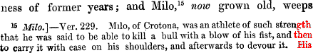

BOOK THE TWELFTH.
FABLES I. AND II.
The Greeks assemble their troops at Aulis, to proceed against the city of Troy, and revenge the rape of Helen; but the fleet is detained in port by contrary winds. Calchas, the priest, after a prediction concerning the success of the expedition, declares that the weather will never be favourable till Agamemnon shall have sacrificed his daughter Iphigenia. She is immediately led to the altar for that purpose; but Diana, appeased by this act of obedience, carries away the maiden, and substitutes a hind in her place, on which a fair wind arises. Upon the Greeks landing at Troy, a battle is fought, in which Protesilaüs is killed by Hector, and Achilles kills Cygnus, a Trojan, on which his father Neptune transforms him into a swan.
His father Priam mourned him, not knowing that Æsacus, having assumed wings, was still living; Hector, too, with his brothers, made unavailing offerings1 at a tomb, that bore his name on it. The presence of Paris was wanting, at this mournful office: who, soon after, brought into his country a lengthened war, together with a ravished wife;2 and a thousand ships3 uniting together, followed him, and, together with them, the whole body4 of the Pelasgian nation. Nor would vengeance have been delayed, had not the raging winds made the seas impassable, and the Bœotian land detained in fishy Aulis the ships ready to depart. Here, when they had prepared a 415 xii. 11-44. sacrifice to Jupiter, after the manner of their country, as the ancient altar was heated with kindled fires, the Greeks beheld an azure-coloured serpent creep into a plane tree, which was standing near the sacrifice they had begun. There was on the top of the tree a nest of twice four birds, which the serpent seized5 together, and the dam as she fluttered around the scene of her loss, and he buried them in his greedy maw. All stood amazed. But Calchas, the son of Thestor, a soothsayer, foreseeing the truth, says, “Rejoice, Pelasgians, we shall conquer. Troy will fall, but the continuance of our toil will be long;” and he allots the nine birds to the years of the war. The serpent, just as he is, coiling around the green branches in the tree, becomes a stone, and, under the form of a serpent, retains that stone form.
Nereus continued boisterous in the Ionian waves, and did not impel the sails onwards; and there are some who think that Neptune favoured Troy, because he made the walls of the city. But not so the son of Thestor. For neither was he ignorant, nor did he conceal, that the wrath of the virgin Goddess must be appeased by the blood of a virgin. After the public good had prevailed over affection, and the king over the father, and Iphigenia, ready to offer her chaste blood, stood before the altar, while the priests were weeping; the Goddess was appeased, and cast a mist before their eyes, and, amid the service and the hurry of the rites, and the voices of the suppliants, is said to have changed Iphigenia, the Mycenian maiden, for a substituted hind. Wherefore, when the Goddess was appeased by a death which was more fitting, and at the same moment the wrath of Phœbe, and of the sea was past, the thousand ships received the winds astern, and having suffered much, they gained the Phrygian shore.
There is a spot in the middle of the world, between the land and the sea, and the regions of heaven, the confines of the threefold universe, whence is beheld whatever anywhere exists, although it may be in far distant regions, and every sound pierces the hollow ears. Of this place Fame is possessed, and chooses for herself a habitation on the top6 of a tower, and 416 xii. 45-78. has added innumerable avenues, and a thousand openings to her house, and has closed the entrances with no gates. Night and day are they open. It is all of sounding brass; it is all resounding, and it reechoes the voice, and repeats what it hears. Within there is no rest, and silence in no part. Nor yet is there a clamour, but the murmur of a low voice, such as is wont to arise from the waves of the sea, if one listens at a distance, or like the sound which the end of the thundering makes when Jupiter has clashed the black clouds together. A crowd occupies the hall; the fickle vulgar come and go; and a thousand rumours, false mixed with true, wander up and down, and circulate confused words. Of these, some fill the empty ears with conversation; some are carrying elsewhere what is told them; the measure of the fiction is ever on the increase, and each fresh narrator adds something to what he has heard. There, is Credulity, there, rash Mistake, and empty Joy, and alarmed Fears, and sudden Sedition, and Whispers of doubtful origin. She sees what things are done in heaven and on the sea, and on the earth; and she pries into the whole universe.
She has made it known that Grecian ships are on their way, with valiant troops: nor does the enemy appear in arms unlooked for. The Trojans oppose their landing, and defend the shore, and thou, Protesilaüs,7 art, by the decrees of fate, the first to fall by the spear of Hector;8 and the battles now commenced, and the courageous spirits of the Trojans, and Hector, till then unknown, cost the Greeks dear. Nor do the Phrygians experience at small expense of blood what the Grecian right hand can do. And now the Sigæan shores are red with blood: now Cygnus, the son of Neptune, has slain a thousand men. Now is Achilles pressing on in his chariot, and levelling the Trojan ranks, with the blow of his Peleian spear; and seeking through the lines either Cygnus or Hector, he engages with Cygnus: Hector is reserved for the tenth year. Then animating the horses, having their 417 xii. 78-105. white necks pressed with the yoke, he directed his chariot against the enemy, and brandishing his quivering spear with his arm, he said, “O youth, whoever thou art, take this consolation in thy death, that thou art slain by the Hæmonian Achilles.”
Thus far the grandson of Æacus. His heavy lance followed his words. But, although there was no missing in the unerring lance, yet it availed nothing, by the sharpness of its point, thus discharged; and as it only bruised his breast with a blunt stroke, the other said, “Thou son of a Goddess, (for by report have we known of thee beforehand) why art thou surprised that wounds are warded off from me? (for Achilles was surprised); not this helmet that thou seest tawny with the horse’s mane, nor the hollowed shield, the burden of my left arm, are assistant to me; from them ornament alone is sought; for this cause, too, Mars is wont to take up arms. All the assistance of defensive armour shall be removed, and yet I shall come off unhurt. It is something to be born, not of a Nereid,9 but of one who rules both Nereus and his daughter, and the whole ocean.”
Thus he spoke; and he hurled against the descendant of Æacus his dart, destined to stick in the rim of his shield; it broke through both the brass and the next nine folds of bull’s hide; but stopping in the tenth circle of the hide, the hero wrenched it out, and again hurled the quivering weapon with a strong hand; again his body was without a wound, and unharmed, nor was a third spear able even to graze Cygnus, unprotected, and exposing himself. Achilles raged no otherwise than as a bull,10 in the open Circus,11 when with his dreadful horns he butts against the purple-coloured garments, used as the means of provoking him, and perceives that his wounds are evaded. Still, he examines whether the point has chanced to fall 418 xii. 105-132. from off the spear. It is still adhering to the shaft. “My hand then is weak,” says he, “and it has spent all the strength it had before, upon one man. For decidedly it was strong enough, both when at first I overthrew the walls of Lyrnessus, or when I filled both Tenedos and Eëtionian12 Thebes with their own blood. Or when Caÿcus13 flowed empurpled with the slaughter of its people: and Telephus14 was twice sensible of the virtue of my spear. Here, too, where so many have been slain, heaps of whom I both have made along this shore, and I now behold, my right hand has proved mighty, and is mighty.”
Thus he spoke; and as if he distrusted what he had done before, he hurled his spear against Menœtes, one of the Lycian multitude,15 who was standing opposite, and he tore asunder both his coat of mail, and his breast beneath it. He beating the solid earth with his dying head, he drew the same weapon from out of the reeking wound, and said, “This is the hand, this the lance, with which I conquered but now. The same will I use against him; in his case, I pray that the event may prove the same.” Thus he said, and he hurled it at Cygnus, nor did the ashen lance miss him; and, not escaped by him, it resounded on his left shoulder: thence it was repelled, as though by a wall, or a solid rock. Yet Achilles saw Cygnus marked with blood, where he had been struck, and he rejoiced, but in vain. There was no wound; that was the blood of Menœtes.
Then indeed, raging, he leaps headlong from his lofty chariot, and hand to hand, with his gleaming sword striking at his fearless foe, he perceives that the shield and the helmet are pierced with his sword, and that his weapon, too, is blunted upon his hard body. He endures it no longer; and drawing back his 419 xii. 133-145. shield, he three or four times strikes the face of the hero, and his hollow temples, with the hilt of the sword; and following, he presses onward as the other gives ground, and confounds him, and drives him on, and gives him no respite in his confusion. Horror seizes on him, and darkness swims before his eyes; and as he moves backwards his retreating steps, a stone in the middle of the field stands in his way. Impelled over this, with his breast upwards, Achilles throws Cygnus with great violence, and dashes him16 to the earth. Then, pressing down his breast with his shield and his hard knees, he draws tight the straps of his helmet; which, fastened beneath his pressed chin, squeeze close his throat, and take away his respiration and the passage of his breath.
He is preparing to strip his vanquished foe; he sees nothing but his armour, left behind. The God of the Ocean changed his body into a white bird, of which he so lately bore the name.
EXPLANATION.
It is not improbable that the prediction of Calchas, at Aulis, that the war against Troy would endure nine years, had no other foundation than his desire to check an enterprise which must be attended with much bloodshed, and difficulties of the most formidable nature. It is not unlikely, too, that this interpretation of the story of the serpent devouring the birds may have been planned by some of the Grecian generals, who did not dare openly to refuse their assistance to Agamemnon. The story of Iphigenia was, perhaps, founded on a similar policy. The ancient poets and historians are by no means agreed as to the fate of Iphigenia, as some say that she really was sacrificed, while others state that she was transformed into a she-bear, others into an old woman, and Nicander affirms that she was changed into a heifer.
There is no story more celebrated among the ancients than that of the intended immolation of Iphigenia. Euripides wrote two tragedies on the subject. Homer, however, makes no allusion to the story of Iphigenia; but he mentions Iphianassa, the daughter of Agamemnon, who was sent for, to be a hostage on his reconciliation with Achilles; she is probably the same person that is meant by the later poets, under the name of Iphigenia.
It has been suggested by some modern commentators, that the story of Iphigenia was founded on the sacrifice of his own daughter, by Jeptha, the judge of Israel, which circumstance happened much about the same time. The story of the substitution of the hind for the damsel, when about to be slain, was possibly founded on the substituted offering for Isaac when about to be offered by his father; for it is not probable that the people 420 xii. 146. of Greece were entirely ignorant of the existence of the books of Moses, and that wonderful narrative would be not unlikely to make an impression on minds ever ready to be attracted by the marvellous. Some writers have taken pains to show that Agamemnon did not sacrifice, or contemplate sacrificing, his own daughter, by asserting that the Iphigenia here mentioned was the daughter of Helen, who was educated by Clytemnestra, the wife of Agamemnon, and the sister of Helen. Pausanias also adopts this view, and gives for his authorities Euphorion of Chalcis, Alexander, Stesichorus, and the people of Argos, who preserved a tradition to the same effect.
Lucretius, Virgil, and Diodorus Siculus are in the number of those who assert that Iphigenia actually was immolated. According to Dictys the Cretan, and several of the ancient scholiasts, Ulysses having left the Grecian camp without the knowledge of Agamemnon, went to Argos, and returned with Iphigenia, under the pretext that her father intended to marry her to Achilles. Some writers state that Achilles was in love with Iphigenia; and that he was greatly enraged at Ulysses for bringing her to the camp, and opposed her sacrifice to the utmost of his power.
Ovid then proceeds to recount the adventures of the Greeks, after their arrival at Troy. An oracle had warned the Greeks, that he who should be the first to land on the Trojan shores, would inevitably be slain. Protesilaüs seeing that this prediction damped the courage of his companions, led the way, and sacrificed his life for the safety of his friends, being slain by Hector immediately on his landing. Cygnus, signalizing himself by his bravery, attracted the attention of Achilles, who singled him out as a worthy antagonist. It was said that this hero was the son of Neptune; perhaps because he was powerful by sea, and the prince of some island in the Archipelago. He was said to be invulnerable, most probably because his shield was arrow-proof. The story of his transformation into a swan, has evidently no other foundation than the resemblance between his name and that of that bird.
FABLES III. AND IV.
A truce ensuing, the Grecian chiefs having assembled at a feast, express their surprise at the fact of Cygnus being invulnerable. Nestor, by way of showing a still more surprising instance, relates how the Nymph Cænis, the daughter of Elatus, having yielded to the caresses of Neptune, was transformed by him into a man, and made invulnerable. Cæneus being present at the wedding feast of Pirithoüs, the son of Ixion, where Eurytus was a guest, the latter, being elevated with wine, made an attempt upon Hippodamia, the bride; on which a quarrel arose between the Centaurs and the Lapithæ. After many on both sides had been slain, Cæneus still remained unhurt; on which, the Centaurs having heaped up trunks of trees upon him, he was pressed to death; Neptune then changed his body into a bird.
This toil17 and this combat brought on a cessation for many 421 xii. 146-174. days; and both sides rested, laying aside their arms. And while a watchful guard was keeping the Phrygian walls, and a watchful guard was keeping the Argive trenches, a festive day had arrived, on which Achilles, the conqueror of Cygnus, appeased Pallas with the blood of a heifer, adorned with fillets. As soon as he had placed its entrails18 upon the glowing altars, and the smell, acceptable to the Deities, mounted up to the skies, the sacred rites had their share, the other part was served up at the table. The chiefs reclined on couches, and sated their bodies with roasted flesh,19 and banished both their cares and their thirst with wine. No harps, no melody of voices,20 no long pipe of boxwood pierced with many a hole, delights them; but in discourse they pass the night, and valour is the subject-matter of their conversation. They relate the combats of the enemy and their own; and often do they delight to recount, in turn, both the dangers that they have encountered and that they have surmounted. For of what else should Achilles speak? or of what, in preference, should they speak before the great Achilles? But especially the recent victory over the conquered Cygnus was the subject of discourse. It seemed wonderful to them all, that the body of the youth was penetrable by no weapon, and was susceptible of no wounds, and that it blunted the steel itself. This same thing, the grandson of Æacus, this, the Greeks wondered at.
When thus Nestor says to them: “Cygnus has been the only despiser of weapons in your time, and penetrable by no blows. But I myself formerly saw the Perrhæbean21 Cæneus bear a thousand blows with his body unhurt; Cæneus the Perrhæbean, I say, who, famous for his achievements, inhabited Othrys. And that this, too, might be the more wondrous in 422 xii. 174-205. him, he was born a woman.” They are surprised, whoever are present, at the singular nature of this prodigy, and they beg him to tell the story. Among them, Achilles says, “Pray tell us, (for we all have the same desire to hear it,) O eloquent old man,22 the wisdom of our age; who was this Cæneus, and why changed to the opposite sex? in what war, and in the engagements of what contest was he known to thee? by whom was he conquered, if he was conquered by any one?”
Then the aged man replied: “Although tardy old age is a disadvantage to me, and many things which I saw in my early years escape me now, yet I remember most of them; and there is nothing, amid so many transactions of war and peace, that is more firmly fixed in my mind than that circumstance. And if extended age could make any one a witness of many deeds, I have lived two hundred23 years, and now my third century is being passed by me. Cænis, the daughter of Elatus, was remarkable for her charms; the most beauteous virgin among the Thessalian maids, and one sighed for in vain by the wishes of many wooers through the neighbouring cities, and through thy cities, Achilles, for she was thy countrywoman. Perhaps, too, Peleus would have attempted that alliance; but at that time the marriage of thy mother had either befallen him, or had been promised him. Cænis did not enter into any nuptial ties; and as she was walking along the lonely shore, she suffered violence from the God of the ocean. ’Twas thus that report stated; and when Neptune had experienced the pleasures of this new amour, he said, ‘Be thy wishes secure from all repulse; choose whatever thou mayst desire.’ The same report has related this too; Cænis replied, ‘This mishap makes my desire extreme, that I may not be in a condition to suffer any such thing in future. Grant that I be no longer a woman, and thou wilt have granted me all.’ She spoke these last words with a hoarser tone, and the voice might seem to be that of a man, as indeed it was.
“For now the God of the deep ocean had consented to her 423 xii. 206-238. wish; and had granted moreover that he should not be able to be pierced by any wounds, or to fall by any steel. Exulting in his privilege, the Atracian24 departed; and now spent his time in manly exercises, and roamed over the Peneïan plains. Pirithoüs, the son of the bold Ixion, had married Hippodame,25 and had bidden the cloud-born monsters to sit down at the tables ranged in order, in a cave shaded with trees. The Hæmonian nobles were there; I, too, was there, and the festive palace resounded with the confused rout. Lo! they sing the marriage song, and the halls smoke with the fires;26 the maiden, too, is there, remarkable for her beauty, surrounded by a crowd of matrons and newly married women. We all pronounce Pirithoüs fortunate in her for a wife; an omen which we had well nigh falsified. For thy breast, Eurytus, most savage of the savage Centaurs, is inflamed as much with wine as with seeing the maiden; and drunkenness, redoubled by lust, holds sway over thee. On the sudden the tables being overset, disturb the feast, and the bride is violently dragged away by her seized hair. Eurytus snatches up Hippodame, and the others such as each one fancies, or is able to seize; and there is all the appearance of a captured city. The house rings with the cries of women. Quickly we all rise; and first, Theseus says, ‘What madness, Eurytus, is impelling thee, who, while I still live, dost provoke Pirithoüs, and, in thy ignorance, in one dost injure two?’ And that the valiant hero may not say these things in vain, he pushes them off as they are pressing on, and takes her whom they have seized away from them as they grow furious.
“He says nothing in answer, nor, indeed, can he defend such actions by words; but he attacks the face of her protector with insolent hands, and strikes his generous breast. By chance, there is near at hand an ancient bowl, rough with projecting figures, which, huge as it is, the son of Ægeus, himself huger still, takes up and hurls full in his face. He, vomiting 424 xii. 239-266. both from his wounds and his mouth clots of blood,27 and brains and wine together, lying on his back, kicks on the soaking sand. The double-limbed28 Centaurs are inflamed at the death of their brother; and all vying, with one voice exclaim, ‘To arms! to arms!’ Wine gives them courage, and, in the first onset, cups hurled are flying about, and shattered casks29 and hollow cauldrons; things before adapted for a banquet, now for war and slaughter. First, the son of Ophion, Amycus, did not hesitate to spoil the interior of the house of its ornaments; and first, from the shrine he tore up a chandelier,30 thick set with blazing lamps; and lifting it on high, like him who attempts to break the white neck of the bull with sacrificial axe, he dashed it against the forehead of Celadon the Lapithean, and left his skull mashed into his face, no longer to be recognized. His eyes started out, and the bones of his face being dashed to pieces, his nose was driven back, and was fixed in the middle of his palate. Him, Belates the Pellæan, having torn away the foot of a maple table, laid flat on the ground, with his chin sunk upon his breast, and vomiting forth his teeth mixed with blood; and sent him, by a twofold wound, to the shades of Tartarus.
“As Gryneus stood next, looking at the smoking altar with a grim look, he said, ‘And why do we not make use of this?’ and then he raised an immense altar, together with its fire; and hurled it into the midst of the throng of the Lapithæ, and struck down two of them, Broteus and Orius. The mother of Orius was Mycale, who was known by her incantations to have often drawn down the horns of the struggling moon. On this Exadius says, ‘Thou shalt not go unpunished, if only the opportunity of getting a weapon is given me;’ and, as his weapon, 425 xii. 266-299. he wields the antlers of a votive stag,31 which were upon a lofty pine-tree. With the double branches of these, Gryneus is pierced through the eyes, and has those eyes scooped out. A part of them adheres to the antlers, a part runs down his beard, and hangs down clotted with gore. Lo! Rhœtus snatches up an immense flaming brand, from the middle of the altar, and on the right side breaks through the temples of Charaxus, covered with yellow hair. His locks, seized by the violent flames, burn like dry corn, and the blood seared in the wound emits a terrific noise in its hissing, such as the iron glowing in the flames is often wont to emit, which, when the smith has drawn it out with the crooked pincers, he plunges into the trough; whereon it whizzes, and, sinking in the bubbling water, hisses. Wounded, he shakes the devouring fire from his locks, and takes upon his shoulders the threshold, torn up out of the ground, a whole waggon-load, which its very weight hinders him from throwing full against the foe. The stony mass, too, bears down Cometes, a friend, who is standing at a short distance; nor does Rhœtus then restrain his joy, and he says, ‘In such manner do I pray that the rest of the throng of thy party may be brave;’ and then he increases the wound, redoubled with the half-burnt stake, and three or four times he breaks the sutures of his head with heavy blows, and its bones sink within the oozing brains.
“Victorious, he passes on to Evagrus, and Corythus, and Dryas; of which number, when Corythus, having his cheeks covered32 with their first down, has fallen, Evagrus says, ‘What glory has been acquired by thee, in killing a boy?’ Rhœtus permits him to say no more, and fiercely thrusts the glowing flames into the open mouth of the hero, as he is speaking, and through the mouth into the breast. Thee, too, cruel Dryas, he pursues, whirling the fire around his head, but the same issue does not await thee as well. Thou piercest him with a stake burnt at the end, while triumphing in the success of an 426 xii. 299-328. uninterrupted slaughter, in the spot where the neck is united to the shoulder. Rhœtus groans aloud, and with difficulty wrenches the stake out of the hard bone, and, drenched in his own blood, he flies. Orneus flies, too, and Lycabas, and Medon, wounded in his right shoulder-blade, and Thaumas with Pisenor; Mermerus, too, who lately excelled all in speed of foot, but now goes more slowly from the wound he has received; Pholus, too, and Melaneus, and Abas a hunter of boars, and Astylos the augur, who has in vain dissuaded his own party from this warfare. He also says to Nessus,33 as he dreads the wounds, ‘Fly not! for thou shalt be reserved for the bow of Hercules.’ But Eurynomus and Lycidas, and Areos, and Imbreus did not escape death, all of whom the right hand of Dryas pierced right through. Thou, too, Crenæus, didst receive a wound in front,34 although thou didst turn thy back in flight; for looking back, thou didst receive the fatal steel between thy two eyes, where the nose is joined to the lower part of the forehead. In the midst of so much noise, Aphidas was lying fast asleep from the wine which he had drunk incessantly, and was not aroused, and in his languid hand was grasping the mixed bowl, stretched at full length upon the shaggy skin of a bear of Ossa. Soon as Phorbas beheld him from afar, wielding no arms, he inserted his fingers in the strap of his lance,35 and said, ‘Drink thy wine mingled with the water of Styx;’ and, delaying no longer, he hurled his javelin against the youth, and the ash pointed with steel was driven into his neck, as, by chance, he lay there on his back. His death happened without his being sensible of it; and the blood flowed from his full throat, both upon the couch and into the bowl itself.
“I saw Petræus endeavouring to tear up an acorn-bearing oak from the earth; and, as he was grasping it in his embrace, 427 xii. 328-364. and was shaking it on this side and that, and was moving about the loosened tree, the lance of Pirithoüs hurled at the ribs of Petræus, transfixed his struggling breast together with the tough oak. They said, too, that Lycus fell by the valour of Pirithoüs, and that Chromis fell by the hand of Pirithoüs. But each of them gave less glory to the conqueror, than Dictys and Helops gave. Helops was transfixed by the javelin, which passed right through his temples, and, hurled from the right side, penetrated to his left ear. Dictys, slipping from the steep point of a rock, while, in his fear, he is flying from the pursuing son of Ixion, falls down headlong, and, by the weight of his body, breaks a huge ash tree, and spits his own entrails upon it, thus broken. Aphareus advances as his avenger, and endeavours to hurl a stone torn away from the mountain. As he is endeavouring to do so, the son of Ægeus attacks him with an oaken club, and breaks the huge bones of his arm, and has neither leisure, nor, indeed, does he care to put his useless body to death; and he leaps upon the back of the tall Bianor, not used to bear36 any other than himself; and he fixes his knees in his ribs, and holding his long hair, seized with his left hand, shatters his face, and his threatening features, and his very hard temples, with the knotty oak. With his oak, too, he levels Nedymnus, and Lycotas the darter, and Hippasus having his breast covered with his flowing beard, and Ripheus, who towered above the topmost woods, and Tereus, who used to carry home the bears, caught in the Hæmonian mountains, alive and raging.
“Demoleon could not any longer endure Theseus enjoying this success in the combat, and he tried with vast efforts to tear up from the thick-set wood an aged pine; because he could not effect this, he hurled it, broken short, against his foe. But Theseus withdrew afar from the approaching missile, through the warning of Pallas; so at least he himself wished it to be thought. Yet the tree did not fall without effect: for it struck off from the throat of the tall Crantor, both his breast and his left shoulder. He, Achilles, had been the armour-bearer of thy father: him Amyntor, king of the Dolopians,37 428 xii. 364-397. when conquered in war, had given to the son of Æacus, as a pledge and confirmation of peace. When Peleus saw him at a distance, mangled with a foul wound, he said, ‘Accept however, Crantor, most beloved of youths, this sacrifice;’ and, with a strong arm, and energy of intention, he hurled his ashen lance against Demoleon, which broke through the enclosures of his ribs, and quivered, sticking amid the bones. He draws out with his hand the shaft without the point; even that follows, with much difficulty; the point is retained within his lungs. The very pain gives vigour to his resolution; though wounded, he rears against the enemy, and tramples upon the hero with his horse’s feet. The other receives the re-echoing strokes upon his helmet and his shield, and defends his shoulders, and holds his arms extended before him, and through the shoulder-blades he pierces two breasts38 at one stroke. But first, from afar, he had consigned to death Phlegræus, and Hyles; in closer combat, Hiphinoüs and Clanis. To these is added Dorylas, who had his temples covered with a wolf’s skin, and the real horns of oxen reddened with much blood, that performed the duty of a cruel weapon.
“To him I said, for courage gave me strength, ‘Behold, how much thy horns are inferior to my steel;’ and then I threw my javelin. When he could not avoid this, he held up his right hand before his forehead, about to receive the blow; and to his forehead his hand was pinned. A shout arose; but Peleus struck him delaying, and overpowered by the painful wound, (for he was standing next to him) with his sword beneath the middle of his belly. He leaped forth, and fiercely dragged his own bowels on the ground, and trod on them thus dragged, and burst them thus trodden; and he entangled his legs, as well in them, and fell down, with his belly emptied of its inner parts. Nor did thy beauty, Cyllarus,39 save thee while fighting, if only we allow beauty to that monstrous nature of thine. His beard was beginning to grow; the colour of his beard was that of gold; and golden-coloured hair was hanging from his shoulders to the middle of his shoulder-blades. In his face there was a pleasing briskness; his neck, and his 429 xii. 397-435. shoulders, and his hands, and his breast were resembling the applauded statues of the artists, and so in those parts in which he was a man; nor was the shape of the horse beneath that shape, faulty and inferior to that of the man. Give him but the neck and the head of a horse, and he would be worthy of Castor. So fit is his back to be sat upon, so stands his breast erect with muscle; he is all over blacker than black pitch; yet his tail is white; the colour, too, of his legs is white. Many a female of his own kind longed for him; but Hylonome alone gained him, than whom no female more handsome lived in the lofty woods, among the half beasts. She alone attaches Cyllarus, both by her blandishments, and by loving, and by confessing that she loves him. Her care, too, of her person is as great as can be in those limbs: so that her hair is smoothed with a comb; so that she now decks herself with rosemary, now with violets or roses, and sometimes she wears white lilies; and twice a day she washes her face with streams that fall from the height of the Pagasæan wood; and twice she dips her body in the stream: and she throws over her shoulder or her left side no skins but what are becoming, and are those of choice beasts.
“Their love was equal: together they wandered upon the mountains; together they entered the caves; and then, too, together had they entered the Lapithæan house; together were they waging the fierce warfare. The author of the deed is unknown: but a javelin came from the left side, and pierced thee, Cyllarus, below the spot where the breast is joined to the neck. The heart, being pierced with a small wound, grew cold, together with the whole body, after the weapon was drawn out. Immediately, Hylonome receives his dying limbs, and cherishes the wound, by laying her hand on it, and places her mouth on his, and strives to stop the fleeting life. When she sees him dead, having uttered what the clamour hinders from reaching my ears, she falls upon the weapon that has pierced him, and as she dies, embraces her husband. He, too, now stands before my eyes, Phæocomes, namely, who had bound six lions’ skins together with connecting knots; covered all over, both horse and man. He, having discharged the trunk of a tree, which two yokes of oxen joined together could hardly have moved, battered the son of Phonolenus on the top of his head. The very broad round form of his skull was broken; and through his mouth, and 430 xii. 435-464. through his hollow nostrils, and his eyes, and his ears, his softened brains poured down; just as curdled milk is wont through the oaken twigs, or as any liquor flows under the weight of a well-pierced sieve, and is squeezed out thick through the numerous holes. But I, while he was preparing to strip him of his arms as he lay, (this thy sire knows,) plunged my sword into the lower part of his belly, as he was spoiling him. Chthonius, too, and Teleboas, lay pierced by my sword. The former was bearing a two-forked bough as his weapon, the latter a javelin; with his javelin he gave me a wound. You see the marks; look! the old scar is still visible.
“Then ought I40 to have been sent to the taking of Troy; then I might, if not have overcome, still have stayed the arms of the mighty Hector. But at that time Hector was not existing, or but a boy; and now my age is failing. Why tell thee of Periphas, the conqueror of the two-formed Pyretus? Why of Ampyx, who fixed his cornel-wood spear, without a point, full in the face of the four-footed Oëclus? Macareus, struck down the Pelethronian41 Erigdupus,42 by driving a crowbar into his breast. I remember, too, that a hunting spear, hurled by the hand of Nessus, was buried in the groin of Cymelus. And do not believe that Mopsus,43 the son of Ampycus, only foretold things to come; a two-formed monster was slain by Mopsus, darting at him, and Odites in vain attempted to speak, his tongue being nailed to his chin, and his chin to his throat. Cæneus had put five to death, Stiphelus, and Bromus, and Antimachus, and Helimus, and Pyracmos, wielding the axe. I do not remember their respective wounds, but I marked their numbers, and their names. Latreus, most huge both in his limbs and his body, sallied forth, armed with the spoils of Emathian44 Halesus, whom he had consigned to death. His age was between that of a youth, and an old man; 431 xii. 465-494. his vigour that of a youth; grey hairs variegated his temples. Conspicuous by his buckler, and his helmet, and his Macedonian pike;45 and turning his face towards both sides, he brandished his arms, and rode in one same round, and vaunting, poured forth thus many words into the yielding air:—
“‘And shall I put up with thee, too, Cænis? for to me thou shalt ever be a woman, to me always Cænis. Does not thy natal origin lower thy spirit? And does it not occur to thy mind for what foul deed thou didst get thy reward, and at what price the false resemblance to a man? Consider both what thou wast born, as well as what thou hast submitted to: go, and take up a distaff together with thy baskets, and twist the threads46 with thy thumb; leave warfare to men.’ As he is vaunting in such terms, Cæneus pierces his side, stretched in running, with a lance hurled at him, just where the man is joined to the horse. He raves with pain, and strikes at the exposed face of the Phylleian 47 youth with his pike. It bounds back no otherwise than hail from the roof of a house; or than if any one were to beat a hollow drum with a little pebble. Hand to hand he encounters him, and strives to plunge his sword into his tough side; but the parts are impervious to his sword. ‘Yet,’ says he, ‘thou shalt not escape me; with the middle of the sword shalt thou be slain, since the point is blunt;’ and then he slants the sword against his side, and grasps his stomach with his long right arm. The blow produces an echo, as on a body of marble when struck; and the shivered blade flies different ways, upon striking his neck.
“After Cæneus had enough exposed his unhurt limbs to him in his amazement, ‘Come now,’ said he, ‘let us try thy body with my steel;’ and up to the hilt he plunged his fatal sword into his shoulder-blade, and extended his hand unseen into his entrails, and worked it about, and in the wound made a fresh wound. Lo! the double-limbed monsters, enraged, rush on 432 xii. 494-533. in an impetuous manner, and all of them hurl and thrust their weapons at him alone. Their weapons fall blunted. Unstabbed and bloodless the Elateïan Cæneus remains from each blow. This strange thing makes them astonished. ‘Oh great disgrace!’ cries Monychus; ‘a whole people, we are overcome by one, and that hardly a man; although, indeed, he is a man; and we by our dastardly actions, are what he once was. What signify our huge limbs? What our twofold strength? What that our twofold nature has united in us the stoutest animals in existence? I neither believe that we are born of a Goddess for our mother, nor of Ixion, who was so great a person, that he conceived hopes of even the supreme Juno. By a half male foe are we baffled. Heap upon him stones and beams, and entire mountains, and dash out his long-lived breath, by throwing whole woods upon him. Let a whole wood press on his jaws; and weight shall be in the place of wounds.’
“Thus he said; and by chance having got a tree, thrown down by the power of the boisterous South wind, he threw it against the powerful foe: and he was an example to the rest; and in a short time, Othrys, thou wast bare of trees, and Pelion had no shades. Overwhelmed by this huge heap, Cæneus swelters beneath the weight of the trees, and bears on his brawny shoulders the piled-up oaks. But after the load has increased upon his face and his head, and his breath has no air to draw; at one moment he faints, at another he endeavours, in vain, to raise himself into the open air, and to throw off the wood cast upon him: and sometimes he moves it. Just as lo! we see, if lofty Ida is convulsed with earthquakes. The event is doubtful. Some gave out that his body was hurled to roomy Tartarus by the weight of the wood. The son of Ampycus denied this, and saw go forth into the liquid air, from amid the pile, a bird with tawny wings; which then was beheld by me for the first time, then, too, for the last. When Mopsus saw it with gentle flight surveying his camp, and making a noise around it with a vast clamour, following him both with his eyes and his feelings, he said, ‘Hail! thou glory of the Lapithæan race, once the greatest of men, but now the only bird of thy kind, Cæneus.’ This thing was credited from its assertor. Grief added resentment, and we bore it with disgust, that one was overpowered by foes so 433 xii. 533-535. many. Nor did we cease to exercise our weapons, in shedding their blood, before a part of them was put to death, and flight and the night dispersed the rest.”
EXPLANATION.
We learn from Diodorus Siculus, and other ancient authors, that the people of Thessaly, and those especially who lived near Mount Pelion, were the first who trained horses for riding, and used them as a substitute for chariots. Pliny the Elder says that they excelled all the other people of Greece in horsemanship, and that they carried it to such perfection, that the name of ἱππεὺς, ‘a horseman,’ and that of ‘Thessalian,’ became synonymous. Again, the Thessalians, from their dexterity in killing the wild bulls that infested the neighbouring mountains, sometimes with darts or spears, and at other times in close engagement, acquired the name of Hippocentaurs, that is, ‘horsemen that hunted bulls,’ or simply κένταυροι, ‘Centaurs.’
It is not improbable that, because the Thessalians began to practise riding in the reign of Ixion, the poets made the Centaurs his sons; and they were said to have a cloud for their mother, which Jupiter put in the place of Juno, to baulk the attempt of Ixion on her virtue, because, according to Palæphatus, many of them lived in a city called Nephele, which, in Greek, signifies a cloud. As another method of accounting for their alleged descent from a cloud, it has been suggested that the Centaurs were a rapacious race of men, who ravaged the neighbouring country: that those who wrote the first accounts of them, in the ancient dialect of Greece, gave them the name of Nephelim, (the epithet of the giants of Scripture,) many Phœnician words having been imported in the early language of that country; and that in later times, finding them called by this name, the Greek word Nephelè, signifying ‘a cloud,’ persons readily adopted the fable that they were born of one.
The Centaurs being the descendants of Centaurus, the son of Ixion, and Pirithoüs being also the son of Ixion, by Dia, the former, declared war against Pirithoüs, asserting, that, as the descendants of Ixion, they had a right to share in the succession to his dominions. This quarrel, however, was made up, and they continued on friendly terms, until the attempt of Eurytus, or Eurytion, on Hippodamia, the bride of Pirithoüs, which was followed by the consequences here described by Ovid. The Centaurs are twice mentioned in the Iliad as φῆρες, or ‘wild beasts,’ and once under the name of ‘Centaurs.’ Pindar is the first writer that mentions them as being of a twofold form, partly man, and partly horse. In the twenty-first Book of the Odyssey, line 295, Eurytion is said to have had his ears and nose cut off by way of punishment, and that, from that period, ‘discord arose between the Centaurs and men.’
Buttman, (Mythologus, ii. p. 22, as quoted by Mr. Keightley), says that the names of Centaurs and Lapithæ are two purely poetic names, used to designate two opposite races of men,—the former, the rude horse-riding tribes, which tradition records to have been spread over the north of Greece: the latter, the more civilized race, which founded towns, and gradually drove their wild neighbours back into the mountains. He thinks 434 xii. 536-541. that the explanation of the word ‘Centaurs,’ as ‘Air-piercers,’ (from κεντεῖν τὴν αὔραν) not an improbable one, for the idea is suggested by the figure of a Cossack leaning forward with his protruded lance as he gallops along. But he regards the idea of κένταυρος, having been in its origin simply κέντωρ, as much more probable, [it meaning simply ‘the spurrer-on.’] Lapithæ may, he thinks, have signified ‘Stone persuaders,’ from λᾶας πείθειν, a poetic appellation for the builders of towns. He supposes Hippodamia to have been a Centauress, married to the prince of the Lapithæ, and thus accounts for the Centaurs having been at the wedding. Mr. Keightley, in his ‘Mythology of Ancient Greece and Italy,’ remarks that ‘it is certainly not a little strange that a rude mountain race like the Centaurs should be viewed as horsemen; and the legend which ascribes the perfecting of the art of horsemanship to the Lapithæ, is unquestionably the more probable one. The name Centaur, which so much resembles the Greek verb κεντέω, ‘to spur,’ we fancy gave origin to the fiction. This derivation of it is, however, rather dubious.’
After the battle here described, the Centaurs retreated to the mountains of Arcadia. The Lapithæ pursuing them, drove them to the Promontory of Malea in Laconia, where, according to Apollodorus, Neptune took them into his protection. Servius and Antimachus, as quoted by Comes Natalis, say that some of them fled to the Isle of the Sirens (or rather to that side of Italy which those Nymphs had made their abode); and that there they were destroyed by the voluptuous and debauched lives they led.
The fable of Cæneus, which Ovid has introduced, is perhaps simply founded on the prodigious strength and the goodness of the armour of a person of that name. The story of Halyonome killing herself on the body of Cyllarus, may possibly have been handed down by tradition. It is not unlikely that, if the Centaurs were horsemen, their women were not unacquainted with horsemanship; indeed, representations of female Centaurs are given, on ancient monuments, as drawing the chariot of Bacchus.
FABLES V. AND VI.
Periclymenus, the brother of Nestor, who has received from Neptune the power of transforming himself, is changed into an eagle, in a combat with Hercules; and in his flight is shot by him with an arrow. Neptune prays Apollo to avenge the death of Cygnus: because the Destinies will not permit him to do so himself. Apollo enters the Trojan camp in disguise, and directs the arrow which Paris aims at Achilles; who is mortally wounded in the heel, the only vulnerable part of his body.
As the Pylian related this fight between the Lapithæ and the Centaurs, but half human, Tlepolemus48 could not endure his sorrow for Alcides being passed by with silent lips, and said, “It is strange, old man, that thou shouldst have a forgetfulness of the exploits of Hercules; at least, my father himself used often 435 xii. 541-576. to relate to me, that these cloud-begotten monsters were conquered by him.” The Pylian, sad at this, said, “Why dost thou force me to call to mind my misfortunes, and to rip up my sorrows, concealed beneath years, and to confess my hatred of, and disgust at, thy father? He, indeed, ye Gods! performed things beyond all belief, and filled the world with his services; which I could rather wish could be denied; but we are in the habit of praising neither Deiphobus nor Polydamas,49 nor Hector himself: for who would commend an enemy? That father of thine once overthrew the walls of Messene, and demolished guiltless cities, Elis and Pylos, and carried the sword and flames into my abode. And, that I may say nothing of others whom he slew, we were twice six sons of Neleus, goodly youths; the twice six fell by the might of Hercules, myself alone excepted. And that the others were vanquished might have been endured; but the death of Periclymenus is wonderful; to whom Neptune, the founder of the Neleian family, had granted to be able to assume whatever shapes he might choose, and again, when assumed, to lay them aside. He, after he had in vain been turned into all other shapes, was turned into the form of the bird that is wont to carry the lightnings in his crooked talons, the most acceptable to the king of the Gods. Using the strength of that bird, his wings, and his crooked bill, together with his hooked talons, he tore the face of the hero. The Tirynthian hero aims at him his bow, too unerring, and hits him, as he moves his limbs aloft amid the clouds, and hovering in the air, just where the wing is joined to the side.
“Nor is the wound a great one, but his sinews, cut by the wound, fail him, and deny him motion and strength for flying. He fell down to the earth, his weakened pinions not catching the air; and where the smooth arrow had stuck in his wing, it was pressed still further by the weight of his pierced body, and it was driven, through the upper side, into the left part of the neck. Do I seem to be owing encomiums to the exploits of thy father Hercules, most graceful leader of the Rhodian fleet?50 Yet I will no further avenge my brothers, 436 xii. 576-602. than by being silent on his brave deeds: with thyself I have a firm friendship.” After the son51 of Neleus had said these things with his honied tongue, the gifts of Bacchus being resumed after the discourse of the aged man, they arose from their couches: the rest of the night was given to sleep.
But the God who commands the waters of the sea with his trident, laments, with the affection of a father, the body of his son, changed into the bird of the son of Sthenelus; and abhorring the ruthless Achilles, pursues his resentful wrath in more than an ordinary manner. And now, the war having been protracted for almost twice five years, with such words as these he addresses the unshorn Smintheus:52 “O thou, most acceptable to me, by far, of the sons of my brother, who, together with me, didst build the walls of Troy in vain; and dost thou not grieve when thou lookest upon these towers so soon to fall? or dost thou not lament that so many thousands are slain in defending these walls? and (not to recount them all) does not the ghost of Hector, dragged around his Pergamus, recur to thee? Though still the fierce Achilles, more blood-stained than war itself, lives on, the destroyer of our toil, let him but put himself in my power, I will make him feel what I can do with my triple spear. But since it is not allowed us to encounter the enemy in close fight, destroy him, when off his guard, with a secret shaft.”
He nodded his assent; and the Delian God, indulging together both his own resentment and that of his uncle, veiled in a cloud, comes to the Trojan army, and in the midst of the slaughter of the men, he sees Paris, at intervals, scattering his darts among the ignoble Greeks; and, discovering himself to be a Divinity, he says, “Why dost thou waste thy arrows upon 437 xii. 602-628. the blood of the vulgar? If thou hast any concern for thy friends, turn upon the grandson of Æacus, and avenge thy slaughtered brothers.” Thus he said; and pointing at the son of Peleus, mowing down the bodies of the Trojans with the sword, he turned his bow towards him, and directed his unerring arrow with a fatal right hand. This was the only thing at which, after the death of Hector, the aged Priam could rejoice. And art thou then, Achilles, the conqueror of men so great, conquered by the cowardly ravisher of a Grecian wife? But if it had been fated for thee to fall by the hand of a woman, thou wouldst rather have fallen by the Thermodontean53 battle-axe.
Now that dread of the Phrygians, the glory and defence of the Pelasgian name, the grandson of Æacus, a head invincible in war, had been burnt: the same Divinity had armed him,54 and had burned him. He is now but ashes; and there remains of Achilles, so renowned, I know not what; that which will not well fill a little urn. But his glory lives, which can fill the whole world: this allowance is befitting that hero, and in this the son of Peleus is equal to himself, and knows not the empty Tartarus. Even his very shield gives occasion for war, that you may know to whom it belongs; and arms are wielded for arms. The son of Tydeus does not dare to claim them, nor Ajax, the son of Oïleus,55 nor the younger son of Atreus, nor he who is his superior both in war and age, nor any others; the hope of so much glory exists only in him begotten by Telamon and the son of Laërtes. The descendant of Tantalus56 removes from himself the burden and the odium of a decision, and orders the Argive leaders to sit in the midst of the camp, and transfers the judgment of the dispute to them all.
EXPLANATION.
Periclymenus was the son of Neleus and Chloris, as we are told by 438 Homer, Apollodorus, and other authors. According to these authors, Neleus, king of Orchomenus, was the son of Neptune, who assumed the form of the river Enipeus, the more easily to deceive Tyro, the daughter of Salmoneus. Neleus married Chloris, the daughter of Amphion, king of Thebes, who bore him eleven sons and one daughter, of which number, Homer names but three. Periclymenus, the youngest of the family, was a warlike prince, and, according to Apollodorus, accompanied Jason in the expedition of the Argonauts. Hercules, after having instituted the Olympic games, marched into Messenia, and declared war with Neleus. The ancient writers differ as to the cause of this expedition; but they agree in stating, that Hercules made himself master of Pylos, a town which Neleus had built, as a refuge from the capricious humours of his brother Pelias; and that Neleus and all his children were killed, except Nestor, who had been brought up among the Geranians, and who afterwards reigned in Pylos. The story which here relates how Periclymenus transformed himself into an eagle, and was then killed by Hercules, may possibly mean, that having long resisted the attacks of his formidable enemy, he was at length put to flight, and slain by an arrow. It is said that Neptune had given him the power to metamorphose himself into different figures, very probably because his grandfather, who was a maritime prince, had taught him the art of war and various stratagems, which he industriously made use of, to avert the ruin of his family.
In relation to the story of the death of Achilles, Dictys the Cretan tells us, that Achilles having seen Polyxena, the daughter of Priam, along with Cassandra, as she was sacrificing to Apollo, fell in love with her, and demanded her in marriage and that Hector would not consent to it, except on condition of his betraying the Greeks. This demand, so injurious to his honour, provoked Achilles so much, that he forthwith slew Hector, and dragged his body round the walls of the city. He further says that when Priam went to demand the body of Hector, he took Polyxena with him, in order to soften Achilles. His design succeeded, and Priam then agreed to give her to him in marriage. On the day appointed for the solemnity in the temple of Apollo, Paris, concealing himself behind the altar, while Deiphobus pretended to embrace Achilles, wounded him in the heel, and killed him on the spot, either because the arrow was poisoned, or because he was wounded on the great tendon, which has since been called ‘tendon Achillis,’ a spot where a wound might very easily be mortal.
This story of the death of Achilles does not seem to have been known to Homer; for he appears, in the twenty-fourth book of the Odyssey, to insinuate that that hero died in battle, fighting for the Grecian cause.
After his death Achilles was honoured as a Demigod, and Strabo says that he had a temple near the promontory of Sigæum. Pausanias and Pliny the Elder make mention of an island in the Euxine Sea, where the memory of Achilles was expressly honoured, from which circumstances it had the name of Achillea.
1. Unavailing offerings.]—Ver. 3. ‘Inferias inanes’ is a poetical expression, signifying the offering sacrifices of honey, milk, wine, blood, flowers, frankincense, and other things, at a tomb, which was empty or honorary. The Greeks called these kind of sacrifices by the name of χοαὶ.
2. A ravished wife.]—Ver. 5. This was Helen, the wife of Menelaüs, whose abduction by Paris was the cause of the Trojan war.
3. A thousand ships.]—Ver. 7. That is, a thousand in round numbers. For Homer makes them, 1186; Dictys Cretensis, 1225; and Dares, 1140.
4. The whole body.]—Ver. 7. The adjective ‘commune’ is here used substantively, and signifies ‘the whole body.’
5. Serpent seized.]—Ver. 16-17. Clarke translates this line, ‘Which the snake whipt up, as also the dam flying about her loss, and buried them in his greedy paunch.’
6. On the top.]—Ver. 43. ‘Summaque domum sibi legit in arce,’ is translated by Clarke, ‘And chooses there a house for herself, on the very tip-top of it.’
7. Protesilaüs.]—Ver. 68. He was the husband of Laodamia, the daughter of Acastus. His father was Iphiclus, who was noted for his extreme swiftness.
8. Spear of Hector.]—Ver. 67. Some writers say that he fell by the hand of Æneas.
9. Of a Nereid.]—Ver. 93. Cygnus says this sarcastically, in allusion to Achilles being born of Thetis, a daughter of Nereus.
10. As a bull.]—Ver. 103-4. Clarke translates these lines in this comical strain: ‘Achilles was as mad as a bull in the open Circus, when he pushes at the red coat, stuffed, used on purpose to provoke him.’
11. The open Circus.]—Ver. 104. We learn from Seneca, that it was the custom in the ‘venationes’ of the Circus to irritate the bull against his antagonist, by thrusting in his path figures stuffed with straw or hay, and covered with red cloth. Similar means are used to provoke the bull in the Spanish bull-fights of the present day.
12. Eëtionian.]—Ver. 110. Eëtion, the father of Andromache, the wife of Hector, was the king of Thebes in Cilicia, which place was ravaged by the Greeks for having sent assistance to the Trojans.
13. Caÿcus.]—Ver. 111. The Caÿcus was a river of Mysia, in Asia Minor, which country had incurred the resentment of the Greeks, for having assisted the Trojans.
14. Telephus.]—Ver. 112. Telephus, the son of Hercules and the Nymph Auge, was wounded in combat by Achilles. By the direction of the oracle, he applied to Achilles for his cure, which was effected by means of the rust of the weapon with which the wound was made.
15. Lycian multitude.]—Ver. 116. The Lycians, whose territory was in Asia Minor, between Caria and Pamphylia, were allies of the Trojans.
16. And dashes him.]—Ver. 139. Clarke renders this line, ‘He overset him, and thwacked him against the ground.’
17. This toil.]—Ver. 146. Clarke translates ‘Hic labor,’ ‘This laborious bout.’
18. Its entrails.]—Ver. 152. The ‘prosecta,’ or ‘prosiciæ,’ or ‘ablegamina,’ were portions of the animal which were the first cut off, for the purpose of becoming as a sacrifice to the Deities. The ‘prosecta,’ in general, consisted of a portion of the entrails.
19. Roasted flesh.]—Ver. 155. We are informed by Servius, that boiled meat was not eaten in the heroic ages.
20. Melody of voices.]—Ver. 157. Plutarch remarks, that that entertainment is the most pleasant where no musician is introduced; conversation, in his opinion, being preferable.
21. Perrhæbean.]—Ver. 172. The Perrhæbeans were a people of Thessaly, who, having been conquered by the Lapithæ, betook themselves to the mountain fortresses of Pindus.
22. Eloquent old man.]—Ver. 176-181. Clarke renders these lines, ‘Come, tell us, O eloquent old gentleman, the wisdom of our age, who was that Cæneus, and why he was turned into the other sex? in which war, or what engagement, he was known to you? by whom he was conquered, if he was conquered by any one?’ Upon that, the old blade replied.’
23. Two hundred.]—Ver. 188. Ovid does not here follow the more probable version, that the age of Nestor was three generations of thirty years each.
24. The Atracian.]—Ver. 209. ‘Atracides’ is an epithet, meaning ‘Thessalian,’ as Atrax, or Atracia, was a town of Thessaly, situated near the banks of the river Peneus.
25. Hippodame.]—Ver. 210. She is called Ischomache by Propertius, and Deidamia by Plutarch.
26. With the fires.]—Ver. 215. These fires would be those of the nuptial torches, and of the altars for sacrifice to Hymenæus and the other tutelary divinities of marriage.
27. Clots of blood.]—Ver. 238. Clarke renders ‘Sanguinis globos,’ ‘goblets of blood.’
28. Double-limbed.]—Ver. 240. Clarke translates, ‘Ardescunt bimembres,’ ‘The double-limbed fellows are in a flame.’
29. Shattered cask.]—Ver. 243. ‘Cadi’ were not only earthenware vessels, in which wine was kept, but also the vessels used for drawing water.
30. A chandelier.]—Ver. 247. ‘Funale’ ordinarily means, ‘a link,’ or ‘torch,’ made of fibrous substances twisted together, and smeared with pitch or wax. In this instance the word seems to mean a chandelier with several branches.
31. A votive stag.]—Ver. 267. It appears that the horns of a stag were frequently offered as a votive gift to the Deities, especially to Diana, the patroness of the chase. Thus in the seventh Eclogue of Virgil, Mycon vows to present to Diana, ‘Vivacis cornua cervi,’ ‘The horns of a long-lived stag.’
32. Cheeks covered.]—Ver. 291. ‘Prima tectus lanugine malas,’ is not very elegantly rendered by Clarke, ‘Having his chaps covered with down, then first putting out.’
33. Nessus.]—Ver. 309. We have already seen how Nessus the Centaur met his death from the arrow of Hercules, when about to offer violence to Deïanira.
34. A wound in front.]—Ver. 312. It has been suggested that, perhaps Ovid here had in his mind the story of one Pomponius, of whom Quintilian relates, that, having received a wound in his face, he was showing it to Cæsar, on which he was advised by the latter never to look behind him when he was running away.
35. Strap of his lance.]—Ver. 321. The ‘amentum’ was the thong, or strap of leather, with which the lance, or javelin, was fastened, in order to draw it back when thrown.
36. Not used to bear.]—Ver. 346. He alludes to the twofold nature, or ‘horse-part’ of the Centaur, as Clarke calls it.
37. The Dolopians.]—Ver. 364. They were a people of Phthiotis and Thessaly.
38. Pierces two breasts.]—Ver. 377. He says this by poetical license, in allusion to the two-fold form of the Centaurs.
39. Cyllarus.]—Ver. 393. This was also the name of the horse which Castor tamed, to which Ovid alludes in the 401st line.
40. Then ought I.]—Ver. 445. Nestor here shows a little of the propensity for boasting, which distinguishes him in the Iliad.
41. Pelethronian.]—Ver. 452. Pelethronia was a region of Thessaly, which contained a town and a mountain of that name.
42. Erigdupus.]—Ver. 453. The signification of this name is ‘The noise of strife.’
43. Mopsus.]—Ver. 456. He was a prophet, and one of the Lapithæ. There are two other persons mentioned in ancient history of the same name.
44. Emathian.]—Ver. 462. Properly, Emathia was a name of Macedonia; but it is here applied to Thessaly, which adjoined to that country.
45. Macedonian pike.]—Ver. 466. The ‘sarissa’ is supposed to have been a kind of pike with which the soldiers of the Macedonia phalanx were armed. Its ordinary length was twenty-one feet; but those used by the phalanx were twenty-four feet long.
46. Twist the threads.]—Ver. 475. The woof was called ‘subtegmen,’ ‘subtemen,’ or ‘trama,’ while the warp was called ‘stamen,’ from ‘stare,’ ‘to stand,’ on account of its erect position in the loom.
47. Phylleian.]—Ver. 479. Phyllus was a city of Phthiotis, in Thessaly.
48. Tlepolemus.]—Ver. 537. He was a son of Hercules, by Astioche.
49. Polydamas.]—Ver. 547. He was a noble Trojan, of great bravery, who had married a daughter of Priam.
50. Rhodian fleet.]—Ver. 575. Tlepolemus, when a youth, slew his uncle, Lycimnius, the son of Mars. Flying from his country with some followers, he retired to the Island of Rhodes, where he gained the sovereignty. He went to the Trojan war with nine ships, to aid the Greeks, where he fell by the hand of Sarpedon.
51. After the son.]—Ver. 578-9. ‘A sermone senis repetito munere Bacchi Surrexere toris.’ These words are thus quaintly rendered in Clarke’s translation: ‘From listening to the old gentleman’s discourse, they return again to their bottle; and taking the other glass, they departed.’
52. Smintheus.]—Ver. 585. Apollo was so called, in many of the cities of Asia, and was worshipped under this name, in the Isle of Tenedos. He is said by Eustathius, to have been so called from Smynthus, a town near Troy. But, according to other accounts, he received the epithet from the Cretan word σμίνθος, a mouse; being supposed to protect man against the depredations of that kind of vermin.
53. Thermodontean.]—Ver. 611. He alludes to Penthesilea, the Queen of the Amazons, who, aiding the Trojans against the Greeks, was slain by Achilles. The battle-axe was the usual weapon of the Amazons
54. Had armed him.]—Ver. 614. Vulcan, the God of Fire, made his armour at the request of his mother, Thetis; and now his body was burned by fire.
55. Son of Oïleus.]—Ver. 622. This was Ajax, the King of the Locrians.
56. Descendant of Tantalus.]—Ver. 626. Agamemnon was the son of Atreus, grandson of Pelops, and great-grandson of Tantalus. He wisely refused to take upon himself alone the onus of deciding the contention between Ajax and Ulysses.
BOOK THE THIRTEENTH.
FABLE I.
After the death of Achilles, Ajax and Ulysses contend for his armour; the Greek chiefs having adjudged it to the last, Ajax kills himself in despair, and his blood is changed into a flower. When Ulysses has brought Philoctetes, who is possessed of the arrows of Hercules, to the siege, and the destinies of Troy are thereby accomplished, the city is taken and sacked, and Hecuba becomes the slave of Ulysses.
The chiefs were seated; and a ring of the common people standing around, Ajax, the lord of the seven-fold shield, arose before them. And as he was impatient in his wrath, with stern features he looked back upon the Sigæan shores, and the fleet upon the shore, and, stretching out his hands, he said, “We are pleading,1 O Jupiter, our cause before the ships, and Ulysses vies with me! But he did not hesitate to yield to the flames of Hector, which I withstood, and which I drove from this fleet. It is safer, therefore, for him to contend with artful words than with his right hand. But neither does my talent lie in speaking, nor his2 in acting; and as great ability as I have in fierce warfare, so much has he in talking. Nor do I think, O Pelasgians, that my deeds need be related to you; for you have been eye-witnesses of them. Let Ulysses recount his, which he has performed without any witness, and of which night alone3 is conscious. I own that the prize that is sought is great; but the rival of Ajax lessens its value. It is no proud thing, great though it may be, to possess any thing 440 xiii. 18-38. which Ulysses has hoped for. Already has he obtained the reward of this contest, in which, when he shall have been worsted, he will be said to have contended with me. And I, if my prowess were to be questioned, should prevail by the nobleness of my birth, being the son of Telamon, who took the city4 of Troy under the valiant Hercules, and entered the Colchian shores in the Pagasæan ship. Æacus was his father, who there gives laws to the silent shades, where the heavy stone urges downward Sisyphus,5 the son of Æolus.
“The supreme Jupiter owns Æacus, and confesses that he is his offspring. Thus Ajax is the third6 from Jupiter. And yet, O Greeks, let not this line of descent avail me in this cause, if it be not common to me with the great Achilles. He was my cousin;7 I ask for what belonged to my cousin? Why does one descended from the blood of Sisyphus, and very like him in thefts and fraud, intrude the name of a strange family among the descendants of Æacus? Are the arms to be denied me, because I took up arms before him, and through the means of no informer?8 and shall one seem preferable who was the last to take them up, and who, by feigning madness, declined war, until the son of Nauplius,9 more cunning than he, but more unhappy for himself, discovered the contrivance10 of his 441 xiii. 38-61. cowardly mind, and dragged him forth to the arms which he had avoided. Now let him take the best arms who would have taken none. Let me be dishonoured, and stripped of the gifts that belonged to my cousin, who presented myself in the front of danger. And I could wish that that madness had been either real or believed so to be, and that he had never attended us as a companion to the Phrygian towers, this counsellor of evil! Then, son of Pœas,11 Lemnos would not have had thee exposed there through our guilt; who now, as they say, concealed in sylvan caves, art moving the very rocks with thy groans, and art wishing for the son of Laërtes what he has deserved; which, may the Gods, the Gods, I say, grant thee not to pray in vain.
“And now, he that was sworn upon the same arms with ourselves, one of our leaders, alas! by whom, as his successor, the arrows of Hercules are used, broken by disease and famine, is being clothed12 and fed by birds; and in shooting fowls, he is employing the shafts destined for the destruction of Troy. Still, he lives, because he did not accompany Ulysses. And the unhappy Palamedes would have preferred that he had been left behind; then he would have been living, or, at least, he would have had a death without any criminality. Him, Ulysses remembering too well the unlucky discovery of his madness, pretended to be betraying the Grecian interests, and proved his feigned charge, and shewed the Greeks the gold, which he had previously hidden in the ground. By exile then, or by death,13 has he withdrawn from the Greeks their 442 xiii. 61-89. best strength. Thus Ulysses fights, thus is he to be dreaded. Though he were to excel even the faithful Nestor in eloquence, yet he would never cause me to believe that the forsaking of Nestor14 was not a crime; who, when he implored the aid of Ulysses, retarded by the wound of his steed, and wearied with the years of old age, was deserted by his companion. The son of Tydeus knows full well that these charges are not invented by me, who calling on him often by name, rebuked him, and upbraided15 his trembling friend with his flight. The Gods above behold the affairs of men with just eyes. Lo! he wants help, himself, who gave it not; and as he left another, so was he doomed to be left: such law had he made for himself.
“He called aloud to his companions. I came, and I saw him trembling, and pale with fear, and shuddering at the impending death. I opposed the mass of my shield to the enemy, and covered him16 as he lay; and I preserved (and that is the least part of my praise) his dastardly life. If thou dost persist in vying, let us return to that place; restore the enemy, and thy wound, and thy wonted fear; and hide behind my shield, and under that contend with me. But, after I delivered him, he to whom his wounds before gave no strength for standing, fled, retarded by no wound whatever. Hector approaches, and brings the Gods along with him to battle, and where he rushes on, not only art thou alarmed, Ulysses, but even the valiant are; so great terror does he bring. Him, as he exulted in the successes of his bloodstained slaughter, in close conflict, I laid flat with a huge stone. Him demanding one with whom he might engage, did I alone withstand; and you, Greeks, prayed it might fall to my lot;17 and your prayers prevailed. 443 xiii. 89-116. If you inquire into the issue of this fight, I was not beaten by him.
“Lo! the Trojans bring fire and sword, and Jove, as well, against the Grecian fleet. Where is now the eloquent Ulysses? I, forsooth, protected a thousand ships, the hopes of your return, with my breast. Grant me the arms, in return for so many ships. But, if I may be allowed to speak the truth, a greater honour is sought for them than is for me, and our glory is united; and Ajax is sought for the arms, and not the arms by Ajax. Let the Ithacan Ulysses compare with these things Rhesus,18 and the unwarlike Dolon,19 and Helenus,20 the son of Priam, made captive with the ravished Pallas. By daylight nothing was done; nothing when Diomedes was afar. If once you give these arms for services so mean, divide them, and that of Diomedes would be the greater share of them. But, why these for the Ithacan? who, by stealth and unarmed, ever does his work, and deceives the unwary enemy by stratagem? The very brilliancy of his helmet, as it sparkles with bright gold, will betray his plans, and discover him as he lies hid. But neither will the Dulichian21 head, beneath the helm of Achilles, sustain a weight so great; and the spear22 from Pelion must be heavy and burdensome for unwarlike arms. Nor will the shield, embossed with the form of the great globe, beseem a dastard left hand, and one formed for theft. Why then, caitiff, dost thou ask for a gift that will but weaken thee? should the mistake of the Grecian people bestow it on thee, there would be a cause for thee to be stripped, not for thee to be dreaded by the enemy. Thy flight, too, (in which, alone, most dastardly wretch! thou dost excel all others,) will be retarded, when dragging a load so 444 xiii. 116-146. great. Besides, that shield of thine, which has so rarely experienced the conflict, is unhurt; for mine, which is gaping in a thousand wounds from bearing the darts, a new successor must be obtained. In fine, what need is there for words? Let us be tried in action. Let the arms of that brave hero be thrown in the midst of the enemy: order them to be fetched thence, and adorn him that brings them back, with them so brought off.”
The son of Telamon had now ended, and a murmur among the multitude ensued upon his closing words, until the Laërtian hero stood up, and fixing his eyes, for a short time, on the ground, raised them towards the chiefs, and opened his mouth in the accents that were looked for; nor was gracefulness wanting to his eloquent words.
“If my prayers had been of any avail together with yours, Pelasgians, the successor to a prize so great would not now be in question, and thou wouldst now be enjoying thine arms, and we thee, O Achilles. But since the unjust Fates have denied him to me and to yourselves, (and here he wiped his eyes with his hands as though shedding tears,) who could better succeed the great Achilles than he through whom23 the great Achilles joined the Greeks? Only let it not avail him that he seems to be as stupid as he really is; and let not my talents, which ever served you, O Greeks, be a prejudice to me: and let this eloquence of mine, if there is any, which now pleads for its possessor, and has often done so for yourselves, stand clear of envy, and let each man not disown his own advantages. For as to descent and ancestors, and the things which we have not made ourselves, I scarce call these our own. But, indeed, since Ajax boasts that he is the great grandson of Jove, Jupiter, too, is the founder of my family, and by just as many degrees am I distant from him. For Laërtes is my father, Arcesius his, Jupiter his; nor was any one of these ever condemned24 and banished. Through the mother,25 too, 445 xiii. 146-167. Cyllenian Mercury, another noble stock, is added to myself. On the side of either parent there was a God. But neither because I am more nobly born on my mother’s side, nor because my father is innocent of his brother’s blood, do I claim the arms now in question. By personal merit weigh the cause. So that it be no merit in Ajax that Telamon and Peleus were brothers; and so that not consanguinity, but the honour of merit, be regarded in the disposal of these spoils. Or if nearness of relationship and the next heir is sought, Peleus is his sire, and Pyrrhus is his son. What room, then, is there for Ajax? Let them be taken to Phthia26 or to Scyros. Nor is Teucer27 any less a cousin of Achilles than he; and yet does he sue for, does he expect to bear away the arms?
“Since then the contest is simply one of deeds; I, in truth, have done more than what it is easy for me to comprise in words. Yet I shall proceed in the order of events. Thetis, the Nereid mother, prescient of coming death, conceals her son by his dress. The disguise of the assumed dress deceived all, among whom was Ajax. Amid woman’s trinkets I mixed arms such as would affect the mind of a man. And not yet had the hero thrown aside the dress of a maiden, when, as he was brandishing a shield and a spear, I said, ‘O son of a Goddess, Pergamus reserves itself to fall through thee. Why, then, dost thou delay to overthrow the mighty Troy?’ And then I laid my hands on him, and to brave deeds I sent forth the brave. His deeds then are my own. ’Twas I that subdued Telephus, as he fought with his lance; ’twas I that recovered him, vanquished, and begging for his life. That Thebes has fallen, is my doing. Believe me, that I took Lesbos, that I took Tenedos, Chrysa28 and Cylla, cities of Apollo, and Scyros too. Consider too, that the Lyrnessian29 446 xiii. 176-208. walls were levelled with the ground, shaken by my right hand. And, not to mention other things, ’twas I, in fact, that found one who might slay the fierce Hector; through me the renowned Hector lies prostrate. By those arms through which Achilles was found out, I demand these arms. To him when living I gave them; after his death I ask them back again.
“After the grief of one30 had reached all the Greeks, and a thousand ships had filled the Eubœan Aulis, the breezes long expected were either not existing or adverse to the fleet; and the ruthless oracles commanded Agamemnon to slay his innocent daughter for the cruel Diana. This the father refuses, and is enraged against the Gods themselves, and, a king, he is still a father. By my words I swayed the gentle disposition of the parent to the public advantage. Now, indeed, I make this confession, and let the son of Atreus forgive me as I confess it; before a partial judge I upheld a difficult cause. Yet the good of the people and his brother, and the supreme power of the sceptre granted to him, influence him to balance praise against blood. I was sent, too, to the mother, who was not to be persuaded, but to be deceived with craft; to whom, if the son of Telamon had gone, until even now would our sails have been without wind. A bold envoy, too, I was sent to the towers of Ilium, and the senate-house of lofty Troy was seen and entered by me; and still was it filled with their heroes. Undaunted, I pleaded the cause which all Greece had entrusted to me; and I accused Paris, and I demanded back the plunder, and Helen as well; and I moved Priam and Antenor31, related to Priam. But Paris and his brothers, and those who, under him, had been ravishers, scarce withheld their wicked hands; and this thou knowest, Menelaüs, and that was the first day of my danger in company with thee. It were a tedious matter to relate the things which, by my counsel and my valour, I have successfully executed in the duration of this tedious warfare.
“After the first encounter, the enemy for a long time kept themselves within the walls of the city, and there was 447 xiii. 209-237. no opportunity for open fight. At length, in the tenth year we fought. And what wast thou doing in the mean time, thou, who knowest of nothing but battles? what was the use of thee? But if thou inquirest into my actions: I lay ambuscades for the enemy; I surround the trenches32 with redoubts; I cheer our allies that they may bear with patient minds the tediousness of a protracted war; I show, too, how we are to be supported, and how to be armed; I am sent33 whither necessity requires. Lo! by the advice of Jove, the king, deceived by a form in his sleep, commands him to dismiss all care of the war thus begun. He is enabled, through the author of it, to defend his own cause. Ajax should not have allowed this, and should have demanded that Troy be razed. And he should have fought, the only thing he could do. Why, does he not stop them when about to depart? Why does he not take up arms, and why not suggest some course for the fickle multitude to pursue? This was not too much for him, who never says any thing but what is grand. Well, and didst thou take to flight? I was witness of it, and ashamed I was to see, when thou wast turning thy back, and wast preparing the sails of disgrace. Without delay, I exclaimed, ‘What are you doing? What madness made you, O my friends, quit Troy, well nigh taken? And what, in this tenth year, are you carrying home but disgrace?’
“With these and other words, for which grief itself had made me eloquent, I brought back the resisting Greeks from the flying fleet. The son of Atreus calls together his allies, struck with terror; nor, even yet, does the son of Telamon dare to utter a word; yet Thersites34 dares to launch out against the kings with impudent remarks, although not unpunished by myself. I am aroused, and I incite the trembling citizens against the foe, and by my voice I reclaim their lost courage. From that time, whatever that man, whom I drew away as he 448 xiii. 237-266. was turning his back, may seem to have done bravely, is all my own. In fine, who of the Greeks is either praising thee, or resorts to thee; but with me the son of Tydeus shares his exploits; he praises me, and is ever confident while Ulysses is his companion. It is something, out of so many thousands of the Greeks, to be singled out alone by Diomedes. Nor was it lot that ordered me to go forth; and yet, despising the dangers of the night and of the enemy, I slew Dolon, one of the Phrygian race, who dared the same things that we dared; though not before I had compelled him35 to disclose everything, and had learned what perfidious Troy designed. Everything had I now discovered, and I had nothing further to find out, and I might now have returned, with my praises going before me. Not content with that, I sought the tent of Rhesus, and in his own camp slew himself and his attendants. And thus, as a conqueror, and having gained my own desires, I returned in the captured chariot, resembling a joyous triumph. Deny me the arms of him whose horses the enemy had demanded as the price for one night’s service; and let Ajax be esteemed your greater benefactor.
“Why should I make reference to the troops of Lycian Sarpedon,36 mowed down by my sword? With much bloodshed I slew Cœranos, the son of Iphitus, and Alastor, and Chromius, and Alcander, and Halius, and Noëmon, and Prytanis, and I put to death Thoön, with Chersidamas, and Charops, and Ennomos, impelled by his relentless fate; five of less renown fell by my hand beneath the city walls. I, too, fellow-citizens, have wounds, honourable in their place.37 Believe not his crafty words; here! behold them.” And then, with his hand, he pulls aside his garment, and, “this is the breast,” says he, “that has been ever employed in your service.”
“But the son of Telamon has spent none of his blood on his friends for so many years, and he has a body without a 449 xiii. 266-299. single wound.38 But what signifies that, if he says that he bore arms for the Pelasgian fleet against both the Trojans and Jupiter himself? I confess it, he did bear them; nor is it any part of mine with malice to detract from the good deeds of others; but let him not alone lay claim to what belongs to all, and let him give to yourselves, as well, some of the honour. The descendant of Actor, safe under the appearance of Achilles, repelled the Trojans, with their defender, from the ships on the point of being burnt. He, too, unmindful of the king, and of the chiefs, and of myself, fancies that he alone dared to engage39 with Hector in combat, being the ninth in that duty, and preferred by favour of the lot. But yet, most brave chief, what was the issue of thy combat? Hector came off, injured by no wound. Ah, wretched me! with how much grief am I compelled to recollect that time at which Achilles, the bulwark of the Greeks, was slain: nor tears, nor grief, nor fear, hindered me from carrying his body aloft from the ground; on these shoulders, I say, on these shoulders I bore the body of Achilles, and his arms together with him, which now, too, I am endeavouring to bear off. I have strength to suffice for such a weight, and, assuredly, I have a soul that will be sensible of your honours.
“Was then, forsooth! his azure mother so anxious in her son’s behalf that the heavenly gifts, a work of so great ingenuity, a rough soldier, and one without any genius, should put on? For he will not understand the engravings on the shield; the ocean, and the earth, and the stars with the lofty heavens and the Pleïades, and the Hyades, and the Bear that avoids the sea, and the different cities, and the blazing sword of Orion; arms he insists on receiving, which he does not understand. What! and does he charge that I, avoiding the duties of this laborious war, came but late to the toil begun? and does he not perceive that in this he is defaming the brave Achilles? If he calls dissembling a crime, we have both of us dissembled. 450 xiii. 299-336. If delay stands for a fault, I was earlier than he. A fond wife detained me, a fond mother Achilles. The first part of our time was given to them, the rest to yourselves. I am not alarmed, if now I am unable to defend myself against this accusation, in common with so great a man. Yet he was found out by the dexterity of Ulysses, but not Ulysses by that of Ajax.
“And that we may not be surprised at his pouring out on me the reproaches of his silly tongue, against you, too, does he make objections worthy of shame. Is it base for me, with a false crime to have charged Palamedes, and honourable for you to have condemned him? But neither could Palamedes, the son of Nauplius, defend a crime so great, and so manifest; nor did you only hear the charges against him, but you witnessed them, and in the bribe itself the charge was established. Nor have I deserved to be accused, because Lemnos, the isle of Vulcan, still receives Philoctetes, the son of Pœas. Greeks, defend your own acts! for you consented to it. Nor yet shall I deny that I advised him to withdraw himself from the toils of the warfare and the voyage, and to try by rest to assuage his cruel pains. He consented, and still he lives. This advice was not only well-meant, but it was fortunate as well, when ’twas enough to be well-meant. Since our prophets demand him for the purpose of destroying Troy, entrust not that to me. The son of Telamon will be better to go, and by his eloquence will soften the hero, maddened by diseases and anger, or by some wile will skilfully bring him thence. Sooner will Simoïs flow backward, and Ida stand without foliage, and Achaia promise aid to Troy, than, my breast being inactive in your interest, the skill of stupid Ajax shall avail the Greeks.
“Though thou be, relentless Philoctetes, enraged against thy friends and the king, and myself, though thou curse and devote my head, everlastingly, and though thou wish to have me in thy anguish thrown in thy way perchance, and to shed my blood; and though if I meet thee, so thou wilt have the opportunity of meeting me, still will I attempt thee, and will endeavour to bring thee back with me. And, if Fortune favours me, I will as surely be the possessor of thy arrows, as I was the possessor of the Dardanian prophet40 whom I took prisoner; and so I revealed the answers of the Deities and the fates of Troy; 451 xiii. 337-362. and as I carried off the hidden statue41 of the Phrygian Minerva from the midst of the enemy. And does Ajax, then, compare himself with me? The Fates, in fact, would not allow Troy to be captured without that statue. Where is the valiant Ajax? where are the boastful words of that mighty man? Why art thou trembling here? Why dares Ulysses to go through the guards, and to entrust himself to the night, and, through fell swords, to enter not only the walls of Troy, but even its highest towers, and to tear the Goddess from her shrine, and, thus torn, to bear her off amid the enemy?
“Had I not done these things, in vain would the son of Telamon been bearing the seven hides of the bulls on his left arm. On that night was the victory over Troy gained by me; then did I conquer Pergamus, when I rendered it capable of being conquered. Forbear by thy looks,42 and thy muttering, to show me the son of Tydeus; a part of the glory in these things is his own. Neither wast thou alone, when for the allied fleet thou didst grasp thy shield: a multitude was attending thee, while but one fell to me: who, did he not know that a fighting man is of less value than a wise one, and that the reward is not the due of the invincible right hand, would himself, too, have been suing for these arms; the more discreet Ajax would have been suing, and the fierce Eurypilus,43 and the son of the famous Andremon;44 no less, too would Idomeneus,45 and Meriones46 sprung from the same land, and the brother of the greater son of Atreus have sought them. But these, brave in action, (nor are they second to thee in war,) have all yielded to my wisdom. Thy right hand is of value in war, 452 xiii. 362-397. but thy temper is one that stands in need of my direction. Thou hast strength without intelligence; I have a care for the future. Thou art able to fight; with me, the son of Atreus chooses the proper time for fighting. Thou only art of service with thy body; I with my mind: and as much as he who guides the bark, is superior to the capacity of the rower, as much as the general is greater than the soldier, so much do I excel thee; and in my body there is an intellect that is superior to hands: in that lies all my vigour.
“But you, ye chieftains, give the reward to your watchful servant; and for the cares of so many years which I have passed in anxiety, grant this honour as a compensation for my services. Our toil is now at its close; I have removed the opposing Fates, and by rendering it capable of being taken, in effect I have taken the lofty Pergamus. Now, by our common hopes, and the walls of the Trojans doomed to fall, and by those Gods whom lately I took from the enemy, by anything that remains, through wisdom to be done; if, too, anything remains of bold enterprize, and to be recovered from a dangerous spot; if you think that anything is still wanting for the downfall of Troy; then remember me; or if you give not me the arms, concede them to this;” and then he discovers the fatal statue of Minerva.
The body of the chiefs is moved, and then, in fact appears what eloquence can do; and the fluent man receives the arms of a brave one. He, who so often has alone withstood both Hector, and the sword, and flames, and Jove himself, cannot now withstand his wrath alone, and grief conquers the man that is invincible. He seizes his sword, and he says:— “This, at least, is my own; or will Ulysses claim this, too, for himself. This must I use against myself; and the blade, which has often been wet with the blood of the Phrygians, will now be wet with the slaughter of its owner: that no one but Ajax himself, may be enabled to conquer Ajax.”
Thus he said; and he plunged the fatal sword into his breast, then for the first time suffering a wound, where it lay exposed to the steel. Nor were his hands able to draw out the weapon there fixed: the blood itself forced it out. And the earth, made red by the blood, produced a purple flower from the green turf, the same which had formerly been produced from the Œbalian wound. Letters common to that youth 453 xiii. 397-426. and to the hero, were inscribed in the middle of the leaves; the latter belonging to the name,47 the former to the lamentation.
The conqueror, Ulysses, set sail for the country of Hypsipyle,48 and of the illustrious Thoas, and the regions infamous for the slaughter there of the husbands of old; that he might bring back the arrows, the weapons of the Tirynthian hero. After he had carried them back to the Greeks, their owner attending too, the concluding hand was put, at length, to this protracted war. Troy and Priam fell together; the wretched wife of Priam lost after every thing else her human form, and alarmed a foreign air49 with her barkings. Where the long Hellespont is reduced into a narrow compass, Ilion was in flames; nor had the flames yet ceased; and the altar of Jove had drank up the scanty blood of the aged Priam. The priestess of Apollo50 dragged by the hair, extends her unavailing hands towards the heavens. The victorious Greeks drag along the Dardanian matrons, embracing, while they may, the statues of their country’s Gods, and clinging to the burning temples, an envied spoil. Astyanax51 is hurled from those towers from which he was often wont, when shown by his mother, to behold his father, fighting for himself, and defending the kingdom of his ancestors.
And now Boreas bids them depart, and with a favourable breeze, the sails, as they wave, resound, and the sailors bid them take advantage of the winds. “Troy, farewell!” the Trojan women cry;— “We are torn away!” and they give kisses to the soil, and leave the smoking roofs of their country. The last that goes on board the fleet, a dreadful sight, is Hecuba, found amid the sepulchres of her children. Dulichian hands have dragged her away, while clinging to their tombs and giving kisses to their bones; yet the ashes of one has she taken out, 454 xiii. 426-438. and, so taken out, has carried with her in her bosom the ashes of Hector. On the tomb of Hector she leaves the grey hair of her head, an humble offering, her hair and her tears. There is opposite to Phrygia, where Troy stood, a land inhabited by the men of Bistonia. There, was the rich palace of Polymnestor, to whom thy father, Polydorus, entrusted thee, to be brought up privately, and removed thee afar from the Phrygian arms. A wise resolution; had he not added, as well, great riches, the reward of crime, the incentive of an avaricious disposition. When the fortunes of the Phrygians were ruined, the wicked king of the Phrygians took a sword, and plunged it in the throat of his fosterchild; and, as though the crime could be removed with the body, he hurled him lifeless from a rock into the waters below.
EXPLANATION.
It may with justice be said, that in the speeches of Ajax Telamon, and Ulysses, here given, the Poet has presented us with a masterpiece of genius; both in the lively colours in which he has described the two rivals, and the ingenious manner in which he has throughout sustained the contrast between their respective characters.
The ancient writers are not agreed upon the question, who was the mother of Ajax Telamon; Dares says that it was Hesione; while Apollodorus, Plutarch, Tzetzes and others, allege that it was Peribœa, the daughter of Alcathoüs, the son of Pelops. Pindar and Apollodorus say, that Hercules, on going to visit his friend Telamon, prayed to Jupiter that Telamon might have a son, whose skin should be as impenetrable as that of the Nemæan lion, which he then wore. As he prayed, he espied an eagle; upon which, he informed his friend that a favourable event awaited his prayer, and desired him to call his son after the name of an eagle, which in the Greek is αἰετὸς. The Scholiast on Sophocles, Suidas and Tzetzes, say further, that when Hercules returned to see Telamon, after the birth of Ajax, he covered him with the lion’s skin, and that by this means Ajax became invulnerable except in that spot of his body, which was beneath the hole which the arrow of Hercules had made in the skin of the beast.
Dictys, Suidas, and Cedrenus affirm, that the dispute of Ulysses and Ajax Telamon was about the Palladium, to which each of them laid claim. They add, that the Grecian nobles, having adjudged it to Ulysses, Ajax threatened to slay them, and was found dead in his tent the next morning; but it is more generally stated to the effect here related by Ovid, that he killed himself, because he could not obtain the armour of Achilles. Filled with grief and anger combined, he became distracted; and after falling on some flocks, which in his madness he took for enemies, he at last stabbed himself with the sword which he had received from Hector. This account has been followed by Euripides, in his tragedy on the subject of the death of Ajax; and Homer seems to allude to this story, when he makes Ulysses say, that on his descent to the Infernal Regions, the shades of all 455 the Grecian heroes immediately met him, except that of Ajax, whose resentment at their former dispute about the armour of Achilles was still so warm, that he would not come near him. The Scholiast on Homer, and Eustathius, say that Agamemnon being much embarrassed how to behave in a dispute which might have proved fatal to the Grecian cause, ordered the Trojan prisoners to come before the council to give their opinion, as to which of them had done the most mischief; and that they answered in favour of Ulysses. The Scholiast on Aristophanes also adds, that Agamemnon, not satisfied with this enquiry, sent out spies to know what was the opinion of the Trojans on the relative merits of Ulysses and Ajax; and that upon their report, he decided in favour of Ulysses.
According to Pliny and Pausanias, Ajax was buried near the promontory of Sigæum, where a tomb was erected for him; though other writers, on the authority of Dictys, place his tomb on the promontory of Rhœtæum. Horace speaks of him as being denied the honour of a funeral; but he evidently alludes to a passage in the tragedy of Sophocles, where the poet introduces Agamemnon as obstinately refusing to allow him burial, till he is softened by the entreaties of Teucer.
It is probable that Homer knew nothing of the story here mentioned relative to the concealment of Achilles, disguised in female apparel, by Thetis, in the court of Lycomedes, her brother; for speaking of the manner in which Achilles engaged in the war, he says that Nestor and Ulysses went to visit Peleus and Menœtius, and easily prevailed with them that Achilles and Patroclus should accompany them to the war. It was, however, at the court of Lycomedes that Achilles fell in love with and married Deidamia, by whom he had Pyrrhus, or Neoptolemus, who was present at the taking of Troy, at a very early age.
The story of Polydorus is related in the third Book of the Æneid, and is also told by Hyginus, with some variations. He says that Polydorus was sent by Priam to Polymnestor, king of Thrace, while he was yet in his cradle; and that Ilione, the daughter of Priam, distrusting the cruelty and avarice of Polymnestor, who was her husband, educated the child as her own son, and made their own son Deiphylus pass for Polydorus, the two infants being of the same age. He also says that the Greeks, after the taking of Troy, offered Electra to Polymnestor in marriage, on condition that he should divorce Ilione, and slay Polydorus, and that Polymnestor, having acceded to their proposal, unconsciously killed his own son Deiphylus. Polydorus going to consult the oracle concerning his future fortune, was told, that his father was dead, and his native city reduced to ashes; on which he imagined that the oracle had deceived him; but returning to Thrace, his sister informed him of the secret, on which he deprived Polymnestor of his sight.
FABLES III. AND IV.
In returning from Troy, the Greeks are stopped in Thrace by the shade of Achilles, who requests that Polyxena shall be sacrificed to his manes. While Hecuba is fetching water with which to bathe the body of her daughter, she espies the corpse of her son Polydorus. In her exasperations 456 xiii. 439-472. she repairs to the court of Polymnestor; and having torn out his eyes, is transformed into a bitch. Memnon, who has been slain by Achilles, is honoured with a magnificent funeral, and, at the prayer of Aurora, his ashes are transformed by Jupiter into birds, since called Memnonides.
On the Thracian shore the son of Atreus had moored his fleet, until the sea was calm, and until the wind was more propitious. Here, on a sudden, Achilles, as great as he was wont to be when alive, rises from the ground, bursting far and wide, and, like to one threatening, revives the countenance of that time when he fiercely attacked Agamemnon with his lawless sword. “And are you departing, unmindful of me, ye Greeks?” he says; “and is all grateful remembrance of my valour buried together with me? Do not so. And that my sepulchre may not be without honour, let Polyxena slain appease the ghost of Achilles.” Thus he said; and his companions obeying the implacable shade, the noble and unfortunate maid, and more than an ordinary woman, torn from the bosom of her mother, which she now cherished almost alone, was led to the tomb, and became a sacrifice at his ruthless pile.
She, mindful of herself, after she was brought to the cruel altar, and had perceived that the savage rites were preparing for her; and when she saw Neoptolemus standing by, and wielding his sword, and fixing his eyes upon her countenance, said— “Quickly make use of this noble blood: in me there is no resistance: and do thou bury thy weapons either in my throat or in my breast!” and, at the same time she laid bare her throat and her breast; “should I, Polyxena, forsooth,52 either endure to be the slave of any person, or will any sacred Deity be appeased by such a sacrifice. I only wish that my death could be concealed from my mother. My mother is the impediment; and she lessens my joys at death. Yet it is not my death, but her own life, that should be lamented by her. Only, stand ye off, lest I should go to the Stygian shades not a free woman: if in this I demand what is just; and withhold the hands of males from the contact of a virgin. My blood will be the more acceptable to him, whoever it is that you are preparing to appease by my slaughter. Yet, if the last prayers of my lips move any of you,—’tis the daughter of king Priam, and not a captive that entreats—return 457 xiii. 472-505. my body unconsumed to my mother, and let her not purchase for me with gold, but with tears, the sad privilege of a sepulchre. When in former times she could, then used she to purchase with gold.”
Thus she said; but the people did not restrain those tears which she restrained. Even the priest himself, weeping and reluctant, divided her presented breast with the piercing steel. She, sinking to the earth on her failing knees, maintained an undaunted countenance to the last moment of her life. Even then was it her care, when she fell, to cover the features that ought to be concealed, and to preserve the honour of her chaste modesty. The Trojan matrons received her, and reckoned the children of Priam whom they had had to deplore; and how much blood one house had expended. And they lament thee, Oh virgin! and thee, Oh thou! so lately called a royal wife and a royal mother, once the resemblance of flourishing Asia, but now a worthless prey amid the plunder of Troy; which the conquering Ulysses would have declined as his, but that thou hadst brought Hector forth. And scarce did Hector find an owner for his mother. She, embracing the body bereft of a soul so brave, gave to that as well, those tears which so oft she had given for her country, her children, and her husband; and her tears she poured in his wounds. And she impressed kisses with her lips, and beat her breast now accustomed to it; and trailing her grey hairs in the clotted blood, many things indeed did she say, but these as well, as she tore her breast:
“My daughter, the last affliction (for what now remains?) to thy mother: my daughter, thou liest prostrate, and I behold thy wound as my own wounds. Lo! lest I should have lost any one of my children without bloodshed, thou, too, dost receive thy wound. Still, because thou wast a woman, I supposed thee safe from the sword; and yet, a woman, thou hast fallen by the sword. The same Achilles, the ruin of Troy, and the bereaver of myself, the same has destroyed thus many of thy brothers, and thyself. But, after he had fallen by the arrows of Paris and of Phœbus, ‘Now, at least,’ I said, ‘Achilles is no longer to be dreaded;’ and yet even now, was he to be dreaded by me. The very ashes of him, as he lies buried, rage against this family; and even in the tomb have we found him an enemy. For the descendant of Æacus have I been thus prolific. 458 xiii. 505-536. Great Ilion lies prostrate, and the public calamity is completed by a dreadful catastrophe; if indeed, it is completed. Pergamus alone remains for me: and my sorrow is still in its career. So lately the greatest woman in the world, powerful in so many sons-in-law, and children53, and daughters-in-law, and in my husband, now I am dragged into exile, destitute, and torn away from the tombs of my kindred, as a present to Penelope. She, pointing me out to the matrons of Ithaca, as I tease my allotted task, will say, ‘This is that famous mother of Hector; this is the wife of Priam.’ And, now thou, who after the loss of so many children, alone didst alleviate the sorrows of thy mother, hast made the atonement at the tomb of the enemy. Atoning sacrifices for an enemy have I brought forth. For what purpose, lasting like iron, am I reserved? and why do I linger here? To what end dost thou, pernicious age, detain me? Why, ye cruel Deities, unless to the end that I may see fresh deaths, do ye reprieve an aged woman of years so prolonged? Who could have supposed, that after the fall of Troy, Priam could have been pronounced happy? Blessed in his death, he has not beheld thee, my daughter, thus cut off; and at the same moment, he lost his life and his kingdom.
“But, I suppose, thou, a maiden of royal birth, wilt be honoured with funeral rites, and thy body will be deposited in the tombs of thy ancestors. This is not the fortune of thy house; tears and a handful of foreign sand will be thy lot, the only gifts of a mother. We have lost all; a child most dear to his mother, now alone remains as a reason for me to endure to live yet for a short time, once the youngest of all my male issue, Polydorus, entrusted on these coasts to the Ismarian king. Why, in the mean time, am I delaying to bathe her cruel wounds with the stream, her features, too, besmeared with dreadful blood?”
Thus she spoke; and with aged step she proceeded towards the shore, tearing her grey locks. “Give me an urn, ye Trojan women,” the unhappy mother had just said, in order that she might take up the flowing waters, when she beheld54 459 xiii. 536-571. the body of Polydorus thrown up on the shore, and the great wounds made by the Thracian weapons. The Trojan women cried out aloud; with grief she was struck dumb; and very grief consumed both her voice and the tears that arose within; and much resembling a hard rock she became benumbed. And at one moment she fixed her eyes on the ground before her; and sometimes she raised her haggard features towards the skies; and now she viewed the features, now the wounds of her son, as he lay; the wounds especially; and she armed and prepared herself for vengeance by rage. Soon as she was inflamed by it, as though she still remained a queen, she determined to be revenged, and was wholly employed in devising a fitting form of punishment. And as the lioness rages when bereft of her sucking whelp, and having found the tracks of his feet, follows the enemy that she sees not; so Hecuba, after she had mingled rage with mourning, not forgetful of her spirit, but forgetful of her years, went to Polymnestor, the contriver of this dreadful murder, and demanded an interview; for that it was her wish to show him a concealed treasure left for him to give to her son.
The Odrysian king believes her, and, inured to the love of gain, comes to a secret spot. Then with soothing lips, he craftily says, “Away with delays, Hecuba, and give the present to thy son; all that thou givest, and what thou hast already given, I swear by the Gods above, shall be his.” Sternly she eyes him as he speaks, and falsely swears; and she boils with heaving rage; and so flies on him, seized by a throng of the captive matrons, and thrusts her fingers into his perfidious eyes; and of their sight she despoils his cheeks, and plunges her hands into the sockets, (’tis rage that makes her strong); and, defiled with his guilty blood, she tears not his eyes, for they are not left, but the places for his eyes.
Provoked by the death of their king, the Thracian people begin to attack the Trojan matron with the hurling of darts and of stones. But she attacks the stones thrown at her with a hoarse noise, and with bites; and attempting to speak, her mouth just ready for the words, she barks aloud. The place still exists, and derives its name55 from the circumstance; and long remembering her ancient misfortunes, even then did 460 xiii. 571-612. she howl dismally through the Sithonian plains. Her sad fortune moved both her own Trojans, and her Pelasgian foes, and all the Gods as well; so much so, that even the wife and sister of Jove herself denied that Hecuba had deserved that fate.
Although she has favoured those same arms, there is not leisure for Aurora to be moved by the calamities and the fall of Troy. A nearer care and grief at home for her lost Memnon is afflicting her. Him his rosy-coloured mother saw perish by the spear of Achilles on the Phrygian plains. This she saw; and that colour with which the hours of the morning grow ruddy, turned pale, and the æther lay hid in clouds. But the parent could not endure to behold his limbs laid on the closing flames. But with loose hair, just as she was, she disdained not to fall down at the knees of great Jove, and to add these words to her tears: “Inferior to all the Goddesses which the golden æther does sustain, (for throughout all the world are my temples the fewest), still, a Goddess, I am come; not that thou shouldst grant me temples and days of sacrifice, and altars to be heated with fires. But if thou considerest how much I, a female, perform for thee, at the time when, with the early dawn, I keep the confines of the night, thou wouldst think that some reward ought to be given to me. But that is not my care, nor is such now the condition of Aurora such that she should demand the honours deserved by her. Bereft of my Memnon am I come; of him who, in vain, wielded valiant arms for his uncle, and who in his early years (’twas thus ye willed it,) was slain by the brave Achilles. Give him, I pray, supreme ruler of the Gods, some honour, as a solace for his death, and ease the wounds of a mother.”
Jove nods his assent; when suddenly the lofty pile of Memnon sinks with its towering fires, and volumes of black smoke darken the light of day. Just as when the rivers exhale the rising fogs, and the sun is not admitted below them. The black embers fly, and rolling into one body, they thicken, and take a form, and assume heat and life from the flames. Their own lightness gives them wings; and first, like birds, and then real birds, they flutter with their wings. At once innumerable sisters are fluttering, whose natal origin is the same. And thrice do they go around the pile, and thrice does their clamour rise in concert into the air. In the fourth flight they separate their company. Then two fierce tribes 461 xiii. 612-622. wage war from opposite sides, and with their beaks and crooked claws expend their rage, and weary their wings and opposing breasts; and down their kindred bodies fall, a sacrifice to the entombed ashes, and they remember that from a great man they have received their birth. Their progenitor gives a name to these birds so suddenly formed, called Memnonides after him; when the Sun has run through the twelve signs of the Zodiac, they fight, doomed to perish in battle, in honour of their parent.56
To others, therefore, it seemed a sad thing, that the daughter of Dymas was now barking; but Aurora was intent on her own sorrows; and even now she sheds the tears of affection, and sprinkles them in dew over all the world.
EXPLANATION.
The particulars which Ovid here gives of the misfortunes that befell the family of Priam, with the exception of a few circumstances, agree perfectly with the narratives of the ancient historians.
According to Dictys, Philostratus, and Hyginus, after Achilles was slain by the treachery of Paris, on the eve of his marriage with Polyxena, she became inconsolable at his death, and returning to the Grecian camp, she was kindly received by Agamemnon; but being unable to get the better of her despair, she stole out of the camp at night, and stabbed herself at the tomb of Achilles. Philostratus adds, that the ghost of Achilles appeared to Apollonius Tyanæus, the hero of his story, and gave him permission to ask him any questions he pleased, assuring him, that he would give him full information on the subject of them. Among other things, Apollonius desired to know if it was the truth that the Greeks had sacrificed Polyxena on his tomb; to which the ghost replied, that her grief made her take the resolution not to survive her intended husband, and that she had killed herself.
Other writers, agreeing with Ovid as to the manner of her death, tell us that it was Pyrrhus who sacrificed Polyxena to his father’s shade, to revenge his death, of which, though innocently, she had been the cause. Pausanias, who says that this was the general opinion, avers, on what ground it is difficult to conceive, that Homer designedly omitted this fact, because it was so dishonourable to the Greeks; and in his description of the paintings at Delphi, by Polygnotus, of the destruction of Troy, he says that Polyxena was there represented as being led out to the tomb of Achilles, where she was sacrificed by the Greeks. He also says, that he had seen her story painted in the same manner at Pergamus, Athens, and other places. Many of the poets, and Virgil in the number, affirm 462 that Polyxena was sacrificed in Phrygia, near Troy, on the tomb of Achilles, he having desired it at his death; while Euripides says that it was in the Thracian Chersonesus, on a cenotaph, which was erected there in honour of Achilles: and that his ghost appearing, Calchas was consulted, who answered, that it was necessary to sacrifice Polyxena, which was accordingly done by Pyrrhus.
The ancient writers are divided as to the descent of Hecuba. Homer, who has been followed by his Scholiast, and by Ovid and Suidas, says that she was the daughter of Dymas, King of Phrygia. Euripides says that she was the daughter of Cisscus, and with him Virgil and Servius agree. Apollodorus, again, makes her to be descended from Sangar and Merope. In the distribution of spoil after the siege of Troy, Hecuba fell to the share of Ulysses, and became his slave; but died soon after, in Thrace. Plautus and Servius allege that the Greeks themselves circulated the story of her transformation into a bitch, because she was perpetually railing at them, to provoke them to put her to death, rather than condemn her to pass her life as a slave. According to Strabo and Pomponius Mela, in their time, the place of her burial was still to be seen in Thrace. Euripides, in his Hecuba, has not followed this tradition, but represents her as complaining that the Greeks had chained her to the door of Agamemnon like a dog. Perhaps she became the slave of Agamemnon after Ulysses had left the army, on his return to Ithaca; and it is possible that the story of her transformation may have been solely founded on this tradition. She bore to Priam ten sons and seven daughters, and survived them all except Helenus; most of her sons having fallen by the hand of Achilles.
Many ancient writers, with whom Ovid here agrees, affirm that Memnon was the son of Tithonus, the brother of Priam, and Aurora, or Eos, the Goddess of the morn. They also say that he came to assist the Trojans with ten thousand Persians, and as many Æthiopians. Diodorus Siculus asserts that Memnon was said to have been the son of Aurora, because he left Phrygia, and went to settle in the East. It is not clear in what country he fixed his residence. Some say that it was at Susa, in Persia; others that it was in Egypt, or in Æthiopia, which perhaps amounts to the same, as Æthiopia was not in general distinguished from the Higher or Upper Egypt. Marsham is of opinion that Memnon was the same with Amenophis, one of the kings of Egypt: while Le Clerc considers him to have been the same person as Ham, the son of Noah; and Vossius identifies him with Boalcis, a God of the Syrians. It seems probable that he was an Egyptian, who had perhaps formed an alliance with the reigning family of Troy.
463 xiii. 623-646.FABLES V. AND VI.
After the taking of Troy, Æneas escapes with his father and his son, and goes to Delos. Anius, the priest of Apollo, recounts to him how his daughters have been transformed into doves, and at parting they exchange presents. The Poet here introduces the story of the daughters of Orion, who, having sacrificed their lives for the safety of Thebes, when ravaged by a plague, two young men arise out of their ashes.
But yet the Fates do not allow the hope of Troy to be ruined even with its walls. The Cytherean hero bears on his shoulders the sacred relics and his father, another sacred relic, a venerable burden. In his affection, out of wealth so great, he selects that prize, and his own Ascanius, and with his flying fleet is borne through the seas from Antandros,57 and leaves the accursed thresholds of the Thracians, and the earth streaming with the blood of Polydorus; and, with good winds and favouring tide, he enters the city of Apollo, his companions attending him.
Anius, by whom, as king, men were, and by whom, as priest, Phœbus was duly provided for, received him both into his temple and his house, and showed him the city and the dedicated temples, and the two trunks of trees once grasped58 by Latona in her labour. Frankincense being given to the flames, and wine poured forth on the frankincense, and the entrails of slain oxen59 being duly burnt, they repair to the royal palace, and reclining on lofty couches, with flowing wine, they take the gifts of Ceres. Then the pious Anchises says, “O chosen priest of Phœbus, am I deceived? or didst thou not have a son, also, when first I beheld these walls, and twice two daughters, so far as I remember?” To him Anius replies, shaking his temples wreathed with snow-white fillets, and says, “Thou art not mistaken, greatest hero; thou didst see me the parent of five children, whom now (so great a vicissitude of fortune 464 xiii. 646-683. affects mankind) thou seest almost bereft of all. For what assistance is my absent son to me, whom Andros, a land so called after his name, possesses, holding that place and kingdom on behalf of his father?
“The Delian God granted him the art of augury; to my female progeny Liber gave other gifts, exceeding both wishes and belief. For, at the touch of my daughters, all things were transformed into corn, and the stream of wine, and the berry of Minerva; and in these were there rich advantages. When the son of Atreus, the destroyer of Troy, learned this (that thou mayst not suppose that we, too, did not in some degree feel your storms) using the force of arms, he dragged them reluctantly from the bosom of their father, and commanded them to feed, with their heavenly gifts, the Argive fleet. Whither each of them could, they made their escape. Eubœa was sought by two; and by as many of my daughters, was Andros, their brother’s island, sought. The forces came, and threatened war if they were not given up. Natural affection, subdued by fear, surrendered to punishment those kindred breasts; and, that thou mayst be able to forgive a timid brother, there was no Æneas, no Hector to defend Andros, through whom you Trojans held out to the tenth year. And now chains were being provided for their captive arms. Lifting up towards heaven their arms still free, they said, ‘Father Bacchus, give us thy aid!’ and the author of their gift did give them aid; if destroying them, in a wondrous manner, be called giving aid. By what means they lost their shape, neither could I learn, nor can I now tell. The sum of their calamity is known to me: they assumed wings, and were changed into birds of thy consort,60 the snow-white doves.”
With such and other discourse, after they have passed the time of feasting, the table being removed, they seek sleep. And they rise with the day, and repair to the oracle of Phœbus, who bids them seek the ancient mother and the kindred shores. The king attends, and presents them with gifts when about to depart; a sceptre to Anchises, a scarf and a quiver to his grandson, and a goblet to Æneas, which formerly Therses, his Ismenian guest, had sent him from the Aonian shores; this 465 xiii. 683-712. Therses had sent to him, but the Mylean Alcon had made it, and had carved it with this long device:
There was a city, and you might point out its seven gates: these were in place of61 a name, and showed what city it was. Before the city was a funeral, and tombs, and fires, and funeral piles; and matrons, with hair dishevelled and naked breasts, expressed their grief; the Nymphs, too, seem to be weeping, and to mourn their springs dried up. Without foliage the bared tree runs straight up; the goats are gnawing the dried stones. Lo! he represents the daughters of Orion in the middle of Thebes; the one, as presenting her breast, more than woman’s, with her bared throat; the other, thrusting a sword in her valorous wounds, as dying for her people, and as being borne, with an honoured funeral, through the city, and as being burnt in a conspicuous part of it; and then from the virgin embers, lest the race should fail, twin youths arising, whom Fame calls ‘Coronæ,’62 and for their mothers’ ashes leading the funeral procession.
Thus far for the figures that shine on the ancient brass; the summit of the goblet is rough with gilded acanthus. Nor do the Trojans return gifts of less value than those given; and to the priest they give an incense-box, to keep the frankincense; they give a bowl, too, and a crown, brilliant with gold and gems. Then recollecting that the Trojans, as Teucrians, derived their origin from the blood of Teucer, they make for Crete, and cannot long endure the air of that place;63 and, having left behind the hundred cities, they desire to reach the Ausonian harbours. A storm rages, and tosses the men to and fro; and winged Aëllo frightens them, when received in the unsafe harbours of the Strophades.64 And now, borne along, 466 xiii. 712-718. they have passed the Dulichian harbours, and Ithaca, and Same,65 and the Neritian abodes, the kingdom of the deceitful Ulysses; and they behold Ambracia,66 contended for in a dispute of the Deities, which now is renowned for the Actian Apollo,67 and the stone in the shape of the transformed judge, and the land of Dodona, vocal with its oaks; and the Chaonian bays, where the sons of the Molossian king escaped the unavailing flames, with wings attached to them.
EXPLANATION.
Virgil describes Anius as the king of Delos, and the priest of Apollo at the same time. ‘Rex Anius, rex idem hominum Phœbique sacerdos.’ Æneid, Book III. He was descended from Cadmus, through his mother Rhea, the daughter of Staphilus. Having engaged in some intrigue, as Diodorus Siculus conjectures, her father exposed her on the sea in an open boat, which drove to Delos, and she was there delivered of Anius, who afterwards became the king of the island. By his wife Dorippe he had three daughters, who were extremely frugal, and by means of the offerings and presents that were brought to the temple of Apollo, amassed a large store of provisions. During the siege of Troy, the Greeks sent Palamedes to Delos, to demand food for the army; and, as a security for his compliance with these demands, they exacted the daughters of Anius as hostages. The damsels soon afterwards finding means to escape, it was said that Bacchus, who was their kinsman through Cadmus, had transformed them into doves. Probably the story of their transforming every thing they touched, into wine, corn, and oil, was founded solely on their thriftiness and parsimony. Bochart, however, explains the story from the circumstance of their names being, as he conjectures, Oëno, Spermo, and Elaï, which, in the old Phœnician dialect, signified wine, corn, and oil; and he thinks that the story was confirmed in general belief by the fact that large quantities of corn, wine, and oil were supplied from Delos to the Grecian army when before Troy.
In the reign of Orion, Thebes being devastated by a plague, the oracles were consulted, and the Thebans were told that the contagion would cease as soon as the daughters of the king should be sacrificed to the wrath of heaven. The two maidens immediately presented themselves at the altar; and on their immolation, the Gods were appeased, and the plague ceased. 467 This example of patriotism and fortitude filled the more youthful Thebans with so much emulation, that they shook off their former inactivity, and soon became conspicuous for their bravery: which sudden change gave occasion to the saying, that the ashes of these maidens had been transformed into men.
The Poet follows Æneas on his voyage, to gain an opportunity of referring to several other current stories. Among other places, he passes the city of Ambracia, about which the Gods had contended, and sees the rock into which the umpire of their dispute, who had decided in favour of Hercules, was changed. Ambracia was on the coast of Epirus, and gave its name to an adjacent inlet of the sea, called the Ambracian Gulf. Antoninus Liberalis tells us, on the authority of Nicander, that Apollo, Diana, and Hercules disputed about this city, and left the decision to Cragaleus, who gave it in favour of Hercules; on which, Apollo transformed him into a rock. Very possibly the meaning of this may be, that when the people of Ambracia were considering to which of these Deities they should dedicate their city, Cragaleus preferred Hercules to the other two, or, in other words, the feats of war to the cultivation of the arts and sciences. Apollo was said to have turned him into a stone, either because he met with his death near the promontory where a temple of Apollo stood, or to show the stupidity of his decision. Antoninus Liberalis is the only writer besides Ovid that makes mention of the adventure of the sons of the Molossian king; he tells us that Munychus, king of the Molossi, had three sons, Alcander, Megaletor, and Philæus, and a daughter named Hyperippe. Some robbers setting fire to their father’s house, they were transformed by Jupiter into birds. This, in all probability, is a poetical way of saying that the youths escaped from the flames, contrary to universal expectation.
The opinions of writers have been very conflicting as to the origin of the oracle of Dodona. Silius Italicus says that two pigeons flew from Thebes in Egypt, one of which went to Libya, and occasioned the founding of the oracle of Jupiter Ammon; while the other settled upon an oak in Chaonia, and signified thereby to the inhabitants, that it was the will of heaven that there should be an oracle in that place. Herodotus says that two priestesses of Egyptian Thebes being carried off by some Phœnician merchants, one of them was sold to the Greeks, after which she settled in the forest of Dodona, where a little chapel was founded by her in honour of Jupiter, in which she gave responses. He adds, that they called her ‘the dove,’ because being a foreigner they did not understand her language. At length, having learned the language of the Pelasgians, it was said that the dove had spoken. On that foundation grew the tradition that the oaks themselves uttered oracular responses.
Notwithstanding this plausible account of Herodotus, it is not impossible that some equivocal expressions in the Hebrew and Arabian languages may have given rise to the story. ‘Himan,’ in the one language, signified ‘a priest;’ and ‘Heman,’ in the other, was the name for ‘a pigeon.’ Possibly those who found the former word in the history of ancient Greece, written in the dialect of the original Phœnician settlers, did not understand it, and by their mistake, caused it to be asserted that a dove had founded the 468 oracle of Dodona. Bochart tells us that the same word, in the Phœnician tongue, signifies either ‘pigeons,’ or ‘women;’ but the Abbè Sallier has gone still further, and has shown that, in the language of the ancient inhabitants of Epirus, the same word had the two significations mentioned by Bochart.
This oracle afterwards grew famous for its responses, and the priests used considerable ingenuity in the delivery of their answers. They cautiously kept all who came to consult them at a distance from the dark recess where the shrine was situated; and took care to deliver their responses in a manner so ambiguous, as to make people believe whatever they pleased. In this circumstance originates the variation in the descriptions of the oracle which the ancients have left us. According to some, it was the oaks that spoke; according to others, the beeches; while a third account was that pigeons gave the answers; and, lastly, it was said that the ringing of certain cauldrons there suspended, divulged the will of heaven. Stephanus Byzantinus has left a curious account of this contrivance of the cauldrons; he says that in that part of the forest of Dodona, where the oracle stood, there were two pillars erected, at a small distance from each other. On one there was placed a brazen vessel, about the size of an ordinary cauldron: and on the other a little boy, which was most probably a piece of mechanism, who held a brazen whip with several thongs which hung loose, and were easily moved. When the wind blew, the lashes struck against the vessel, and occasioned a noise while the wind continued. It was from them, he says, that the forest took the name of Dodona; ‘dodo,’ in the ancient language, signifying ‘a cauldron.’
Strabo says that the responses were originally given by three priestesses: and he gives the reason why two priests were afterwards added to them. The Bœotians having been treacherously attacked by the people of Thrace during a truce which they had made, went to consult the oracle of Dodona; and the priestess answering them that if they would act impiously their design would succeed to their wish, the envoys suspected that this response had been suggested by the enemy, and burned her in revenge; after which they vindicated their cruelty by saying that if the priestess designed to deceive them, she well deserved her punishment; and that if she spoke with truthfulness, they had only followed the advice of the oracle. This argument not satisfying the people of the district, the Bœotian envoys were seized; but as they pleaded that it was unjust that two women already prejudiced against them should be their judges, two priests were added to decide the matter. These, in return for their being the occasion of putting them in an office so honourable and lucrative, acquitted the Bœotians; whose fellow countrymen were always in the habit from that time of addressing the priests when they consulted the oracle. These priests were called by the name of ‘Selli.’
469 xiii. 719-747.FABLE VII.
Polyphemus, one of the Cyclops, jealous of Acis, who is in love with Galatea, kills the youth with a rock which he hurls at him; on which, his blood is changed into a river which bears his name.
They make for the neighbouring land of the Phæacians,68 planted with beauteous fruit. After this, Epirus and Buthrotos,69 ruled over by the Phrygian prophet, and a fictitious Troy, are reached. Thence, acquainted with the future, all which, Helenus, the son of Priam, in his faithful instructions has forewarned them of, they enter Sicania. With three points this projects into the sea. Of these, Pachynos is turned towards the showery South: Lilybæum is exposed to the soft Zephyrs: but Peloros looks towards the Bear, free from the sea, and towards Boreas. By this part the Trojans enter; and with oars and favouring tide, at nightfall the fleet makes the Zanclæan sands. Scylla infests the right hand side, the restless Charybdis the left. This swallows and vomits forth again ships taken down; the other, having the face of a maiden, has her swarthy stomach surrounded with fierce dogs; and (if the poets have not left the whole a fiction) once on a time, too, she was a maiden. Many suitors courted her; who being repulsed, she, most beloved by the Nymphs of the ocean, went to the ocean Nymphs, and used to relate the eluded loves of the youths.
While Galatea70 was giving her hair be to combed, heaving sighs, she addressed her in such words as these: “And yet, O maiden, no ungentle race of men does woo thee; and as thou dost, thou art able to deny them with impunity. But I, whose sire is Nereus, whom the azure Doris bore, who am guarded, too, by a crowd of sisters, was not able, but through the waves, to escape the passion of the Cyclop;” and as she spoke, the tears choked her utterance. When, with her fingers like marble, the maiden had wiped these away, and had comforted 470 xiii. 747-782. the Goddess, “Tell me, dearest,” said she, “and conceal not from me (for I am true to thee) the cause of thy grief.” In these words did the Nereid reply to the daughter of Cratæis:71 “Acis was the son of Faunus and of the Nymph Symæthis, a great delight, indeed, to his father and his mother, yet a still greater to me. For the charming youth had attached me to himself alone, and eight birth-days having a second time been passed, he had now marked his tender cheeks with the dubious down. Him I pursued; incessantly did the Cyclop me pursue. Nor can I, shouldst thou enquire, declare whether the hatred of the Cyclop, or the love of Acis, was the stronger in me. They were equal. O genial Venus! how great is the power of thy sway. For that savage, and one to be dreaded by the very woods, and beheld with impunity by no stranger, the contemner of great Olympus with the Gods themselves, now feels what love is; and, captivated with passion for me, he burns, forgetting his cattle and his caves.
“And now, Polyphemus, thou hast a care for thy looks, and now for the art of pleasing; now thou combest out thy stiffened hair with rakes, and now it pleases thee to cut thy shaggy beard with the sickle, and to look at thy fierce features in the water, and so to compose them. Thy love for carnage, and thy fierceness, and thy insatiate thirst for blood, now cease; and the ships both come and go in safety. Telemus, in the mean time arriving at the Sicilian Ætna, Telemus, the son of Eurymus, whom no omen had ever deceived, accosts the dreadful Polyphemus, and says, ‘The single eye that thou dost carry in the midst of thy forehead, Ulysses shall take away from thee.’ He laughed, and said, ‘O most silly of the prophets, thou art mistaken, for another has already taken it away.’ Thus does he slight him, in vain warning him of the truth; and he either burdens the shore, stalking along with huge strides, or, wearied, he returns to his shaded cave.
“A hill, in form of a wedge, runs out with a long projection into the sea: and the waves of the ocean flow round either side. Hither the fierce Cyclop ascended, and sat down in the middle. His woolly flocks followed, there being no one to guide them. After the pine tree,72 which afforded him the 471 xiii. 782-816. service of a staff, but more fitted for sail-yards, was laid before his feet, and his pipe was taken up, formed of a hundred reeds; all the mountains were sensible of the piping of the shepherd: the waves, too, were sensible. I, lying hid within a rock, and reclining on the bosom of my own Acis, from afar caught such words as these with my ears, and marked them so heard in my mind: ‘O Galatea, fairer than73 the leaf of the snow-white privet,74 more blooming than the meadows, more slender than the tall alder, brighter than glass, more wanton than the tender kid, smoother than the shells worn by continual floods, more pleasing than the winter’s sun, or than the summer’s shade, more beauteous than the apples, more sightly than the lofty plane tree, clearer than ice, sweeter than the ripened grape, softer than both the down of the swan, and than curdled milk, and, didst thou not fly me, more beauteous than a watered garden. And yet thou, the same Galatea, art wilder than the untamed bullocks, harder than the aged oak, more unstable than the waters, tougher than both the twigs of osier and than the white vines, more immoveable than these rocks, more violent than the torrent, prouder than the bepraised peacock, fiercer than the fire, rougher than the thistles, more cruel than the pregnant she-bear, more deaf than the ocean waves, more savage than the trodden water-snake: and, what I could especially wish to deprive thee of, fleeter not only than the deer when pursued by the loud barkings, but even than the winds and the fleeting air.
“‘But didst thou but know me well, thou wouldst repine at having fled, and thou thyself wouldst blame thy own hesitation, and wouldst strive to retain me. I have a part of the mountain for my cave, pendent with the native rock; in which the sun is not felt in the middle of the heat, nor is the winter felt: there are apples that load the boughs; there are grapes on the lengthening vines, resembling gold; and there are purple ones as well; both the one and the other do I reserve for thee. With thine own hands thou shalt thyself gather the soft strawberries growing beneath the woodland 472 xiii. 816-851. shade; thou thyself shalt pluck the cornels of autumn, and plums not only darkened with their black juice, but even of the choicest kinds, and resembling new wax. Nor, I being thy husband, will there be wanting to thee chesnuts, nor the fruit of the arbute tree:75 every tree shall be at thy service. All this cattle is my own: many, too, are wandering in the valleys: many the wood conceals: many more are penned in my caves. Nor, shouldst thou ask me perchance, could I tell thee, how many there are; ’tis for the poor man to count his cattle. For the praises of these trust not me at all; in person thou thyself mayst see how they can hardly support with their legs their distended udders. Lambs, too, a smaller breed, are in the warm folds: there are kids, too, of equal age to them in other folds. Snow-white milk I always have: a part of it is kept for drinking, another part the liquified rennet hardens. Nor will common delights, and ordinary enjoyments alone fall to thy lot, such as does, and hares, and she-goats, or a pair of doves, or a nest taken from the tree top. I have found on the mountain summit the twin cubs of a shaggy she-bear, which can play with thee, so like each other that thou couldst scarce distinguish them. These I found, and I said, ‘These for my mistress will I keep.’
“‘Do now but raise thy beauteous head from out of the azure sea; now, Galatea, come, and do not scorn my presents. Surely I know myself, and myself but lately I beheld in the reflection of the limpid water; and my figure76 pleased me as I saw it. See how huge I am. Not Jove, in heaven, is greater than this body; for thou art wont to tell how one Jupiter reigns, who he is I know not. Plenty of hair hangs over my grisly features, and, like a grove, overshadows my shoulders; nor think it uncomely that my body is rough, thick set with stiff bristles. A tree without leaves is unseemly; a horse is unseemly, unless a mane covers his tawny neck. Feathers cover the birds; their wool is an ornament to the sheep; a beard and rough hair upon their body is becoming to men. I have but one eye in the middle of my forehead, but it is like 473 xiii. 852-890. a large buckler. Well! and does not the Sun from the heavens behold all these things? and yet the Sun has but one eye. And, besides, in your seas does my father reign. Him do I offer thee for a father-in-law; only do take pity on a suppliant, and hear his prayer, for to thee alone do I give way. And I, who despise Jove, and the heavens, and the piercing lightnings, dread thee, daughter of Nereus; than the lightnings is thy wrath more dreadful to me. But I should be more patient under these slights, if thou didst avoid all men. For why, rejecting the Cyclop, dost thou love Acis? And why prefer Acis to my embraces? Yet, let him please himself, and let him please thee, too, Galatea, though I wish he could not; if only the opportunity is given, he shall find that I have strength proportioned to a body so vast. I will pull out his palpitating entrails; and I will scatter his torn limbs about the fields, and throughout thy waves, and thus let him be united to thee. For I burn: and my passion, thus slighted, rages with the greater fury; and I seem to be carrying in my breast Ætna, transferred there with all its flames; and yet, Galatea, thou art unmoved.’
“Having in vain uttered such complaints (for all this I saw), he rises; and like an enraged bull, when the heifer is taken away from him, he could not stand still, and he wandered in the wood, and the well known forests. When the savage monster espied me, and Acis unsuspecting and apprehensive of no such thing; and he exclaimed:— ‘I see you, and I shall cause this to be the last union for your affection.’ And that voice was as loud as an enraged Cyclop ought, for his size, to have. Ætna trembled at the noise; but I, struck with horror, plunged into the adjoining sea. The hero, son of Symæthis, turned his back and fled, and cried,— ‘Help me, Galatea, I entreat thee; help me, ye parents of hers; and admit me, now on the point of destruction, within your realms.’ The Cyclop pursued, and hurled a fragment, torn from the mountain; and though the extreme angle only of the rock reached him, yet it entirely crushed Acis. But I did the only thing that was allowed by the Fates to be done, that Acis might assume the properties of his grandsire. The purple blood flowed from beneath the rock, and in a little time the redness began to vanish; and at first it became the colour of a stream muddied by a shower; and, in time, it became clear. Then the rock, that had been thrown, opened, 474 xiii. 890-897. and through the chinks, a reed vigorous and stately arose, and the hollow mouth of the rock resounded with the waters gushing forth. And, wondrous event! a youth suddenly emerged, as far as the midriff, having his new-made horns encircled with twining reeds. And he, but that he was of larger stature, and azure in all his features, was Acis still. But, even then, still it was Acis, changed into a river; and the stream has since retained that ancient name.”
EXPLANATION.
Homer, who, in the ninth Book of the Odyssey, has entered fully into the subject of Polyphemus and the other Cyclops, does not recount this adventure, which Ovid has borrowed from Theocritus, the Sicilian poet. Some writers have suggested that Acis was a Sicilian youth, who, having met with a repulse from Galatea, threw himself into the river, which was afterwards called by his name. It is, however, more probable that this river was so called from the rapidity of its course. Indeed, the scholiast on Theocritus and Eustathius distinctly say that the stream was called Acis, because the swiftness of its course resembled that of an arrow, which was called ἀκὶς, in the Greek language.
Homer, in describing the Cyclops, informs us that they were a lawless race, who, neglecting husbandry, lived on the spontaneous produce of a rich soil, and dwelling in mountain caves, devoted themselves entirely to the pleasures of a pastoral life. He says that they were men of monstrous stature, and had but one eye, in the middle of their forehead. Thucydides supposes them to have been the original inhabitants of Sicily. As their origin was unknown, it was said that they were the offspring of Neptune, or, in other words, that they had come by sea, to settle in Sicily. According to Justin, they retained possession of the island till the time of Cocalus; but in that point he disagrees with Homer, who represents them as being in the island after the time of Cocalus, who was a contemporary of Minos, and lived long before the Trojan war.
They inhabited the western parts of Sicily, near the promontories of Lilybæum and Drepanum; and from that circumstance, according to Bochart, they received their name. He supposes that the Cyclopes were so called from the Phœnician compound word Chek-lub, contracted for Chek-le-lub, which, according to him, was the name of the Gulf of Lilybæum. Because, in the Greek language κυκλὸς signified ‘a circle,’ and ὤπς, ‘an eye,’ it was given out that the name of Cyclops was given to them, because they had but one round eye in the middle of the forehead. It is possible that they may have acquired their character of being cannibals on true grounds, or, perhaps, only because they were noted for their extreme cruelty. Living near the volcanic mountain of Ætna, they were called the workmen of Vulcan; and Virgil describes them as forging the thunderbolts of Jupiter. Some writers represent them as having armed the three Deities, who divided the empire of the world: Jupiter with thunder; Pluto with his helmet; and Neptune with his trident. Statius represents them as the builders of the walls of Argos and Virgil as the 475 xiii. 898-917. founders of the gates of the Elysian fields. Aristotle supposes that they were the first builders of towers.
Diodorus Siculus and Tzetzes say that Polyphemus was king of a part of Sicily, when Ulysses landed there; who, falling in love with Elpe, the daughter of the king, carried her off. The Læstrygons, the neighbours of Polyphemus, pursued him, and obliged him to give up the damsel, who was brought back to her father. Ulysses, in relating the story to the Phæacians, artfully concealed circumstances so little to his credit, and with impunity invented the absurdities which he related concerning a country to which his audience were utter strangers.
FABLE VIII.
Glaucus having observed some fishes which he has laid upon the grass revive and leap again into the water, is desirous to try the influence of the grass on himself. Putting some of it into his mouth, he immediately becomes mad, and leaping into the sea, is transformed into a sea God.
Galatea ceases77 speaking, and the company breaking up, they depart; and the Nereids swim in the becalmed waves. Scylla returns, (for, in truth, she does not trust herself in the midst of the ocean) and either wanders about without garments on the thirsty sand, or, when she is tired, having lighted upon some lonely recess of the sea, cools her limbs in the enclosed waves. When, lo! cleaving the deep, Glaucus comes, a new-made inhabitant of the deep sea, his limbs having been lately transformed at Anthedon,78 near Eubœa; and he lingers from passion for the maiden now seen, and utters whatever words he thinks may detain her as she flies. Yet still she flies, and, swift through fear, she arrives at the top of a mountain, situate near the shore.
In front of the sea, there is a huge ridge, terminating in one summit, bending for a long distance over the waves, and without trees. Here she stands, and secured by the place, ignorant whether he is a monster or a God, she both admires his colour, and his flowing hair that covers his shoulders and his back, and how a wreathed fish closes the extremity of his groin. This he perceives; and leaning upon a rock that stands hard by, he says, “Maiden, I am no monster, no savage 476 xiii. 917-956. beast; I am a God of the waters: nor have Proteus, and Triton, and Palæmon, the son of Athamas, a more uncontrolled reign over the deep. Yet formerly I was a mortal; but, still, devoted to the deep sea, even then was I employed in it. For, at one time, I used to drag the nets that swept up the fish; at another time, seated on a rock, I managed the line with the rod. The shore was adjacent to a verdant meadow, one part of which was surrounded with water, the other with grass, which, neither the horned heifers had hurt with their browsing, nor had you, ye harmless sheep, nor you, ye shaggy goats, ever cropped it. No industrious bee took thence the collected blossoms, no festive garlands were gathered thence for the head; and no mower’s hands had ever cut it. I was the first to be seated on that turf, while I was drying the dripping nets. And that I might count in their order the fish that I had taken; I laid out those upon it which either chance had driven to my nets, or their own credulity to my barbed hooks.
“The thing is like a fiction (but of what use is it to me to coin fictions?); on touching the grass my prey began to move, and to shift their sides, and to skip about on the land, as though in the sea. And while I both paused and wondered, the whole batch flew off to the waves, and left behind their new master and the shore. I was amazed, and, in doubt for a long time, I considered what could be the cause; whether some Divinity had done this, or whether the juice of some herb. ‘And yet,’ said I, ‘what herb has these properties?’ and with my hand I plucked the grass, and I chewed it, so plucked, with my teeth. Hardly had my throat well swallowed the unknown juices, when I suddenly felt my entrails inwardly throb, and my mind taken possession of by the passions of another nature. Nor could I stay in that place; and I exclaimed, ‘Farewell, land, never more to be revisited;’ and plunged my body beneath the deep. The Gods of the sea vouchsafed me, on being received by them, kindred honours, and they entreated Oceanus and Tethys to take away from me whatever mortality I bore. By them was I purified; and a charm being repeated over me nine times, that washes away all guilt, I was commanded to put my breast beneath a hundred streams.
“There was no delay; rivers issuing from different springs, and whole seas, were poured over my head. Thus far I can 477 xiii. 956-968. relate to thee what happened worthy to be related, and thus far do I remember; but my understanding was not conscious of the rest. When it returned to me, I found myself different throughout all my body from what I was before, and not the same in mind. Then, for the first time, did I behold this beard, green with its deep colour, and my flowing hair, which I sweep along the spacious seas, and my huge shoulders, and my azurecoloured arms, and the extremities of my legs tapering in the form of a finny fish. But still, what does this form avail me, what to have pleased the ocean Deities, and what to be a God, if thou art not moved by these things?”
As he was saying such things as these, and about to say still more, Scylla left the God. He was enraged, and, provoked at the repulse, he repaired to the marvellous court of Circe, the daughter of Titan.
EXPLANATION.
The ancient writers mention three persons of the name of Glaucus: one was the son of Minos, the second of Hippolochus, and the third is the one here mentioned. Strabo calls him the son of Polybus, while other writers make him to have been the son of Phorbas, and others of Neptune. Being drowned, perhaps by accident, to do honour to his memory, it was promulgated that he had become a sea God, and the city of Anthedon, of which he was a native, worshipped him as such.
Athenæus says that he carried off Ariadne from the isle of Naxos, where Theseus had left her; on which Bacchus punished him by binding him to a vine. According to Diodorus Siculus, he appeared to the Argonauts, when overtaken by a storm. From Apollonius Rhodius we learn that he foretold to them that Hercules, and Castor and Pollux, would be received into the number of the Gods. It was also said, that in the battle which took place between Jason and the Tyrrhenians, he was the only person that escaped unwounded. Euripides, who is followed by Pausanias, says that he was the interpreter of Nereus, and was skilled in prophecy; and Nicander even says that it was from him that Apollo learned the art of prediction. Strabo and Philostratus say that he was metamorphosed into a Triton, which is a-kin to the description of his appearance here given by Ovid.
The place where he leaped into the sea was long remembered; and in the days of Pausanias ‘Glaucus’ Leap’ was still pointed out by the people of Anthedon. It is not improbable that he drowned himself for some reason which tradition failed to hand down to posterity.
1. We are pleading.]—Ver. 5. The skill of the Poet is perceptible in the abrupt commencement of the speech of the impetuous Ajax.
2. Nor his.]—Ver. 11. Ajax often uses the pronoun ‘iste’ as a term of reproach.
3. Night alone.]—Ver. 15. By this he means that the alleged exploits of Ulysses were altogether fictitious; or that they were done in the dark to conceal his fear.
4. Took the city.]—Ver. 23. Telamon, was the companion of Hercules when he sacked Troy, as a punishment for the perfidy of Laomedon.
5. Sisyphus.]—Ver. 26. This is intended as a reproachful hint against Ulysses, whose mother, Anticlea, was said to have been seduced by Sisyphus before her marriage to Laërtes.
6. Ajax is the third.]—Ver. 28. That is the third, exclusive of Jupiter; for Ajax was the grandson of Æacus, and the great grandson of Jupiter.
7. My cousin.]—Ver. 31. ‘Frater’ here means, not ‘brother,’ but ‘cousin,’ as Peleus and Telamon, the fathers of Achilles and Ajax, were brothers.
8. No informer.]—Ver. 34. He alludes to the means which Ulysses adopted to avoid going to the Trojan war. Pretending to be seized with madness, he ploughed the sea-shore, and sowed it with salt. To ascertain the truth, Palamedes placed his infant son, Telemachus, before the plough; on which Ulysses turned on one side, to avoid hurting the child, which was considered a proof that his madness was not real.
9. Son of Nauplius.]—Ver. 39. Palamedes was the son of Nauplius, the king of Eubœa, and a son of Neptune.
10. The contrivance.]—Ver. 38. Ulysses forged a letter from Priam, in which the king thanked Palamedes for his intended assistance to the Trojan cause, and begged to present him a sum of money. By bribing the servants of Palamedes, he caused a large quantity of gold to be buried in the ground, under his tent. He then caused the letter to be intercepted, and to be carried to Agamemnon. On the appearance of Palamedes to answer the charge, Ulysses appeared seemingly as his friend, and suggested, that if no gold should be found in his possession, he must be innocent. The gold, however, being found, Palamedes was stoned to death.
11. Son of Pœas.]—Ver. 45. Philoctetes was the possessor of the arrows of Hercules, without the presence of which Troy could not be taken. Accompanying the Greeks to the Trojan war, he was wounded in the foot by one of the arrows; and the smell arising from the wound was so offensive, that, by the advice of Ulysses, he was left behind, in the island of Lemnos, one of the Cyclades.
12. Is being clothed.]—Ver. 53. The Poet Attius, as quoted by Cicero, says that Philoctetes, while in Lemnos, made himself clothing out of the feathers of birds.
13. Or by death.]—Ver. 61. Exile in the case of Philoctetes; death, in that of Palamedes.
14. Forsaking of Nestor.]—Ver. 64. Nestor having been wounded by Paris, and being overtaken by Hector, was on the point of perishing, when Diomedes came to his rescue, Ulysses having taken to flight. See the Iliad, Book iii.
15. And upbraided.]—Ver. 69. He alludes to the words in the Iliad, which Homer puts in the mouth of Diomedes.
16. And covered him.]—Ver. 75. Ajax, at the request of Menelaüs, protected Ulysses with his shield, when he was wounded.
17. Fall to my lot.]—Ver. 85. He alludes to the occasion when some of the bravest of the Greeks drew lots which should accept the challenge of Hector: the Greeks wishing, according to Homer, that the lot might fall to Ajax Telamon, Ajax Oïleus, or Agamemnon.
18. Rhesus.]—Ver. 98. He was slain by Ulysses and Diomedes on the night on which he arrived, Iliad, Book x.
19. Dolon.]—Ver. 98. Being sent out by Hector to spy, he was intercepted by Ulysses and Diomedes, and slain at Troy. Iliad, Book x.
20. Helenus.]—Ver. 99. Being skilled in prophesy, after he was taken prisoner by Diomedes and Ulysses, his life was saved; and marrying Andromache, after the death of Pyrrhus, he succeeded to the throne of part of the kingdom of Chaonia.
21. Dulichian.]—Ver. 107. Dulichium was an island of the Ionian Sea, near Ithaca, and part of the realms of Ulysses.
22. The spear.]—Ver. 109. The spear of Achilles had been cut from the wood on Mount Pelion, and given by the Centaur Chiron to his father Peleus.
23. He through whom.]—Ver. 134. Through whom Achilles had been discovered, concealed among the daughters of Lycomedes, king of Seyros.
24. Ever condemned.]—Ver. 145. He alludes to the joint crime of Peleus the uncle, and Telamon, the father of Ajax, who were banished for the murder of their brother Phocus.
25. Through the mother.]—Ver. 146. Anticlea, the mother of Ulysses, was the daughter of Autolycus, of whom Mercury was the father by Chione, the daughter of Dædalion.
26. Phthia.]—Ver. 156. Phthia was the city of Thessaly, where Peleus, the father of Achilles, was residing; while Pyrrhus, his son, was living with his mother Deidamia, in the isle of Scyros, one of the Cyclades.
27. Teucer.]—Ver. 157. Teucer was the cousin of Achilles, being the son of Telamon, and the half-brother of Ajax; Hesione being the mother of Teucer, while Ajax was the son of Eubœa.
28. Chrysa.]—Ver. 174. Chrysa and Cylla were cities in the vicinity of Troy. This Scyros was, probably, not the island of that name, but some place near Troy.
29. Lyrnessian.]—Ver. 176. This was a city of the Troad, on the taking of which by Achilles, Hippodamia, or Briseïs, the daughter of Bryses, was made captive by Achilles.
30. Grief of one.]—Ver. 181. He alludes to the misfortune of Menelaüs in losing his wife, if, indeed, it could be deemed a misfortune.
31. Antenor.]—Ver. 201. Antenor, who was related to Priam, always advocated peace with the Greeks; for which reason, according to Livy, the Greeks did not treat him as an enemy.
32. Surround the trenches.]—Ver. 212. He probably alludes to the trenches thrown up before the ships of the Greeks, and defended by embankments, which were afterwards destroyed by Neptune.
33. I am sent.]—Ver. 215. As on the occasion when he was sent to restore Chryseis to her father Chryses, the priest of Apollo, that the pestilence might be stayed, which had been sent by the offended God.
34. Thersites.]—Ver. 233. He was the most deformed, cowardly, and impudent of the Greeks, who, always abusing his betters, was beaten by Ulysses, and was at last killed by Achilles with a blow of his fist.
35. Compelled him.]—Ver. 245. When he was taken prisoner by them, Ulysses and Diomedes compelled Dolon to disclose what was going on in the Trojan camp, and learned from him the recent arrival of Rhesus, the son of either Mars or Strymon, and the king of Thrace.
36. Sarpedon.]—Ver. 255. He was the son of Jupiter and Europa, and was king of Lycia. Aiding the Trojans, he was slain by Patroclus.
37. In their place.]—Ver. 263. That is, inflicted on the breast, and not on the back.
38. A single wound.]—Ver. 267. He alludes to his being invulnerable, from having been wrapped in the lion’s skin of Hercules.
39. Dared to engage.]—Ver. 275. Hector and Ajax Telamon meeting in single combat, neither was the conqueror; but on parting they exchanged gifts, which were fatal to them both. Hector was dragged round the walls of Troy by the belt which he received from Ajax; while the latter committed suicide with the sword which was given to him by Hector.
40. Dardanian prophet.]—Ver. 335. Helenus, the son of Priam.
41. The hidden statue.]—Ver. 337. This was the Palladium, or statue of Minerva, which was destined to be the guardian of the safety of Troy, so long as it was in the possession of the Trojans.
42. By thy looks.]—Ver. 350. We are to suppose, that here Ajax is nodding at, or pointing towards Diomedes, as having helped Ulysses on all the occasions which he names, he having been his constant companion in his exploits.
43. Eurypilus.]—Ver. 357. He was the son of Evæmon, and came with forty ships to aid the Greeks. He was from Ormenius, a city of Thessaly.
44. Andremon.]—Ver. 357. Thoas, the son of Andremon, was the leader of the Ætolians; he came with forty ships to the Trojan war.
45. Idomeneus.]—Ver. 358. He was the son of Deucalion, king of Crete. After the siege of Troy, he settled at Salentinum, a promontory of Calabria, in Italy.
46. Meriones.]—Ver. 359. He was the nephew and charioteer of Idomeneus.
47. To the name.]—Ver. 398. See note to Book x., line 207.
48. Country of Hypsipyle.]—Ver. 399. The island of Lemnos is here called the country of Hypsipyle, who saved the life of her father Thoas, when the other women of the island slew the males.
49. A foreign air.]—Ver. 406. Namely, Thrace, which was far away from her native country.
50. Priestess of Apollo.]—Ver. 410. Cassandra was the priestess of Apollo. Being ravished by Ajax Oïleus, she became the captive of Agamemnon, and was slain by Clytemnestra.
51. Astyanax.]—Ver. 415. He was the only child of Hector and Andromache. Ulysses threw him from the top of a high tower, that none of the royal blood might survive.
52. Forsooth.]—460. Clarke translates ‘scilicet,’ ‘I warrant ye.’
53. And children.]—Ver. 509. Hyginus names fifty-four children of Priam, of whom seventeen were by Hecuba.
54. She beheld.]—Ver. 536. Euripides represents, in his tragedy of Hecuba, that a female servant, sent by Hecuba to bring water from the sea shore for the purpose of washing the body of Polyxena, was the first to see the corpse of Polydorus.
55. Derives its name.]—Ver. 569. Strabo places it near Sestos, in the Thracian Chersonesus, and calls it κυνὸς σῆμα, ‘The bitches’ tomb.’
56. Of their parent.]—Ver. 619. He perhaps alludes to the fights of the Gladiators, on the occasion of the funerals of the Roman patricians. ‘Parentali perituræ Marte,’ is rendered by Clarke, ‘to fall in the fight of parentation.’
57. Antandros.]—Ver. 628. This was a city of Phrygia, at the foot of Mount Ida, where the fleet of Æneas was built.
58. Trees once grasped.]—Ver. 635. These were a palm and an olive tree, which were pointed out by the people of Delos, as having been held by Latona, when in the pangs of labour.
59. Of slain oxen.]—Ver. 637. This, however, was contrary to the usual practice; for if we credit Macrobius, no victim was slain on the altars of Apollo, in the island of Delos.
60. Of thy consort.]—Ver. 673. It must be remembered, that he is addressing Anchises, who was said to have enjoyed the favour of Venus; to which Goddess the dove was consecrated.
61. In place of.]—Ver. 686. For the seven gates, would at once lead to the conclusion that it represented the city of Thebes, in Bœotia. Myla, before referred to, was a town of Sicily.
62. Calls ‘Coronæ’.]—Ver. 698. The word ‘Coronas’ is here employed as the plural of a female name ‘Corona;’ in Greek Κώρωνις.
63. Of that place.]—Ver. 707. Æneas and his followers founded in Crete the city of Pergamea; but the pestilence which raged there, and a continued drought, combined with the density of the atmosphere, obliged them to leave the island.
64. The Strophades.]—Ver. 709. These were two islands in the Ionian Sea, on the western side of Peloponnesus. They received their name from the Greek word στροφὴ, ‘a return,’ because Calais and Zethes pursued the Harpies, which persecuted Phineus so far, and then returned home by the command of Jupiter.
65. Same.]—Ver. 711. This island was also called Cephalenia. It was in the Ionian Sea, and formed part of the kingdom of Ulysses.
66. Ambracia.]—Ver. 714. This was a famous city of Epirus, which gave its name to the gulf of Ambracia.
67. Actian Apollo.]—Ver. 715. Augustus built a temple to Apollo, at Actium, in Epirus, near which he had defeated the fleet of Antony and Cleopatra. He also instituted games, to be celebrated there every fifth year in honour of his victory.
68. The Phæacians.]—Ver. 719. The Phæacians were the people of the Island of Corcyra (now Corfu), who were so called from Phæax, the son of Neptune. This island was famous for the gardens of Alcinoüs, which are mentioned in the Odyssey. The Corcyrans were the originators of the disastrous Peloponnesian war.
69. Buthrotos.]—Ver. 721. This was a city of Epirus, not far from Corcyra. It received its name from its founder.
70. Galatea.]—Ver. 738. She was a sea Nymph, the daughter of Nereus and Doris.
71. Daughter of Cratæis.]—Ver. 749. Cratæis was a river of Calabria, in Italy. Symæthis was a stream of Sicily, opposite to Calabria.
72. The pine tree.]—Ver. 782. By way of corroborating this assertion, Boccaccio tells us, that the body of Polyphemus was found in Sicily, his left hand grasping a walking-stick longer than the mast of a ship.
73. Fairer than.]—Ver. 789. This song of Polyphemus is, in some measure, imitated from that of the Cyclop, in the Eleventh Idyll of Theocritus.
74. Snow-white privet.]—Ver. 789. Hesiod says, that Galatea had her name from her extreme fairness; γάλα being the Greek word for milk. To this the Poet here alludes.
75. Arbute tree.]—Ver. 820. The fruit of the arbutus, or strawberry tree, were so extremely sour, that they were called, as Pliny the Elder tells us, ‘unedones;’ because people could not eat more than one. The tree itself was valued for the beauty and pleasing shade of its foliage.
76. My figure.]—Ver. 841. Virgil and Theocritus also represent Polyphemus as boasting of his good looks.
77. Ceases.]—Ver. 898. ‘Desierat Galatea loqui,’ is translated by Clarke, ‘Galatea gave over talking.’
78. Anthedon.]—Ver. 905. Anthedon was a maritime city of Bœotia, only separated from the Island of Eubœa, by the narrow strait of the Euripus.
BOOK THE FOURTEENTH.
FABLE I.
Circe becomes enamoured of Glaucus, who complains to her of his repulse by Scylla. She endeavours, without success, to make him desert Scylla for herself. In revenge, she poisons the fountain where the Nymph is wont to bathe, and communicates to her a hideous form; which is so insupportable to Scylla, that she throws herself into the sea, and is transformed into a rock.
And now Glaucus, the Eubœan plougher of the swelling waves, had left behind Ætna, placed upon the jaws of the Giant, and the fields of the Cyclops, that had never experienced the harrow or the use of the plough, and that were never indebted to the yoked oxen; he had left Zancle, too, behind, and the opposite walls of Rhegium,1 and the sea, abundant cause of shipwreck, which, confined by the two shores, bounds the Ausonian and the Sicilian lands. Thence, swimming with his huge hands through the Etrurian seas, Glaucus arrived at the grass-clad hills, and the halls of Circe, the daughter of the Sun, filled with various wild beasts. Soon as he beheld her, after salutations were given and received, he said, “Do thou, a Goddess, have compassion on me a God; for thou alone (should I only seem deserving of it,) art able to relieve this passion of mine. Daughter of Titan, by none is it better known how great is the power of herbs, than by me, who have been transformed by their agency; and, that the cause of my passion may not be unknown to thee, Scylla has been beheld by me on the Italian shores, opposite the Messenian walls. I am ashamed to recount my promises, my entreaties, my caresses, and my rejected suit. But, do thou, if there is any power in incantations, utter the incantation with thy holy lips; 479 xiv. 21-50. or, if any herb is more efficacious, make use of the proved virtues of powerful herbs. But I do not request thee to cure me, and to heal these wounds; and there is no necessity for an end to them; but let her share in the flame.” But Circe, (for no one has a temper more susceptible of such a passion, whether it is that the cause of it originates in herself, or whether it is that Venus, offended2 by her father’s discovery, causes this,) utters such words as these:—
“Thou wilt more successfully court her who is willing, and who entertains similar desires, and who is captivated with an equal passion. Thou art worthy of it, and assuredly thou oughtst to be courted spontaneously; and, if thou givest any hopes, believe me, thou shalt be courted3 spontaneously. That thou mayst entertain no doubts, or lest confidence in thy own beauty may not exist, behold! I who am both a Goddess, and the daughter of the radiant Sun, and am so potent with my charms, and so potent with my herbs, wish to be thine. Despise her who despises thee; her, who is attached to thee, repay by like attachment, and, by one act, take vengeance on two individuals.”
Glaucus answered her, making such attempts as these,— “Sooner shall foliage grow in the ocean, and sooner shall sea-weed spring up on the tops of the mountains, than my affections shall change, while Scylla is alive.” The Goddess is indignant; and since she is not able to injure him, and as she loves him she does not wish to do so, she is enraged against her, who has been preferred to herself; and, offended with these crosses in love, she immediately bruises herbs, infamous for their horrid juices, and, when bruised, she mingles with them the incantations of Hecate. She puts on azure vestments too, and through the troop of fawning wild beasts she issues from the midst of her hall; and making for Rhegium, opposite to the rocks of Zancle, she enters the waves boiling with the tides; on these, as though on the firm shore, she impresses her footsteps, and with dry feet she skims along the surface of the waves.
480 xiv. 51-74.There was a little bay, curving in the shape of a bent bow, a favourite retreat of Scylla, whither she used to retire from the influence both of the sea and of the weather, when the sun was at its height in his mid career, and made the smallest shadow from the head downwards. This the Goddess infects beforehand, and pollutes it with monster-breeding drugs; on it she sprinkles the juices distilled from the noxious root, and thrice nine times, with her magic lips, she mutters over the mysterious charm, enwrapt in the dubious language of strange words.4 Scylla comes; and she has now gone in up to the middle of her stomach, when she beholds her loins grow hideous with barking monsters; and, at first believing that they are no part of her own body, she flies from them and drives them off, and is in dread of the annoying mouths of the dogs; but those that she flies from, she carries along with herself; and as she examines the substance of her thighs, her legs, and her feet, she meets with Cerberean jaws in place of those parts. The fury of the dogs still continues, and the backs of savage monsters lying beneath her groin, cut short, and her prominent stomach, still adhere to them.
Glaucus, still in love, bewailed her, and fled from an alliance with Circe, who had thus too hostilely employed the potency of herbs. Scylla remained on that spot; and, at the first moment that an opportunity was given, in her hatred of Circe, she deprived Ulysses of his companions. Soon after, the same Scylla would have overwhelmed the Trojan ships, had she not been first transformed into a rock, which even now is prominent with its crags; this rock the sailor, too, avoids.
EXPLANATION.
According to Hesiod, Circe was the daughter of the Sun and of the Nymph Perse, and the sister of Pasiphaë, the wife of Minos. Homer makes her the sister of Æetes, the king of Colchis, while other authors represent her as the daughter of that monarch, and the sister of Medea. Being acquainted with the properties of simples, and having used her art in mixing poisonous draughts, she was generally looked upon as a sorceress. Apollonius Rhodius says that she poisoned her husband, the king of the Sarmatians, and that her father Apollo rescued her from the rage of her subjects, by transporting her in his chariot into Italy. Virgil and Ovid say that she inhabited one of the promontories of Italy, which afterwards bore her name, and which at the present day is known by the name of Monte Circello.
481 xiv. 75-76.It is not improbable that the person who went by the name of Circe was never in Colchis or Thrace, and that she was styled the sister of Medea, merely on account of the similarity of their characters; that they both were called daughters of the Sun, because they understood the properties of simples; and that their pretended enchantments were only a poetical mode of describing the effect of their beauty, which drew many suitors after them, who lost themselves in the dissipation of a voluptuous life. Indeed, Strabo says, and very judiciously, as it would seem, that Homer having heard persons mention the expedition of Jason to Colchis, and hearing the stories of Medea and Circe, he took occasion to say, from the resemblance of their characters, that they were sisters.
According to some authors, Scylla was the daughter of Phorcys and Hecate; but as other writers say, of Typhon. Homer describes her in the following terms:— ‘She had a voice like that of a young whelp; no man, not even a God, could behold her without horror. She had twelve feet, six long necks, and at the end of each a monstrous head, whose mouth was provided with a triple row of teeth.’ Another ancient writer says, that these heads were those of an insect, a dog, a lion, a whale, a Gorgon, and a human being. Virgil has in a great measure followed the description given by Homer. Between Messina and Reggio there is a narrow strait, where high crags project into the sea on each side. The part on the Sicilian side was called Charybdis, and that on the Italian shore was named Scylla. This spot has ever been famous for its dangerous whirlpools, and the extreme difficulty of its navigation. Several rapid currents meeting there, and the tide running through the strait with great impetuosity, the sea sends forth a dismal noise, not unlike that of the howling or barking of dogs, as Virgil has expressed it, in the words, ‘Multis circum latrantibus undis.’
Palæphatus and Fusebius, not satisfied with the story being based on such simple facts, assert that Scylla was a ship that belonged to certain Etrurian pirates, who used to infest the coasts of Sicily, and that it had the figure of a woman carved on its head, whose lower parts were surrounded with dogs. According to these writers, Ulysses escaped them; and then, using the privileges of a traveller, told the story to the credulous Phæacians in the marvellous terms in which Homer has related it. Bochart, however, says that the two names were derived from the Phœnician language, in which ‘Scol,’ the root of Scylla, signified ‘a ruin,’ and Charybdis, ‘a gulf.’
FABLE II.
Dido entertains Æneas in her palace, and falls in love with him. He afterwards abandons her, on which she stabs herself in despair. Jupiter transforms the Cercopes into apes; and the islands which they inhabit are afterwards called ‘Pithecusæ,’ from the Greek word signifying ‘an ape.’
After the Trojan ships, with their oars, had passed by her and the ravening Charybdis; when now they had approached 482 xiv. 76-93. near the Ausonian shores, they were carried back by the winds5 to the Libyan coasts. The Sidonian Dido, she who was doomed not easily to endure the loss of her Phrygian husband, received Æneas, both in her home and her affection; on the pile, too, erected under the pretext of sacred rites, she fell upon the sword; and, herself deceived, she deceived all. Again, flying from the newly erected walls of the sandy regions, and being carried back to the seat of Eryx and the attached Acestes, he performs sacrifice, and pays honour6 to the tomb of his father. He now loosens from shore the ships which Iris, the minister of Juno, has almost burned; and passes by the realms of the son of Hippotas, and the regions that smoke with the heated sulphur, and leaves behind him the rocks of the Sirens,7 daughters of Acheloüs; and the ship, deprived of its pilot,8 coasts along Inarime9 and Prochyta,10 and Pithecusæ, situate on a barren hill, so called from the name of its inhabitants.
For the father of the Gods, once abhorring the frauds and perjuries of the Cercopians, and the crimes of the fraudulent race, changed these men into ugly animals; that these same 483 xiv. 93-100. beings might be able to appear unlike men, and yet like them. He both contracted their limbs, and flattened their noses; bent back from their foreheads; and he furrowed their faces with the wrinkles of old age. And he sent them into this spot, with the whole of their bodies covered with long yellow hair. Moreover, he first took away from them the use of language, and of their tongues, made for dreadful perjury; he only allowed them to be able to complain with a harsh jabbering.
EXPLANATION.
Although Ovid passes over the particulars of the visit of Æneas to Dido, and only mentions her death incidentally, we may give a few words to a story which has been rendered memorable by the beautiful poem of Virgil. Elisa, or Dido, was the daughter of Belus, king of Tyre. According to Justin, at his death he left his crown to his son Pygmalion jointly with Dido, who was a woman of extraordinary beauty. She was afterwards married to her uncle Sicharbas, who is called Sichæus by Virgil. Being priest of Hercules, an office next in rank to that of king, he was possessed of immense treasures, which the known avarice of Pygmalion caused him to conceal in the earth. Pygmalion having caused him to be assassinated, at which Dido first expressed great resentment, she afterwards pretended a reconciliation, the better to cover the design which she had formed to escape from the kingdom.
Having secured the cooperation of several of the discontented Tyrians, she requested permission to visit Tyre, and to leave her melancholy retreat, where every thing contributed to increase her misery by recalling the remembrance of her deceased husband. Hoping to seize her treasures, Pygmalion granted her request. Putting her wealth on board ship, she mixed some bags filled with sand among those that contained gold, for the purpose of deceiving those whom the king had sent to observe her and to escort her to Tyre. When out at sea, she threw the bags overboard, to appease the spirit of her husband, as she pretended, by sacrificing those treasures that had cost him his life. Then addressing the officers that accompanied her, she assured them that they would meet with but a bad reception from the king for having permitted so much wealth to be wasted, and that it would be more advantageous for them to fly from his resentment. The officers embarking in her design, after they had taken on board some Tyrian nobles, who were privy to the plan, she offered sacrifice to Hercules, and again set sail. Landing in Cyprus, they carried off eighty young women, who were married to her companions. On discovering her flight, Pygmalion at first intended to pursue her; but the intreaties of his mother, and the remonstrances of the priests, caused him to abandon his design.
Having arrived on the coast of Africa, Dido bargained with the inhabitants of the coast for as much ground as she could encompass with a bull’s hide. This being granted, she cut the hide into as many thongs as enclosed ground sufficient to build a fort upon; which was in consequence called ‘Byrsa.’ In making the foundation, an ox’s head was dug up, 484 xiv. 101-102. which being supposed to portend slavery to the city, if built there, they removed to another spot, where, in digging, they found a horse’s head, which was considered to be a more favourable omen. The story of the citadel being named from the bull’s hide was very probably invented by the Greeks; who, finding in the Phœnician narrative of the foundation of Carthage, the citadel mentioned by the Tyrian name of ‘Bostra,’ which had that signification, and fancying, from its resemblance to their word βυρσὰ, that it was derived from it, invented the fable of the hide.
Being pressed by Iarbas, king of Mauritania, to marry him, she asked for three months to come to a determination. The time expiring, she ordered a sacrifice to be made as an expiation to her husband’s shade, and caused a pile to be erected, avowedly for the purpose of burning all that belonged to him. Ascending it, she pretended to expedite the sacrifice, and then despatched herself with a poniard. Virgil, wishing to deduce the hatred of the Romans and Carthaginians from the very time of Æneas, invented the story of the visit of Æneas to Dido; though he was perhaps guilty of a great anachronism in so doing, as the taking of Troy most probably preceded the foundation of Carthage by at least two centuries. Ovid has also related her story at length in the third book of the Fasti, and has followed Virgil’s account of the treacherous conduct of Æneas, while he represents Iarbas as capturing her city after her death, and driving her sister Anna into exile. In the Phœnician language the word ‘Dido’ signified ‘the bold woman,’ and it is probable that Elisa only received that name after her death. Bochart has taken considerable pains to prove that she was the aunt of Jezebel, the famous, or rather infamous, wife of King Ahab.
The Poet then proceeds to say that Æneas saw the islands of the Cercopians on his way, whom Jupiter had transformed into apes. Æschines and Suidas say that there were two notorious robbers, inhabitants of an island adjacent to Sicily, named Candulus and Atlas, who committed outrages on all who approached the island. Being about to insult Jupiter himself, he transformed them into apes, from which circumstance the island received its name of Pithecusa. Sabinus says that they were called Cercopes, because in their treachery they were like monkeys, who fawn with their tails, when they design nothing but mischief. Zenobius places the Cercopes in Libya; and says that they were changed into rocks, for having offered to fight with Hercules.
FABLE III.
Apollo is enamoured of the Sibyl, and, to engage her affection, offers her as many years as she can grasp grains of sand. She forgets to ask that she may always continue in the bloom of youth, and consequently becomes gray and decrepit.
After he has passed by these, and has left the walls of Parthenope11 on the right hand, on the left side he approaches 485 xiv. 102-128. the tomb of the tuneful son of Æolus12; and he enters the shores of Cumæ, regions abounding in the sedge of the swamp, and the cavern of the long-lived Sibyl13, and entreats her, that through Avernus, he may visit the shade of his father. But she raises her countenance, a long time fixed on the ground; and at length, inspired by the influence of the God, she says, “Thou dost request a great thing, O hero, most renowned by thy achievements, whose right hand has been proved by the sword, whose affection has been proved by the flames. Yet, Trojan, lay aside all apprehension, thou shalt obtain thy request; and under my guidance thou shalt visit the abodes of Elysium, the most distant realms of the universe, and the beloved shade of thy parent. To virtue, no path is inaccessible.”
Thus she spoke, and she pointed out a branch refulgent with gold, in the woods of the Juno of Avernus14, and commanded him to pluck it from its stem. Æneas obeyed; and he beheld the power of the dread Orcus, and his own ancestors, and the aged ghost of the magnanimous Anchises; he learned, too, the ordinances of those regions, and what dangers would have to be undergone by him in his future wars. Tracing back thence his weary steps along the path, he beguiled his labour in discourse with his Cumæan guide. And while he was pursuing his frightful journey along darkening shades, he said, “Whether thou art a Goddess personally, or whether thou art but a woman most favoured by the Deities, to me shalt thou always be equal to a Divinity; I will confess, too, that I exist through thy kindness, who hast willed that I should visit the abodes of death, and that I should escape those abodes of death when beheld by me. For this kindness, when I have emerged into the breezes of the air, I will erect a temple to thee, and I will give thee the honours of frankincense.”
486 xiv 129-153.The prophetess looks upon him, and, with heaving sighs, she says, “Neither am I a Goddess, nor do thou honour a human being with the tribute of the holy frankincense. And, that thou mayst not err in ignorance, life eternal and without end was offered me, had my virginity but yielded to Phœbus, in love with me. But while he was hoping for this, while he was desiring to bribe me beforehand with gifts, he said: ‘Maiden of Cumæ, choose whatever thou mayst wish, thou shalt gain thy wish.’ I, pointing to a heap of collected dust, inconsiderately asked that as many birth-days might be my lot, as the dust contained particles. It escaped me to desire as well, at the same time, years vigorous with youth. But yet he offered me these, and eternal youth, had I submitted to his desires. Having rejected the offers of Phœbus, I remain unmarried. But now my more vigorous years have passed by, and crazy old age approaches with its trembling step, and this must I long endure.
“For thou beholdest me, having now lived seven ages; it remains for me to equal the number of particles of the dust; yet to behold three hundred harvests, and three hundred vintages. The time will come, when length of days will make me diminutive from a person so large; and when my limbs, wasted by old age, will be reduced to the most trifling weight. Then I shall not seem to have once been beloved, nor once to have pleased a God. Even Phœbus himself will, perhaps, not recognize me; or, perhaps, he will deny that he loved me. To that degree shall I be said to be changed; and though perceived by none, I shall still be recognized by my voice. My voice the Destinies will leave me.”
EXPLANATION.
The early fathers of the church, and particularly Justin, in their works in defence of Christianity, made use of the Sibylline verses of the ancients. The Emperor Constantine, too, in his harangue before the Nicene Council, quoted them, as redounding to the advantage of Christianity; although he then stated that many persons did not believe that the Sibyls were the authors of them. St. Augustin, too, employs several of their alleged predictions to enforce the truths of the Christian religion.
Sebastian Castalio has warmly maintained the truth of the oracles contained in these verses, though he admits that they have been very much interpolated. Other writers, however, having carefully examined them, have pronounced them to be spurious, and so many pious frauds; which, perhaps, may be pronounced to be the general opinion at the present day. We will, however, shortly enquire how many Sibyls of 487 antiquity there were, and when they lived; whether any of their works were ever promulgated for the perusal of the public, and whether the verses which still exist under their name have any ground to be considered genuine.
There is no doubt but that in ancient times there existed certain women, who, led by a frenzied enthusiasm, uttered obscure sentences, which passed for predictions with the credulous people who went to consult them. Virgil and Ovid represent Æneas as going to the cave of the Cumæan Sibyl, to learn from her the success of the wars he should be engaged in. Plato, Strabo, Plutarch, Pliny, Solinus, and Pausanias, with many other writers, have mentioned the Sibyls; and it would be absurd, with Faustus Socinus, to affirm that no Sibyls ever existed. Indeed, Plato and other authors of antiquity go so far as to say, that by their productions they were essentially the benefactors of mankind. Some mention but one Sibyl, who was born either at Babylon or at Erythræ, in Phrygia. Diodorus Siculus mentions one only, and assigns Delphi as her locality, calling her by the name of Daphne. Strabo and Stephanus Byzantinus mention two, the one of Gergæ, a little town near Troy, and the other of Mermessus, in the same country. Solinus reckons three; the Delphian, named Herophile, the Erythræan, and the Cumæan. According to Varro, their number amounted to ten, whose names, in the order of time which Pausanias assigns them, were as follows:
The first and the most ancient was the Delphian, who lived before the Trojan war. The second was the Erythræan, who was said to have been the first composer of acrostic verses, and who also lived before the Trojan war. The third was the Cumæan, who was mentioned by Nævius in his book on the first Punic war, and by Piso in his annals. She is the Sibyl spoken of in the Æneid, and her name was Deïphobe. The fourth was the Samian, called Pitho, though Eusebius calls her Herophile, and he makes her to have lived about the time of Numa Pompilius. The fifth, whose name was Amalthea, or Demophile, lived at Cumæ, in Asia Minor. The sixth was the Hellespontine Sibyl, born at Mermessus, near Troy. The seventh was the Libyan, mentioned by Euripides. Some suppose that she was the first who had the name of Sibyl, which was given to her by the people of Africa. The eighth was the Persian or Babylonian Sibyl, whom Suidas names Sambetha. The ninth was the Phrygian, who delivered her oracles at Ancyra, in Phrygia. The tenth was the Tiburtine, who was called Albunea, and prophesied near Tibur, or Tivoli, on the banks of the Anio. In the present story Ovid evidently intends to represent these various Sibyls as being the same person; and to account for her prolonged existence, by representing that Apollo had granted her a life to last for many ages.
Several ages before the Christian era, the Romans had a collection of verses, which were commonly attributed to the Sibyls. These they often consulted; and in the time of Tarquinius Superbus, two officers were appointed for the purpose of keeping the Sibylline books, whose business it was to look in them on the occasion of any public calamity, in order to see whether it had been foretold and to make their report to the Senate. The books were kept in a stone chest, beneath the temple of Jupiter Capitolinus. These Duumvirs continued until the year of Rome 388, when eight others being added, they formed the College of the Decemvirs. 488 About eighty-three years before the Christian era five other keepers of these books were added, who thus formed the body called the Quindecimvirs.
Dionysius of Halicarnassus, Aulus Gellius, Servius, and many other writers, state the following as the origin of the Sibylline books. An aged woman presented to Tarquinius Superbus three books that contained the oracles of the Sibyls, and demanded a large sum for them. The king refusing to buy them, she went and burned them; and returning, asked the same price for the remaining six, as she had done for the original number. Being again repulsed, she burnt three more, and coming back again, demanded the original price for the three that remained. Astonished at the circumstance, the king bought the books. Pliny and Solinus vary the story a little, in saying that the woman at first presented but three books, and that she destroyed two of them.
It is generally supposed, that on the burning of the Capitol, about eighty-three years before the Christian era, the Sibylline books of Tarquinius Superbus were destroyed in the flames. To repair the loss, the Romans despatched officers to various cities of Italy, and even to Asia and Africa, to collect whatever they could find, under the name of Sibylline oracles. P. Gabinius, M. Ottacilius, and L. Valerius brought back a large collection, of which the greater part was rejected, and the rest committed to the care of the Quindecimvirs. Augustus ordered a second revision of them; and, after a severe scrutiny, those which were deemed to be genuine, were deposited in a box, under a statue of Apollo Palatinus. Tiberius again had them examined, and some portion of them was then rejected. Finally, about the year A.D. 399, Stilcho, according to Rutilius Numatianus, or rather, the Emperor Honorius himself, ordered them to be burnt.
The so-called collection of Sibylline verses which now exists is generally looked upon as spurious; or if any part is genuine, it bears so small a proportion to the fictitious portion, that it has shared in the condemnation. Indeed, their very distinctness stamps them as forgeries; for they speak of the mysteries of Christianity in undisguised language, and the names of our Saviour and the Virgin Mary occur as openly as they do in the Holy Scriptures.
It is a singular assertion of St. Jerome, that the gift of prophecy was a reward to the Sibyls for their chastity. If such was the condition, we have a right to consider that the Deities were very partial in the distribution of their rewards, and in withholding them from the multitudes who, we are bound in charity to believe, were as deserving as the Sibyls themselves of the gift of vaticination.
FABLE IV.
Æneas arrives at Caieta, in Italy. Achæmenides, an Ithacan, who is on board his ship, meets his former companion Macareus there; and relates to him his escape from being devoured by Polyphemus. Macareus afterwards tells him how Ulysses had received winds from Æolus in a hide, and by that means had a prosperous voyage; till, on the 489 xiv. 154-181. bag being opened by the sailors in their curiosity, the winds rushed out, and raised a storm that drove them back to Æolia, and afterwards upon the coast of the Læstrygons.
While the Sibyl was relating such things as these, during the steep ascent, the Trojan Æneas emerged from the Stygian abodes to the Eubœan city,15 and the sacrifice being performed, after the usual manner, he approached the shores that not yet bore the name of his nurse;16 here, too, Macareus of Neritos, the companion of the experienced Ulysses, had rested, after the prolonged weariness of his toils. He recognized Achæmenides, once deserted in the midst of the crags of Ætna; and astonished that, thus unexpectedly found again, he was yet alive, he said, “What chance, or what God, Achæmenides, preserves thee? why is a barbarian17 vessel carrying thee, a Greek? What land is sought by thy bark?”
No longer ragged in his clothing, but now his own master,18 and wearing clothes tacked together with no thorns, Achæmenides says, “Again may I behold Polyphemus, and those jaws streaming with human blood, if my home and Ithaca be more delightful to me than this bark; if I venerate Æneas any less than my own father. And, though I were to do everything possible, I could never be sufficiently grateful. ’Tis he that has caused that I speak, and breathe, and behold the heavens and the luminary of the sun; and can I be ungrateful, and forgetful of this? ’Tis through him that this life of mine did not fall into the jaws of the Cyclop; and though I were, even now, to leave the light of life, I should either be buried in a tomb, or, at least, not in that paunch of his. What were my feelings at that moment (unless, indeed, terror deprived me of all sense and feeling), when, left behind, I saw you making for the open sea? I wished to shout aloud, but I was fearful of betraying myself to the enemy; the shouts of Ulysses were very nearly causing19 the destruction of even your ship. I beheld 490 xiv. 181-211. him when, having torn up a mountain, he hurled the immense rock in the midst of the waves; again I beheld him hurling huge stones, with his giant arms, just as though impelled by the powers of the engine of war. And, forgetful that I was not in it, I was now struck with horror lest the waves or the stones might overwhelm the ship.
“But when your flight had saved you from a cruel death, he, indeed, roaring with rage, paced about all Ætna, and groped out the woods with his hands, and, deprived of his eye, stumbled against the rocks; and stretching out his arms, stained with gore, into the sea, he cursed the Grecian race, and he said, ‘Oh! that any accident would bring back Ulysses to me, or any one of his companions, against whom my anger might find vent, whose entrails I might devour, whose living limbs I might mangle with my right hand, whose blood might drench my throat, whose crushed members might quiver beneath my teeth: how insignificant, or how trifling, then, would be the loss of my sight, that has been taken from me!’ This, and more, he said in his rage. Ghastly horror took possession of me, as I beheld his features, streaming even yet with blood, and the ruthless hands, and the round space deprived of the eye, and his limbs, and his beard matted with human blood. Death was before my eyes, and yet that was the least of my woes. I imagined that20 now he was about to seize hold of me, and that now he was on the very point of swallowing my vitals within his own; in my mind was fixed the impress of that time when I beheld two bodies of my companions three or four times dashed against the ground. Throwing himself on the top of them, just like a shaggy lion, he stowed away their entrails, their flesh, their bones with the white marrow, and their quivering limbs, in his ravenous paunch. A trembling seized me; in my alarm I stood without blood in my features, as I beheld him both chewing and belching out his bloody 491 xv. 211-247. banquet from his mouth, and vomiting pieces mingled with wine; and I fancied that such a doom was in readiness for wretched me.
“Concealing myself for many a day, and trembling at every sound, and both fearing death and yet desirous to die, satisfying hunger with acorns, and with grass mixed with leaves, alone, destitute, desponding, abandoned to death and destruction, after a length of time, I beheld a ship not far off; by signs I prayed for deliverance, and I ran down to the shore; I prevailed; and a Trojan ship received me, a Greek. Do thou too, dearest of my companions, relate thy adventures, and those of thy chief, and of the company, which, together with thee, entrusted themselves to the ocean.”
The other relates how that Æolus rules over the Etrurian seas; Æolus, the grandson of Hippotas, who confines the winds in their prison, which the Dulichean chief had received, shut up in a leather bag, a wondrous gift; how, with a favouring breeze, he had proceeded for nine days, and had beheld the land he was bound for; and how, when the first morning after the ninth had arrived, his companions, influenced by envy and a desire for booty, supposing it to be gold, had cut the fastenings of the winds; and how, through these, the ship had gone back along the waves through which it had just come, and had returned to the harbour of the Æolian king.
“Thence,” said he, “we came to the ancient city21 of Lamus, the Læstrygon. Antiphates was reigning in that land. I was sent to him, two in number accompanying me; and with difficulty was safety procured by me and one companion, by flight; the third of us stained the accursed jaws of the Læstrygon with his blood. Antiphates pursued us as we fled, and called together his followers; they flocked together, and, without intermission, they showered both stones and beams, and they overwhelmed men, and ships, too, did they overwhelm; yet one, which carried us and Ulysses himself, escaped. A part of our companions thus lost, grieving and lamenting much we arrived at those regions which thou perceivest afar hence. Look! afar hence thou mayst perceive an island,22 that has been seen by me; and do thou, most righteous of the Trojans, thou son of a Goddess, 492 xiv. 247-253. (for, since the war is ended, thou art not, Æneas, to be called an enemy) I warn thee—avoid the shores of Circe.”
EXPLANATION.
Æolus, according to Servius and Varro, was the son of Hippotas, and about the time of the Trojan war reigned in those islands, which were formerly called ‘Vulcaniæ,’ but were afterwards entitled ‘Æoliæ,’ and are now known as the Lipari Islands. Homer mentions only one of these islands, which were seven in number. He calls it by the name of Æolia, and probably means the one which was called Lipara, and gave its name to the group, and which is now known as Strombolo. Æolus seems to have been a humane prince, who received with hospitality those who had the misfortune to be cast on his island. Diodorus Siculus says that he was especially careful to warn strangers of the shoals and dangerous places in the neighbouring seas. Pliny adds, that he applied himself to the study of the winds, by observing the direction of the smoke of the volcanos, with which the isles abounded.
Being considered as an authority on that subject, at a time when navigation was so little reduced to an art, the poets readily feigned that he was the master of the winds, and kept them pent up in caverns, under his control. The story of the winds being entrusted to Ulysses, which Ovid here copies from Homer, is merely a poetical method of saying, that Ulysses disregarded the advice of Æolus, and staying out at sea beyond the time he had been recommended, was caught in a violent tempest. It is possible that Homer may allude to some custom which prevailed among the ancients, similar to that of the Lapland witches in modern times, who pretend to sell a favourable wind, enclosed in a bag, to mariners. Homer speaks of the six sons and six daughters of Æolus; perhaps they were the twelve principal winds, upon which he had expended much pains in making accurate observations.
Bochart suggests that the isle of Lipara was called by the Phœnicians ‘Nibara,’ on account of its volcano, (that word signifying ‘a torch,’) which name was afterwards corrupted to Lipara.
FABLE V.
Achæmenides lands in the isle of Circe, and is sent to her palace with some of his companions. Giving them a favourable reception, she makes them drink of a certain liquor; and, on her touching them with a wand, they are immediately transformed into swine. Eurylochus, who has refused to drink, informs Ulysses, who immediately repairs to the palace, and obliges Circe to restore to his companions their former shape.
“We, too, having fastened our ships to the shores of Circe, remembering Antiphates and the cruel Cyclop, refused to go and enter her unknown abode. By lot were we chosen; that lot sent both me and the faithful Polytes, and Eurylochus, and 493 xiv. 253-283. Elpenor, too much addicted23 to wine, and twice nine24 companions, to the walls of Circe. Soon as we reached them, and stood at the threshold of her abode; a thousand wolves, and bears and lionesses mixed with the wolves, created fear through meeting them; but not one of them needed to be feared, and not one was there to make a wound on our bodies. They wagged their caressing tails in the air, and fawning, they attended our footsteps, until the female servants received us, and led us, through halls roofed with marble, to their mistress.
“She is sitting in a beautiful alcove, on her wonted throne, and clad in a splendid robe; over it she is arrayed in a garment of gold tissue. The Nereids and the Nymphs, together, who tease no fleeces with the motion of their fingers nor draw out the ductile threads, are placing the plants in due order, and arranging in baskets the flowers confusedly scattered, and the shrubs variegated in their hues. She herself prescribes the tasks that they perform; she herself is aware what is the use of every leaf; what combined virtue there is in them when mixed; and giving attention, she examines each herb as weighed.25 When she beheld us, having given and received a salutation, she gladdened her countenance, and granted every thing to our wishes. And without delay, she ordered the grains of parched barley to be mingled, and honey, and the strength of wine, and curds with pressed milk. Secretly, she added drugs to be concealed beneath this sweetness. We received the cups presented by her sacred right hand. Soon as, in our thirst, we quaffed them with parching mouth, and the ruthless Goddess, with her wand, touched the extremity of our hair (I am both ashamed, and yet I will tell of it), I began to grow rough with bristles, and no longer to be able to speak; and, instead of words, to utter a harsh noise, and to grovel on the ground with all my face. I felt, too, my mouth receive a hard skin, with its crooked snout, and my neck swell with muscles; and with the member with which, the moment before, 494 xiv. 283-314. I had received the cup, with the same did I impress my footsteps.
“With the rest who had suffered the same treatment (so powerful are enchanted potions) I was shut up in a pig-sty; and we perceived that Eurylochus, alone, had not the form of a swine; he, alone, escaped the proffered draught. And had he not escaped it, I should even, at this moment, have still been one of the bristle-clad animals; nor would Ulysses, having been informed by him of so direful a disaster, have come to Circe as our avenger. The Cyllenian peace-bearer had given him a white flower; the Gods above call it ‘Moly;’26 it is supported by a black root. Protected by that, and at the same time by the instruction of the inhabitants of heaven, he entered the dwelling of Circe, and being invited to the treacherous draughts, he repelled her, while endeavouring to stroke his hair with her wand, and prevented her, in her terror, with his drawn sword. Upon that, her promise was given, and right hands were exchanged; and, being received into her couch, he required the bodies of his companions as his marriage gift.
“We are then sprinkled with the more favouring juices of harmless plants, and are smitten on the head with a blow from her inverted wand; and charms are repeated, the converse of the charms that had been uttered. The longer she chaunts them, the more erect are we raised from the ground; and the bristles fall off, and the fissure leaves our cloven feet; our shoulders return; our arms become attached27 to their upper parts. In tears, we embrace him also in tears; and we cling to the neck of our chief; nor do we utter any words before those that testify that we are grateful.
“The space of a year detained us there; and, as I was present for such a length of time, I saw many things; and many things I heard with my ears. This, too, among many other things I heard, which one of the four handmaids appointed for such rites, privately informed me of. For while Circe was passing her time apart with my chief, she pointed out 495 xiv. 314-328. to me a youthful statue made of snow-white marble, carrying a woodpecker on its head, erected in the hallowed temple, and bedecked with many a chaplet. When I asked, and desired to know who he was, and why he was venerated in the sacred temple, and why he carried that bird; she said:— ‘Listen, Macareus, learn hence, too, what is the power of my mistress, and give attention to what I say.’”
EXPLANATION.
Ulysses having stayed some time at the court of Circe, where all were immersed in luxury and indolence, begins to reflect on the degraded state to which he is reduced, and resolutely abandons so unworthy a mode of life. This resolution is here typified by the herb moly, the symbol of wisdom. His companions, changed into swine, are emblems of the condition to which a life of sensuality reduces its votaries; while the wolves, lions, and horses show that man in such a condition fails not to exhibit the various bad propensities of the brute creation. Thus was the prodigal son, mentioned in the New Testament, reduced to a level with the brutes, ‘and fain would have filled his belly with the husks that the swine did eat.’
It is not improbable that Circe was the original from which the Eastern romancer depicted the enchantress queen Labè in the story of Beder and Giauhare in the Arabian Nights’ Entertainments. They were both ladies of light reputation, both fond of exercising their magical power on strangers, and in exactly the same manner: and as Ulysses successfully resisted the charms of Circe, so Beder thwarted the designs of Labè; but here the parallel ends.
FABLE VI.
Circe, being enamoured of Picus, and being unable to shake his constancy to his wife Canens, transforms him into a woodpecker, and his retinue into various kinds of animals. Canens pines away with grief at the loss of her husband, and the place where she disappears afterwards bears her name.
“‘Picus, the son of Saturn, was a king in the regions of Ausonia, an admirer of horses useful in warfare. The form of this person was such as thou beholdest. Thou thyself here mayst view his comeliness, and thou mayst approve of his real form from this feigned resemblance of it. His disposition was equal to his beauty; and not yet, in his age, could he have beheld four times the Olympic contest celebrated each fifth year in the Grecian Elis. He had attracted, by his good looks, the Dryads, born in the hills of Latium; the Naiads, the fountain Deities, wooed him; Nymphs, which Albula,28 and which the 496 xiv. 328-354. waters of Numicus, and which those of Anio, and Almo but very short29 in its course, and the rapid Nar,30 and Farfarus,31 with its delightful shades, produced, and those which haunt the forest realms of the Scythian32 Diana, and the neighbouring streams.
“‘Yet, slighting all these, he was attached to one Nymph, whom, on the Palatine hill, Venilia is said once to have borne to the Ionian Janus.33 Soon as she was ripe with marriageable years, she was presented to Laurentine Picus, preferred by her before all others; wondrous, indeed, was she in her beauty, but more wondrous still, through her skill in singing; thence she was called Canens.34 She was wont, with her voice, to move the woods and the rocks, and to tame the wild beasts, and to stop the course of the long rivers, and to detain the fleeting birds. While she was singing her songs with her feminine voice, Picus had gone from his dwelling into the Laurentine fields, to pierce the wild boars there bred; and he was pressing the back of his spirited horse, and was carrying two javelins in his left hand, having a purple cloak fastened with yellow gold. The daughter of the Sun, too, had come into the same wood; and that she might pluck fresh plants on the fruitful hills, she had left behind the Circæan fields, so called after her own name.
“‘Hidden by the shrubs, soon as she beheld the youth, she was astounded; the plants which she had gathered fell from her bosom, and a flame seemed to pervade her entire marrow. As soon as she regained her presence of mind from so powerful a shock, she was about to confess what she desired; the speed of his horse, and the surrounding guards, caused that she 497 xiv. 354-389. could not approach. ‘And yet thou shalt not escape me,’ she said, ‘even shouldst thou be borne on the winds, if I only know myself, if all potency in herbs has not vanished, and if my charms do not deceive me.’ Thus she said; and she formed the phantom of a fictitious wild boar, with no substance, and commanded it to run past the eyes of the king, and to seem to go into a forest, thick set with trees, where the wood is most dense, and where the spot is inaccessible to a horse. There is no delay; Picus, forthwith, unconsciously follows the phantom of the prey; hastily too, he leaves the reeking back of his steed, and, in pursuit of a vain hope, wanders on foot in the lofty forest. She repeats prayers to herself, and utters magical incantations, and adores strange Gods in strange verses, with which she is wont both to darken the disk of the snow-white moon, and to draw the clouds that suck up the moisture, over the head of her father. Then does the sky become lowering at the repeating of the incantation, and the ground exhales its vapours; and his companions wander along the darkened paths, and his guards are separated from the king.
“‘She, having now gained a favourable place and opportunity, says, ‘O, most beauteous youth! by thy eyes, which have captivated mine, and by this graceful person, which makes me, though a Goddess, to be thy suppliant, favour my passion, and receive the Sun, that beholds all things, as thy father-in-law, and do not in thy cruelty despise Circe, the daughter of Titan.’ Thus she says. He roughly repels her and her entreaties: and he says, ‘Whoever thou art, I am not for thee; another female holds me enthralled, and for a long space of time, I pray, may she so hold me. I will not pollute the conjugal ties with the love of a stranger, while the Fates shall preserve for me Canens, the daughter of Janus.’ The daughter of Titan, having often repeated her entreaties in vain, says, ‘Thou shalt not depart with impunity, nor shalt thou return to Canens; and by experience shalt thou learn what one slighted, what one in love, what a woman, can do; but that one in love, and slighted, and a woman, is Circe.’
“‘Then twice did she turn herself to the West, and twice to the East; thrice did she touch the youth with her wand; three charms did she repeat. He fled; wondering that he sped more swiftly than usual, he beheld wings on his body; 498 xiv. 390-419. and indignant that he was added suddenly as a strange bird to the Latian woods, he struck the wild oaks with his hard beak, and, in his anger, inflicted wounds35 on the long branches. His wings took the purple colour of his robe. The piece of gold that had formed a buckle, and had fastened his garment, became feathers, and his neck was encompassed with the colour of yellow gold; and nothing now remained to Picus of his former self, beyond the name.
“‘In the meantime his attendants, having, often in vain, called on Picus throughout the fields, and, having found him in no direction, meet with Circe, (for now she has cleared the air, and has allowed the clouds to be dispersed by the woods and the sun); and they charge her with just accusations, and demand back their king, and are using violence, and are preparing to attack her with ruthless weapons. She scatters noxious venom and poisonous extracts; and she summons together Night, and the Gods of Night, from Erebus and from Chaos, and she invokes Hecate in magic howlings. Wondrous to tell, the woods leap from their spot; the ground utters groans, the neighbouring trees become pallid, the grass becomes moist, besprinkled with drops of blood; the stones seem to send forth harsh lowings, the dogs seem to bark, and the ground to grow loathsome with black serpents, and unsubstantial ghosts of the departed appear to flit about. The multitude trembles, astonished at these prodigies; she touches their astonished faces, as they tremble, with her enchanted wand. From the touch of this, the monstrous forms of various wild beasts come upon the young men; his own form remains to no one of them.
“‘The setting Sun has now borne down upon the Tartessian shores;36 and in vain is her husband expected, both by the eyes and the longings of Canens. Her servants and the people run about through all the woods, and carry lights to 499 xiv. 419-440. meet him. Nor is it enough for the Nymph to weep, and to tear her hair, and to beat her breast; though all this she does, she rushes forth, and, in her distraction, she wanders through the Latian fields. Six nights, and as many returning lights of the Sun, beheld her, destitute of sleep and of food, going over hills and valleys, wherever chance led her. Tiber, last of all, beheld her, worn out with weeping and wandering, and reposing her body on his cold banks. There, with tears, she poured forth words attuned, lamenting, in a low voice, her very woes, as when the swan, now about to die, sings his own funereal dirge.
“‘At last, melting with grief, even to her thin marrow, she pined away, and by degrees vanished into light air. Yet the Fame of it became attached to the spot, which the ancient Muses have properly called Canens, after the name of the Nymph.’ During that long year, many such things as these were told me and were seen by me. Sluggish and inactive through idleness, we were ordered again to embark on the deep, again to set our sails. The daughter of Titan had said that dangerous paths, and a protracted voyage, and the perils of the raging sea were awaiting us. I was alarmed, I confess; and having reached these shores, here I remained.”
EXPLANATION.
When names occur in the ancient Mythology, of Oriental origin, we may conclude that they were imported into Greece and Italy from Egypt or Phœnicia; and that their stories were derived from the same sources; such as those of Adonis, Arethusa, Arachne, and Isis. Those that are derived from the Greek languages are attached to fictions of purely Greek origin, such as the fables of Daphne, Galantis, Cygnus, and the Myrmidons; and where the names are of Latin original, we may conclude that their stories originated in Italy: such, for instance, as those of Canens, Picus, Anna Perenna, Flora, Quirinus, and others.
To this rule there are certain exceptions; for both Greece and Italy occasionally appropriated each other’s traditions, by substituting the names of one language for those of the other. Thus it would not be safe to affirm positively that the story of Portumnus and Matuta is of Latin origin, since Greece lays an equal claim to it under the names of Leucothoë and Palæmon, while, probably, Cadmus originally introduced it from Phœnicia, under the names of Ino and Melicerta.
Dionysius of Halicarnassus, on the authority of Cato the Censor and Asellius Sempronius, says that the original inhabitants of Italy were a Greek colony. Cato and Sempronius state that they were from Achaia, while Dionysius says that they came from Arcadia, under the command 500 xiv. 441-456. of Œnotrius. Picus is generally supposed to have been one of the aboriginal kings of Italy, who was afterwards Deified. Servius, in his Commentary on the seventh Book of the Æneid, informs us that Picus pretended to know future events, and made use of a woodpecker, which he had tamed, for the purpose of his auguries. On this ground, after his death, it was generally reported that he had been transformed into that bird, and he was ranked among the Dii Indigetes of Latium. Dying in his youth, his wife Canens retired to a solitary spot, where she ended her life, and the intensity of her grief gave rise to the fable that she had pined away into a sound.
It has been suggested that the story took its rise from the oracles of Mars among the Sabines, when a woodpecker was said to give the responses. According to Bochart, it arose from the confusion of the meaning of the Phœnician word ‘picea,’ which signified a ‘diviner.’ It is the exuberant fancy of Ovid alone which connects Picus with the story of Circe.
FABLES VII. AND VIII.
Turnus having demanded succour from Diomedes against Æneas, the Grecian prince, fearing the resentment of Venus, refuses to send him assistance; and relates how some of his followers have been transformed by Venus into birds. An Apulian shepherd surprising some Nymphs, insults them, on which he is changed into a wild olive tree.
Macareus had concluded. And the nurse of Æneas, now buried in a marble urn, had this short inscription on her tomb:— “My foster-child, of proved piety, here burned me, Caieta, preserved from the Argive flames, with that fire which was my due.” The fastened cable is loosened from the grassy bank, and they leave far behind the wiles and the dwelling of the Goddess, of whom so ill a report has been given, and seek the groves where the Tiber, darkened with the shade of trees, breaks into the sea with his yellow sands. Æneas, too, gains the house and the daughter of Latinus, the son of Faunus;37 but not without warfare. A war is waged with a fierce nation, and Turnus is indignant on account of the wife that had been betrothed to him.38 All Etruria meets in battle with Latium, and long is doubtful victory struggled for with ardent arms. Each side increases his strength with foreign forces, and many take the part of the Rutulians, many that of the Trojan side. 501 xiv. 456-485. Nor had Æneas arrived in vain at the thresholds of Evander,39 but Venulus came in vain to the great city, of the exiled Diomedes. He, indeed, had founded a very great city under the Iapygian Daunus, and held the lands given to him in dower.
But after Venulus had executed the commands of Turnus, and had asked for aid, the Ætolian hero pleaded his resources as an excuse: that he was not wishful to commit the subjects of his father-in-law to a war, and that he had no men to arm of the nation of his own countrymen; “And that ye may not think this a pretext, although my grief be renewed at the bitter recollection, yet I will endure the recital of it. After lofty Ilion was burnt, and Pergamus had fed the Grecian flames, and the Narycian hero,40 having ravished the virgin, distributed that vengeance upon all, which he alone merited, on account of the virgin; we were dispersed and driven by the winds over the hostile seas; we Greeks had to endure lightning, darkness, rain, and the wrath both of the heavens and of the sea, and Caphareus, the completion of our misery. And not to detain you by relating these sad events in their order, Greece might then have appeared even to Priam, worthy of a tear. Yet the care of the armed universe preserved me, rescued from the waves.
“But again was I driven from Argos, the land of my fathers; and genial Venus exacted satisfaction in vengeance for her former wound: and so great hardships did I endure on the deep ocean, so great amid arms on shore, that many a time were they pronounced happy by me, whom the storm, common to all, and Caphareus, swallowed up in the threatening41 waves; and I wished that I had been one of them. My companions having now endured the utmost extremities, both in war and on the ocean, lost courage, and demanded an end of their wanderings. But Agmon, of impetuous temper, and 502 xiv. 485-513. then embittered as well by misfortunes, said, ‘What does there remain now, ye men, for your patience to refuse to endure? What has Cytherea, (supposing her to desire it), that she can do beyond this? For so long as greater evils are dreaded, there is room for prayers; but where one’s lot is the most wretched possible, fear is trampled under foot, and the extremity of misfortune is free from apprehensions. Let Venus herself hear it, if she likes; let her hate, as she does hate, all the men under the rule of Diomedes. Yet all of us despise her hate, and this our great power is bought by us at great price.’
“With such expressions does the Pleuronian42 Agmon provoke Venus against her will, and revive her former anger. His words are approved of by a few. We, the greater number of his friends, rebuke Agmon: and as he is preparing to answer, his voice and the passage of his voice together become diminished; his hair changes into feathers; his neck newly formed, his breast and his back are covered with down; his arms assume longer feathers; and his elbows curve out into light wings. A great part of his foot receives toes; his mouth becomes stiff and hardened with horn, and has its end in a point. Lycus and Idas, and Nycteus, together with Rhetenor, and Abas, are all astounded at him; and while they are astounded, they assume a similar form; and the greater portion of my company fly off, and resound around the oars with the flapping of their wings. Shouldst thou inquire what was the form of these birds so suddenly made; although it was not that of swans, yet it was approaching to that of white swans. With difficulty, for my part, do I, the son-in-law of the Iapygian Daunus, possess these abodes and the parched fields with a very small remnant of my companions.”
Thus far the grandson of Œneus. Venulus leaves the Calydonian43 realms and the Peucetian44 bays, and the 503 xiv. 513-526. Messapian45 fields. In these he beholds a cavern, which, overshadowed by a dense grove, and trickling with a smooth stream, the God Pan, the half goat, occupies; but once on a time the Nymphs possessed it. An Apulian shepherd alarmed them, scared away from that spot; and, at first, he terrified them with a sudden fear; afterwards, when their presence of mind returned, and they despised him as he followed, they formed dances, moving their feet to time. The shepherd abused them; and imitating them with grotesque capers, he added rustic abuse in filthy language. Nor was he silent, before the growing tree closed his throat. But from this tree and its sap you may understand what were his manners. For the wild olive, by its bitter berries, indicates the infamy of his tongue; the coarseness of his words passed into them.
EXPLANATION.
Latinus having been told by an oracle that a foreign prince should come into his country and marry his daughter Lavinia, received Æneas hospitably, and formed an alliance with him, promising him his daughter in marriage; on which Turnus, who was the nephew of Amata, his wife, and to whom Lavinia was betrothed, declared war against Æneas.
The ancient historians tell us, that, on returning from the siege of Troy, Diomedes found that his throne had been usurped by Cyllabarus, who had married his wife Ægiale. Not having sufficient forces to dispossess the intruder, he sought a retreat in Italy, where he built the city of Argyripa, or Argos Hippium. Diomedes having married the daughter of Daunus, quarrelled with his father-in-law, and was killed in fight; on which his companions fled to an adjacent island, which, from his name, was called Diomedea. It was afterwards reported, that on their flight they were changed into birds, and that Venus inflicted this punishment, in consequence of Diomedes having wounded her at the siege of Troy. Of this story a confused version is here presented by Ovid, who makes the transformation to take place in the lifetime of Diomedes. It is supposed that the fact of the island being the favourite resort of swans and herons, facilitated this story of their transformation. Pliny and Solinus add to this marvellous account by stating, that these birds fawned upon all Greeks who entered the island, and fled from the people of all other nations. Ovid says that the birds resembled swans, while other writers thought them to be herons, storks, or falcons.
The ancient authors are utterly silent as to the rude shepherd who was changed into a wild olive, but the story was probably derived by Ovid from some local tradition.
504 xiv. 527-558.FABLES IX. AND X.
Turnus sets fire to the fleet of Æneas: but Cybele transforms the ships into sea Nymphs. After the death of Turnus, his capital, Ardea, is burnt, and a bird arises out of the flames. Venus obtains of Jupiter that her son, after so many heroic deeds, shall be received into the number of the Gods.
When the ambassador had returned thence, bringing word that the Ætolian arms had been refused them, the Rutulians carried on the warfare prepared for, without their forces; and much blood was shed on either side. Lo! Turnus bears the devouring torches against the ships, fabrics of pine; and those, whom the waves have spared, are now in dread of fire. And now the flames were burning the pitch and the wax, and the other elements of flame, and were mounting the lofty mast to the sails, and the benches of the curved ships were smoking; when the holy Mother of the Gods, remembering that these pines were cut down on the heights of Ida, filled the air with the tinkling of the clashing cymbal, and with the noise of the blown boxwood pipe. Borne through the yielding air by her harnessed lions, she said: “Turnus, in vain dost thou hurl the flames with thy sacrilegious right hand; I will save the ships, and the devouring flames shall not, with my permission, burn a portion, and the very limbs of my groves.”
As the Goddess speaks, it thunders; and following the thunder, heavy showers fall, together with bounding hailstones; the brothers, sons of Astræus, arouse both the air and the swelling waves with sudden conflicts, and rush to the battle. The genial Mother, using the strength of one of these, first bursts the hempen cables of the Phrygian fleet, and carries the ships headlong, and buries them beneath the ocean. Their hardness being now softened, and their wood being changed into flesh, the crooked sterns are changed into the features of the head; the oars taper off in fingers and swimming feet; that which has been so before, is still the side; and the keel, laid below in the middle of the ship, is changed, for the purposes of the back bone. The cordage becomes soft hair, the yards become arms. Their colour is azure, as it was before. As Naiads of the ocean, with their virgin sports they agitate those waves, which before they dreaded; and, born on the rugged mountains, they inhabit the flowing sea; their origin 505 xiv. 558-589. influences them not. And yet, not forgetting how many dangers they endured on the boisterous ocean, often do they give a helping hand to the tossed ships; unless any one is carrying men of the Grecian race.
Still keeping in mind the Phrygian catastrophe, they hated the Pelasgians; and, with joyful countenances, they looked upon the fragments of the ship of him of Neritos; and with pleasure did they see the ship of Alcinoüs46 become hard upon the breakers, and stone growing over the wood.
There is a hope that, the fleet having received life in the form of sea Nymphs, the Rutulian may desist from the war through fear, on account of this prodigy. He persists, however, and each side has its own Deities;47 and they have courage, equal to the Gods. And now they do not seek kingdoms as a dower, nor the sceptre of a father-in-law, nor thee, virgin Lavinia, but only to conquer; and they wage the war through shame at desisting. At length, Venus sees the arms of her son victorious, and Turnus falls; Ardea falls, which, while Turnus lived, was called ‘the mighty.’ After ruthless flames consumed it, and its houses sank down amid the heated embers, a bird, then known for the first time, flew aloft from the midst of the heap, and beat the ashes with the flapping of its wings. The voice, the leanness, the paleness, and every thing that befits a captured city, and the very name of the city, remain in that bird; and Ardea itself is bewailed by the beating of its wings.
And now the merit of Æneas had obliged all the Deities, and Juno herself, to put an end to their former resentment; when, the power of the rising Iülus being now well established, the hero, the son of Cytherea, was ripe for heaven, Venus, too, had solicited the Gods above; and hanging round the neck of her parent had said: “My father, who hast never proved unkind to me at any time, I beseech thee now to be most indulgent to me; and to grant, dearest father, to my Æneas, who, born of my blood, has made thee a grandsire, 506 xiv. 589-608. a godhead, even though of the lowest class; so that thou only grant him one. It is enough to have once beheld the unsightly realms, enough to have once passed over the Stygian streams.” The Gods assented; nor did his royal wife keep her countenance unmoved; but, with pleased countenance, she nodded assent. Then her father said; “You are worthy of the gift of heaven; both thou who askest, and he, for whom thou askest: receive, my daughter, what thou dost desire.” Thus he decrees. She rejoices, and gives thanks to her parent; and, borne by her harnessed doves through the light air, she arrives at the Laurentine shores; where Numicius,48 covered with reeds, winds to the neighbouring sea with the waters of his stream. Him she bids to wash off from Æneas whatever is subject to death, and to bear it beneath the ocean in his silent course.
The horned river performed the commands of Venus; and with his waters washed away from Æneas whatever was mortal, and sprinkled him. His superior essence remained. His mother anointed his body thus purified with divine odours, and touched his face with ambrosia, mingled with sweet nectar, and made him a God. Him the people of Quirinus, called Indiges,49 and endowed with a temple and with altars.
EXPLANATION.
It is asserted by some writers, that when the ships of Æneas were set on fire by Turnus, a tempest arose, which extinguished the flames; on which circumstance the story here related by Ovid was founded. Perhaps Virgil was the author of the fiction, as he is the first known to have related it, and is closely followed by Ovid in the account of the delivery of the ships.
The story of the heron arising out of the flames of Ardea seems to be 507 xiv. 609-624. founded on a very simple fact. It is merely a poetical method of accounting for the Latin name of that bird, which was very plentiful in the vicinity of the city of Ardea, and, perhaps, thence derived its name of ‘ardea.’ The story may have been the more readily suggested to the punning mind of Ovid, from the resemblance of the Latin verb ‘ardeo,’ signifying ‘to burn,’ to that name.
Some of the ancient authors say, that after killing Turnus and marrying Lavinia, Æneas was killed in battle with Mezentius, after a reign of three years, leaving his wife pregnant with a son, afterwards known by the name of Sylvius. His body not being found after the battle, it was given out that his Goddess mother had translated him to heaven, and he was thenceforth honoured by the name of Jupiter Indiges.
FABLE XI.
Vertumnus, enamoured of Pomona, assumes several shapes for the purpose of gaining her favour; and having transformed himself into an old woman, succeeds in effecting his object.
From that time Alba and the Latin state were under the sway of Ascanius with the two names;50 Sylvius51 succeeded him; sprung of whom, Latinus had a renewed name, together with the ancient sceptre. Alba succeeded the illustrious Latinus; Epitos sprang from him; and next to him were Capetus, and Capys; but Capys was the first of these. Tiberinus received the sovereignty after them; and, drowned in the waves of the Etrurian river, he gave his name to the stream. By him Remulus and the fierce Acrota were begotten; Remulus, who was the elder, an imitator of the lightnings, perished by the stroke52 of a thunder-bolt. Acrota, more moderate than his brother in his views, handed down the sceptre to the valiant Aventinus, who lies buried on the same mount over which he had reigned; and to that mountain he gave his name. And now Proca held sway over the Palatine nation.
Under this king Pomona lived; than her, no one among 508 xiv. 624-656. the Hamadryads of Latium more skilfully tended her gardens, and no one was more attentive to the produce of the trees; thence she derives her name. She cares not for woods, or streams; but she loves the country, and the boughs that bear the thriving fruit. Her right hand is not weighed down with a javelin, but with a curved pruning-knife, with which, at one time she crops the too luxuriant shoots, and reduces the branches that straggle without order; at another time, she is engrafting the sucker in the divided bark, and is so finding nourishment for a stranger nursling. Nor does she suffer them to endure thirst; she waters, too, the winding fibres of the twisting root with the flowing waters. This is her delight, this her pursuit; and no desire has she for love. But fearing the violence of the rustics, she closes her orchard within a wall, and both forbids and flies from the approach of males.
What did not the Satyrs do, a youthful crew expert at the dance, and the Pans with their brows wreathed with pine, and Sylvanus, ever more youthful than his years, and the God who scares the thieves either with his pruning-hook or with his groin, in order that they might gain her? But yet Vertumnus exceeded even these in his love, nor was he more fortunate than the rest. O! how often did he carry the ears of corn in a basket, under the guise of a hardy reaper; and he was the very picture of a reaper! Many a time, having his temples bound with fresh bay, he would appear to have been turning over the mowed grass. He often bore a whip in his sturdy hand, so that you would have sworn that he had that instant been unyoking the wearied oxen. A pruning-knife being given him, he was a woodman, and the pruner of the vine. Now he was carrying a ladder, and you would suppose he was going to gather fruit. Sometimes he was a soldier, with a sword, and sometimes a fisherman, taking up the rod; in fact, by means of many a shape, he often obtained access for himself, that he might enjoy the pleasure of gazing on her beauty.
He, too, having bound his brows with a coloured cap,53 leaning on a stick, with white hair placed around his temples, assumed the shape of an old woman, and entered the well-cultivated 509 xiv. 656-687. gardens, and admired the fruit; and he said, “So much better off art thou!” and then he gave her, thus commended, a few kisses, such as no real old woman ever could have given; and stooping, seated himself upon the grass, looking up at the branches bending under the load of autumn. There was an elm opposite, widely spread with swelling grapes; after he had praised it, together with the vine united to it, he said, “Aye, but if this trunk stood unwedded,54 without the vine, it would have nothing to attract beyond its leaves; this vine, too, while it finds rest against the elm, joined to it, if it were not united to it, would lie prostrate on the ground; and yet thou art not influenced by the example of this tree, and thou dost avoid marriage, and dost not care to be united. I only wish that thou wouldst desire it: Helen would not then be wooed by more suitors, nor she who caused the battles of the Lapithæ, nor the wife of Ulysses, so bold against the cowards. Even now, while thou dost avoid them courting thee, and dost turn away in disgust, a thousand suitors desire thee; both Demigod and Gods, and the Deities which inhabit the mountains of Alba.
“But thou, if thou art wise, and if thou dost wish to make a good match, and to listen to an old woman, (who loves thee more than them all, and more than thou dost believe) despise a common alliance, and choose for thyself Vertumnus, as the partner of thy couch; and take me as a surety for him. He is not better known, even to himself, than he is to me. He is not wandering about, straying here and there, throughout all the world; these spots only does he frequent; and he does not, like a great part of thy wooers, fall in love with her whom he sees last. Thou wilt be his first and his last love, and to thee alone does he devote his life. Besides, he is young, he has naturally the gift of gracefulness, he can readily change himself into every shape, and he will become whatever he shall be bidden, even shouldst thou bid him be everything. And 510 xiv. 687-698. besides, have you not both the same tastes? Is not he the first to have the fruits which are thy delight? and does he not hold thy gifts in his joyous right hand? But now he neither longs for the fruit plucked from the tree, nor the herbs that the garden produces, with their pleasant juices, nor anything else, but thyself. Have pity on his passion! and fancy that he who wooes thee is here present, pleading with my lips; fear, too, the avenging Deities, and the Idalian Goddess, who abhors cruel hearts, and the vengeful anger of her of Rhamnus.55
“And that thou mayst the more stand in awe of them, (for old age has given me the opportunity of knowing many things) I will relate some facts very well known throughout all Cyprus, by which thou mayst the more easily be persuaded and relent.”
EXPLANATION.
Among the Deities borrowed by the Romans from the people of Etruria, were Vertumnus and Pomona, who presided over gardens and fruits. Propertius represents Vertumnus as rejoicing at having left Tusculum for the Roman Forum. According to Varro and Festus, the Romans offered sacrifices to these Deities, and they had their respective temples and altars at Rome, the priest of Pomona being called ‘Flamen Pomonalis.’ It is probable that this story originated in the fancy of the Poet.
The name of Vertumnus, from ‘verto,’ ‘to change,’ perhaps relates to the vicissitudes of the seasons; and if this story refers to any tradition, its meaning may have been, that in his taking various forms, to please Pomona, the change of seasons requisite for bringing the fruits to ripeness was symbolized. It is possible that in the disguises of a labourer, a reaper, and an old woman, the Poet may intend to pourtray the spring, the harvest, and the winter.
There was a market at Rome, near the temple of this God, who was regarded as one of the tutelary Deities of the traders. Horace alludes to his temple which was in the Vicus Tuscus, or Etrurian Street, which led to the Circus Maximus. According to some authors, he was an ancient king of Etruria, who paid great attention to his gardens, and, after his death, was considered to have the tutelage of them.
FABLES XII. AND XIII.
Vertumnus relates to Pomona how Anaxarete was changed into a rock after her disdain of his advances had forced her lover Iphis to hang himself. After the death of Amulius and Numitor, Romulus builds Rome, and becomes the first king of it. Tatius declares war against him, and is favoured by Juno, while Venus protects the Romans. 511 xiv. 698-726. Romulus and Hersilia are added to the number of the Deities, under the names of Quirinus and Ora.
Iphis, born of an humble family, had beheld the noble Anaxarete, sprung from the race of the ancient Teucer;56 he had seen her, and had felt the flame in all his bones; and struggling a long time, when he could not subdue his passion by reason, he came suppliantly to her doors. And now having confessed to her nurse his unfortunate passion, he besought her, by the hopes she reposed in her nursling, not to be hard-hearted to him; and at another time, complimenting each of the numerous servants, he besought their kind interest with an anxious voice. He often gave his words to be borne on the flattering tablets; sometimes he fastened garlands, wet with the dew of his tears, upon the door-posts, and laid his tender side upon the hard threshold, and uttered reproaches against the obdurate bolt.
She, more deaf than the sea, swelling when the Constellation of the Kids is setting, and harder than the iron which the Norican fire57 refines, and than the rock which in its native state is yet held fast by the firm roots, despises, and laughs at him; and to her cruel deeds, in her pride, she adds boastful words, and deprives her lover of even hope. Iphis, unable to endure this prolonged pain, endured his torments no longer; and before her doors he spoke these words as his last: “Thou art the conquerer, Anaxarete; and no more annoyances wilt thou have to bear from me. Prepare the joyous triumph, invoke the God Pæan, and crown thyself with the shining laurel. For thou art the conqueror, and of my own will I die; do thou, woman of iron, rejoice. At least, thou wilt be obliged to commend something in me, and there will be one point in which I shall be pleasing to thee, and thou wilt confess my merits. Yet remember that my affection for thee has not ended sooner than my life; and that at the same moment I am about to be deprived of a twofold light. And report shall not come to thee as the 512 xiv. 726-753. messenger of my death; I myself will come, doubt it not; and I myself will be seen in person, that thou mayst satiate thy cruel eyes with my lifeless body. But if, ye Gods above, you take cognizance of the fortunes of mortals, be mindful of me; beyond this, my tongue is unable to pray; and cause me to be remembered in times far distant; and give those hours to Fame which you have taken away from my existence.”
Thus he said; and raising his swimming eyes and his pallid arms to the door-posts, so often adorned by him with wreaths, when he had fastened a noose at the end of a halter upon the door; he said,— “Are these the garlands that delight thee, cruel and unnatural woman?” And he placed his head within it; but even then he was turned towards her; and he hung a hapless burden, by his strangled throat. The door, struck by the motion of his feet as they quivered, seemed to utter a sound, as of one groaning much, and flying open, it discovered the deed; the servants cried aloud, and after lifting him up in vain, they carried him to the house of his mother (for his father was dead). She received him into her bosom; and embracing the cold limbs of her child, after she had uttered the words that are natural to wretched mothers, and had performed the usual actions of wretched mothers, she was preceding58 the tearful funeral through the midst of the city, and was carrying his ghastly corpse on the bier, to be committed to the flames.
By chance, her house was near the road where the mournful procession was passing, and the sound of lamentation came to the ears of the hardhearted Anaxarete, whom now an avenging Deity pursued. Moved, however, she said:— “Let us behold these sad obsequies;” and she ascended to an upper room59 with wide windows. And scarce had she well 513 xiv. 753-785. seen Iphis laid out on the bier, when her eyes became stiffened, and a paleness coming on, the warm blood fled from her body. And as she endeavoured to turn her steps back again, she stood fixed there; and as she endeavoured to turn away her face, this too she was unable to do; and by degrees the stone, which already existed in her cruel breast, took possession of her limbs.
“And, that thou mayst not think this a fiction, Salamis still keeps the statue under the form of the maiden; it has also a temple under the name of ‘Venus, the looker-out.’ Remembering these things, O Nymph, lay aside this prolonged disdain, and unite thyself to one who loves thee. Then, may neither cold in the spring nip thy fruit in the bud, nor may the rude winds strike them off in blossom.” When the God, fitted for every shape, had in vain uttered these words, he returned to his youthful form,60 and took off from himself the garb of the old woman. And such did he appear to her, as, when the form of the sun, in all his brilliancy, has dispelled the opposing clouds, and has shone forth, no cloud intercepting his rays. And he now purposed violence, but there was no need for force, and the Nymph was captivated by the form of the God, and was sensible of a reciprocal wound.
Next, the soldiery of the wicked Amulius held sway over the realms of Ausonia; and by the aid of his grandsons, the aged Numitor gained the kingdom that he had lost; and on the festival of Pales, the walls of the City were founded. Tatius and the Sabine fathers waged war; and then, the way to the citadel being laid open, by a just retribution, Tarpeia lost her life, the arms being heaped upon her. On this, they, sprung from the town of Cures, just like silent wolves, suppressed their voices with their lips, and fell upon the bodies now overpowered by sleep, and rushed to the gates, which the son of Ilia had shut with a strong bolt. But Juno, the daughter of Saturn, herself opened one, and made not a sound at the turning of the hinge. Venus alone perceived that the bars of the gate had fallen down; and she would have shut it, were it not, that it is 514 xiv. 785-820. never allowed for a Deity to annul the acts of the other Gods. The Naiads of Ausonia occupied a spot near the temple of Janus, a place besprinkled by a cold fountain; of these she implored aid. Nor did the Nymphs resist, the Goddess making so fair a request; and they gave vent to the springs and the streams of the fountain. But not yet were the paths closed to the open temple of Janus, and the water had not stopped the way. They placed sulphur, with its faint blue light, beneath the plenteous fountain, and they applied fire to the hollowed channels, with smoking pitch.
By these and other violent means, the vapour penetrated to the very sources of the fountain; and you, ye waters, which, so lately, were able to rival the coldness of the Alps, yielded not in heat to the flames themselves. The two door-posts smoked with the flaming spray; and the gate, which was in vain left open for the fierce Sabines, was rendered impassable by this new-made fountain, until the warlike soldiers had assumed their arms. After Romulus had readily led them onward, and the Roman ground was covered with Sabine bodies, and was covered with its own people, and the accursed sword had mingled the blood of the son-in-law with the gore of the father-in-law; they determined that the war should end in peace, and that they would not contend with weapons to the last extremity, and that Tatius should share in the sovereignty.
Tatius was now dead, and thou, Romulus, wast giving laws in common to both peoples; when Mavors,61 his helmet laid aside, in such words as these addressed the Parent of both Gods and men: “The time is now come, O father, (since the Roman state is established on a strong foundation, and is no longer dependent on the guardianship of but one), for thee to give the reward which was promised to me, and to thy grandson so deserving of it, and, removed from earth, to admit him to heaven. Thou saidst to me once, a council of the Gods being present, (for I remember it, and with grateful mind I remarked the affectionate speech), he shall be one, whom thou shalt raise to the azure heaven. Let the tenor of thy words be now performed.”
The all-powerful God nodded in assent, and he obscured the air with thick clouds, and alarmed the City with thunder and lightning. Gradivus knew that this was a signal given to 515 xiv. 820-848. him for the promised removal; and, leaning on his lance, he boldly mounted behind his steeds, laden with the blood-stained pole of the chariot, and urged them on with the lash of the whip; and descending along the steep air, he stood on the summit of the hill of the woody Palatium; and he took away the son of Ilia, that moment giving out his royal ordinances to his own Quirites. His mortal body glided through the yielding air; just as the leaden plummet, discharged from the broad sling, is wont to dissolve itself62 in mid air. A beauteous appearance succeeded, one more suitable to the lofty couches63 of heaven, and a form, such as that of Quirinus arrayed in his regal robe. His wife was lamenting him as lost; when the royal Juno commanded Iris to descend to Hersilia, along her bending path; and thus to convey to the bereft wife her commands:—
“O matron, the especial glory of the Latian and of the Sabine race; thou woman, most worthy to have been before the wife of a hero so great, and now of Quirinus; cease thy weeping, and if thou hast a wish to see thy husband, under my guidance repair to the grove which flourishes on the hill of Quirinus, and overshadows the temple of the Roman king.” Iris obeys, and gliding down to earth along her tinted bow, she addressed Hersilia in the words enjoined. She, with a modest countenance, hardly raising her eyes, replies, “O Goddess, (for though it is not in my power to say who thou art, yet, still it is clear that thou art a Goddess), lead me, O lead me on, and present to me the features of my husband. If the Fates should but allow me to be enabled once to behold these, I will confess that I have beheld Heaven.”
There was no delay; with the virgin daughter of Thaumas she ascended the hill of Romulus. There, a star falling from the skies, fell upon the earth; the hair of Hersilia set on fire from the blaze of this, ascended with the star to the skies. 516 xiv. 849-851. The founder of the Roman city received her with his well-known hands; and, together with her body, he changed her former name; and he called her Ora; which Goddess is still united to Quirmus.
EXPLANATION.
We are not informed that the story of Iphis, hanging himself for love of Anaxarete, is based upon any actual occurrence, though probably it was, as Salamis is mentioned as the scene of it. The transformation of Anaxarete into a stone, seems only to be the usual metaphor employed by the poets to denote extreme insensibility.
Following the example of Homer, who represents the Gods as divided into the favourers of the Greeks and of the Trojans, he represents the Sabines as entering Rome, while Juno opens the gates for them; on which the Nymphs of the spot pour forth streams of flame, which oblige them to return. He tells the same story in the first Book of the Fasti, where Janus is introduced as taking credit to himself for doing what the Nymphs are here said to have effected.
As Dionysius of Halicarnassus gives some account of these transactions, on the authority of the ancient Roman historians, it will be sufficient here to give the substance thereof. Jealous of the increasing power of Romulus, the Sabines collected an army, and marched to attack his city. A virgin named Tarpeia, whose father commanded the guard, perceiving the golden bracelets which the Sabines wore on their arms, offered Tatius to open the gate to him, if he would give her these jewels. This condition being assented to, the enemy was admitted into the town; and Tarpeia, who is said by some writers only to have intended to disarm the Sabines, by demanding their bucklers, which she pretended were included in the original agreement, was killed on the spot, by the violence of the blows; Tatius having ordered that they should be thrown on her head.
The same historian says, that opinions were divided as to the death of Romulus, and that many writers had written, that as he was haranguing his army, the sky became overcast, and a thick darkness coming on, it was followed by a violent tempest, in which he disappeared; on which it was believed that Mars had taken him up to heaven. Others assert that he was killed by the citizens, for having sent back the hostages of the Veientes without their consent, and for assuming an air of superiority, which their lawless spirits could ill brook. For these reasons, his officers assassinated him, and cut his body in pieces; each of them carrying off some portion, that it might be privately interred. According to Livy, great consternation was the consequence of his death; and the people beginning to suspect that the senators had committed the crime, Julius Proculus asserted that Romulus had appeared to him, and assured him of the fact of his having been Deified. His speech on the occasion is given by Livy, and Ovid relates the same story in the second Book of the Fasti. On this, the Roman people paid him divine honours as a God, under the name of Quirinus, one of the epithets of Mars. He had a chief priest, who was called ‘Flamen Quirinalis.’
His wife, Hersilia, also had divine honours paid to her, jointly with him, under the name of Ora, or ‘Horta.’ According to Plutarch, she had the latter name from the exhortation which she had given to the youths to distinguish themselves by courage.
1. Rhegium.]—Ver. 5. Rhegium was a city of Calabria, opposite to the coast of Sicily.
2. Venus offended.]—Ver. 27. The Sun, or Apollo, the father of Circe, as the Poet has already related in his fourth Book, betrayed the intrigues of Mars with Venus.
3. Shalt be courted.]—Ver. 31. She means that he shall be courted, but by herself.
4. Of strange words.]—Ver. 57. ‘Obscurum verborum ambage novorum’ is rendered by Clarke, ‘Darkened with a long rabble of new words.’
5. By the winds.]—Ver. 77. The storm in which Æneas is cast upon the shores of Africa forms the subject of part of the first Book of the Æneid.
6. And pays honour.]—Ver. 84. The annual games which Æneas instituted at the tomb of his father, in Sicily, are fully described in the fifth Book of the Æneid.
7. The Sirens.]—Ver. 87. The Sirens were said to have been the daughters of the river Acheloüs. Their names are Parthenope, Lysia, and Leucosia.
8. Deprived of its pilot.]—Ver. 88. This was Palinurus, who, when asleep, fell overboard, and was drowned. See the end of the fifth Book of the Æneid.
9. Inarime.]—Ver. 89. This was an island not far from the coast of Campania, which was also called Ischia and Ænaria. The word ‘Inarime’ is thought to have been coined by Virgil, from the expression of Homer, εῖν Ἀρίμοις, when speaking of it, as that writer is the first who is found to use it, and is followed by Ovid, Lucan, and others. Strabo tells us, that ‘aremus’ was the Etrurian name for an ape; if so, the name of this spot may account for the name of Pithecusæ, the adjoining islands, if the tradition here related by the Poet really existed. Pliny the Elder, however, says that Pithecusæ were so called from πίθος, an earthern cask, or vessel, as there were many potteries there.
10. Prochyta.]—Ver. 89. This island was said to have been torn away from the isle of Inarime by an earthquake; for which reason it received its name from the Greek verb προχέω, which means ‘to pour forth.’
11. Parthenope.]—Ver. 101. The city of Naples, or Neapolis, was called Parthenope from the Siren of that name, who was said to have been buried there.
12. Son of Æolus.]—Ver. 103. Misenus, the trumpeter, was said to have been the son of Æolus. From him the promontory Misenum received its name.
13. Long-lived Sibyl.]—Ver. 104. The Sibyls were said by some to have their name from the fact of their revealing the will of the Deities, as in the Æolian dialect, Σιὸς was ‘a God,’ and βουλὴ was the Greek for ‘will.’ According to other writers, they were so called from Σίου βύλλη, ‘full of the Deity.’
14. Juno of Avernus.]—Ver. 114. The Infernal, or Avernian Juno, is a title sometimes given by the poets to Proserpine.
15. Eubœan city.]—Ver. 155. ‘Cumæ’ was said to have been founded by a colony from Chalcis, in Eubœa.
16. Of his nurse.]—Ver. 157. Caieta was the name of the nurse of Æneas, who was said to have been buried there by him.
17. Barbarian.]—Ver. 163. That is, Trojan; to the Greeks all people but themselves were βαρβαροὶ.
18. His own master.]—Ver. 166. ‘Now his own master,’ in contradistinction to the time when Macareus looked on himself as the devoted victim of Polyphemus.
19. Nearly causing.]—Ver. 181. Homer, in the Ninth Book of the Odyssey, recounts how Ulysses, after having put out the eye of Polyphemus, fled to his own ship, and when the Giant followed, called out to him, disclosing his real name; whereas, he had before told the Cyclop that his name was οὔτις, ‘nobody.’ By this indiscreet action, the Cyclop was able to ascertain the locality of the ship, and nearly sank it with a mass of rock which he hurled in that direction.
20. I imagined that.]—Ver. 203-4. ‘Et jam prensurum, jam, jam mea viscera rebar In sua mersurum.’ Clarke thus renders these words; ‘And now I thought he would presently whip me up, and cram my bowels within his own.’
21. The ancient city.]—Ver. 233. This city was afterwards known as Formiæ, in Campania.
22. An island.]—Ver. 245. Macareus here points towards the promontory of Circæum, which was supposed to have formerly been an island.
23. Too much addicted.]—Ver. 252. He alludes to the fate of Elpenor, who afterwards, in a fit of intoxication, fell down stairs, and broke his neck.
24. Twice nine.]—Ver. 253. Homer mentions Eurylochus and twenty-two others as the number, being one more than the number here given by Ovid.
25. As weighed.]—Ver. 270. Of course drugs and simples would require to be weighed before being mixed in their due proportions.
26. Call it ‘Moly.’]—Ver. 292. Homer, in the tenth Book of the Odyssey, says that this plant had a black root, and a flower like milk.
27. Become attached.]—Ver. 304-5. ‘Subjecta lacertis Brachia sunt,’ Clarke has not a very lucid translation of these words. His version is, ‘Brachia are put under our lacerti.’ The ‘brachium’ was the forearm, or part, from the wrist to the elbow; while the ‘lacertus’ was the muscular part, between the elbow and the shoulder.
28. Albula.]—Ver. 328. The ancient name of the river Tiber was Albula. It was so called from the whiteness of its water.
29. But very short.]—Ver. 329. The Almo falls in the Tiber, close to its own source, whence its present epithet.
30. Rapid Nar.]—Ver. 330. The ‘Nar’ was a river of Umbria, which fell into the Tiber.
31. Farfarus.]—Ver. 330. This river, flowing slowly through the valleys of the country of the Sabines, received a pleasant shade from the trees with which its banks were lined.
32. Scythian.]—Ver. 331. He alludes to the statue of the Goddess Diana, which, with her worship, Orestes was said to have brought from the Tauric Chersonesus, and to have established at Aricia, in Latium. See the Fasti, Book III. l. 263, and Note.
33. Ionian Janus.]—Ver. 334. Janus was so called because he was thought to have come from Thessaly, and to have crossed the Ionian Sea.
34. Canens.]—Ver. 338. This name literally means ‘singing,’ being the present participle of the Latin verb ‘cano,’ ‘to sing.’
35. Inflicted wounds.]—Ver. 392. The woodpecker is supposed to tap the bark of the tree with his beak, to ascertain, from the sound, if it is hollow, and if there are any insects beneath it.
36. Tartessian shores.]—Ver. 416. ‘Tartessia’ is here used as a general term for Western, as Tartessus was a city of the Western coast of Spain. It afterwards had the name of Carteia, and is thought to have been situated not far from the site of the present Cadiz, at the mouth of the Bætis, now called the Guadalquivir. Some suppose this name to be the same with the Tarshish of Scripture.
37. Son of Faunus.]—Ver. 449. The parents of Latinus were Faunus and Marica.
38. Betrothed to him.]—Ver. 451. Amata, the mother of Lavinia, had promised her to Turnus, in spite of the oracle of Faunus, which had declared that she was destined for a foreign husband.
39. Evander.]—Ver. 456. His history is given by Ovid in the first Book of the Fasti.
40. Narycian hero.]—Ver. 468. Naryx, which was also called Narycium and Naryce, was a city of Locris. He alludes to the divine vengeance which punished Ajax Oïleus, who had ravished Cassandra in the temple of Minerva. For this reason the Greeks were said to have been afflicted with shipwreck, on their return after the destruction of Troy.
41. Threatening.]—Ver. 481. ‘Importunis’ is translated by Clarke, ‘plaguy.’ For some account of Caphareus, see the Tristia, or Lament, Book I. El. 1. l. 83. and note.
42. Pleuronian.]—Ver. 494. Pleuron was a town of Ætolia, adjoining to Epirus.
43. Calydonian.]—Ver. 512. That part of Apulia, which Diomedes received from Daunus, as a dower with his wife, was called Calydon, from the city of Calydon, in his native Ætolia.
44. Peucetian.]—Ver. 513. Apulia was divided by the river Aufidus into two parts, Peucetia and Daunia. Peucetia was to the East, and Daunia lay to the West. According to Antoninus Liberalis, Daunus, Iapyx, and Peucetius, the sons of Lycaon, were the first to colonize these parts.
45. Messapian.]—Ver. 513. Messapia was a name given to a part of Calabria, from its king Messapus, who aided Turnus against Æneas.
46. Ship of Alcinoüs.]—Ver. 565. Alcinoüs, the king of the Phæacians, having saved Ulysses from shipwreck, gave him a ship in which to return to Ithaca. Neptune, to revenge the injuries of his son Polyphemus, changed the ship into a rock.
47. Its own Deities.]—Ver. 568. The Trojans were aided by Venus, while Juno favoured the Rutulians.
48. Numicius.]—Ver. 599. Livy, in the first Book of his History, seems to say that Æneas lost his life in a battle, fought near the Numicius, a river of Latium. He is generally supposed to have been drowned there.
49. Indiges.]—Ver. 608. Cicero says, that ‘those, who for their merits were reckoned in the number of the Gods, and who formerly living on earth, and afterwards lived among the Gods (in Diis agerent), were called Indigetes;’ thus implying that the word ‘Indiges’ came from ‘in Diis ago;’ ‘to live among the Gods.’ This seems a rather far-fetched derivation. The true meaning of the word seems to be ‘native,’ or ‘indigenous;’ and it applies to a person Deified, and considered as a tutelary Deity of his native country. Most probably, it is derived from ‘in,’ or ‘indu,’ the old Latin form of ‘in,’ and γείνω (for γίνομαι), ‘to be born.’ Some would derive the word from ‘in,’ negative, and ‘ago,’ to speak, as signifying Deities, whose names were not be mentioned.
50. The two names.]—Ver. 609. The other name of Ascanius was Iülus. Alba Longa was built by Ascanius.
51. Sylvius.]—Ver. 610. See the lists of the Alban kings, as given by Ovid, Livy, Dionysius of Halicarnassus, and Eusebius, compared in the notes to the Translation of the Fasti, Book IV. line 43.
52. By the stroke.]—Ver. 618. Possibly both Remulus (if there ever was such a person) and Tullus Hostilius may have fallen victims to some electrical experiments which they were making; this may have given rise to the story that they had been struck with lightning for imitating the prerogative of Jupiter.
53. A coloured cap.]—Ver. 654. ‘Pictâ redimitus tempora mitrâ,’ is rendered by Clarke, ‘Having his temples wrapped up in a painted bonnet.’ The ‘mitra,’ which was worn on the head by females, was a broad cloth band of various colours. The use of it was derived from the Eastern nations, and, probably, it was very similar to our turban. It was much used by the Phrygians, and in later times among the Greeks and Romans. It is supposed that it was worn in a broad fillet round the head, and was tied under the chin with bands. When Clodius went disguised in female apparel to the rites of Bona Dea, he wore a ‘mitra.’
54. Stood unwedded.]—Ver. 663. Ovid probably derived this notion from the language of the Roman husbandmen. Columella and other writers on agricultural matters often make mention of a ‘maritus ulmus,’ and a ‘nupta vitis,’ in contradistinction to those trees which stood by themselves.
55. Her of Rhamnus.]—Ver. 694. See Book III. l. 406.
56. Ancient Teucer.]—Ver. 698. When Teucer returned home after the Trojan war, his father Telamon banished him, for not having revenged the death of his brother Ajax, which was imputed to Ulysses, as having been the occasion of it, by depriving him of the armour of Achilles. Thus exiled, he fled to Cyprus, where he founded the city of Salamis.
57. Norican fire.]—Ver. 712. Noricum was a district of Germany, between the Danube and the Alps. It is still famous for its excellent steel; the goodness of which, Pliny attributes partly to the superior quality of the ore, and partly to the temperature of the climate.
58. She was preceding.]—Ver. 746. It was customary for the relations, both male and female, to attend the body to the tomb or the funeral pile. Among the Greeks, the male relatives walked in front of the body, preceded by the head mourners, while the female relations walked behind. Among the Romans, all the relations walked behind the corpse; the males having their heads veiled, and the females with their heads bare and hair dishevelled, contrary to the usual practice of each sex.
59. An upper room.]—Ver. 752. Anaxarete went to an upper room, to look out into the street, as the apartments on the ground floor were rarely lighted with windows. The principal apartments on the ground floor received their light from above, and the smaller rooms there, usually derived their light from the larger ones; while on the other hand, the rooms on the upper floor were usually lighted with windows. The conduct of Anaxarete reminds us of that of Marcella, the hardhearted shepherdess, which so aroused the indignation of the amiable, but unfortunate, Don Quixotte.
60. His youthful form.]—Ver. 766-7. ‘In juvenem rediit: et anilia demit Instrumenta sibi.’ These words are thus translated by Clarke: ‘He returned into a young fellow, and takes off his old woman’s accoutrements from him.’ We hear of the accoutrements of a cavalry officer much more frequently than we do those of an old woman.
61. Mavors.]—Ver. 806. Mavors, which is often used by the poets as a name of Mars, probably gave rise to the latter name as a contracted form of it.
62. To dissolve itself.]—Ver. 826. Not only, as we have already remarked, was it a notion among the ancients that the leaden plummet thrown from the sling grew red hot; but they occasionally went still further, and asserted that, from the rapidity of the motion, it melted and disappeared altogether. See note to Book II. l. 727.
63. Lofty couches.]—Ver. 827. The ‘pulvinaria’ were the cushions, or couches, placed in the temples of the Gods, for the use of the Divinities; which probably their priests (like their brethren who administered to Bel) did not omit to enjoy. At the festivals of the ‘lectisternia,’ the statues of the Gods were placed upon these cushions. The images of the Deities in the Roman Circus, were also placed on a ‘pulvinar.’
BOOK THE FIFTEENTH.
FABLE I.
Myscelos is warned, in a dream, to leave Argos, and to settle in Italy. When on the point of departing, he is seized under a law which forbids the Argives to leave the city without the permission of the magistrates. Being brought up for judgment, through a miracle he is acquitted. He retires to Italy, where he builds the city of Crotona.
Meanwhile, one is being sought who can bear a weight of such magnitude, and can succeed a king so great. Fame, the harbinger of truth, destines the illustrious Numa for the sovereign power. He does not deem it sufficient to be acquainted with the ceremonials of the Sabine nation; in his expansive mind he conceives greater views, and inquires into the nature of things. ’Twas love of this pursuit, his country and cares left behind, that caused him to penetrate to the city of the stranger Hercules. To him, making the inquiry what founder it was that had erected a Grecian city on the Italian shores, one of the more aged natives, who was not unacquainted with the history of the past, thus replied:
“The son of Jove, enriched with the oxen of Iberia, is said to have reached the Lacinian shores,1 from the ocean, after a prosperous voyage, and, while his herd was straying along the soft pastures, himself to have entered the abode of the great Croton, no inhospitable dwelling, and to have rested in repose after his prolonged labours, and to have said thus at departing: ‘In the time of thy grandsons this shall be the site of a city;’ and his promise was fulfilled. For there was a certain Myscelos, the son of Alemon, an Argive, most favoured by the Gods in those times. Lying upon him, as he is overwhelmed with the drowsiness of sleep, the club-bearer, Hercules, addresses him: ‘Come, now, desert thy native abodes; go, and repair to the pebbly streams of the distant Æsar.’2 And he utters 518 xv. 24-52. threats, many and fearful, if he does not obey: after that, at once both sleep and the God depart. The son of Alemon arises, and ponders his recent vision in his thoughtful mind; and for a long time his opinions are divided among themselves. The Deity orders him to depart; the laws forbid his going; and death has been awarded as the punishment of him who attempts to leave his country.
“The brilliant Sun had now hidden his shining head in the ocean, and darkest Night had put forth her starry face, when the same God seemed to be present, and to give the same commands, and to utter threats, more numerous and more severe, if he does not obey. He was alarmed; and now he was also preparing to transfer his country’s home to a new settlement, when a rumour arose in the city, and he was accused of holding the laws in contempt. And, when the accusation had first been made, and his crime was evident, proved without a witness, the accused, in neglected garb, raising his face and his hands towards the Gods above, says, ‘Oh thou! for whom the twice six labours have created the privilege of the heavens, aid me, I pray; for thou wast the cause of my offence.’ It was the ancient custom, by means of white and black pebbles, with the one to condemn the accused, with the other to acquit them of the charge; and on this occasion thus was the sad sentence passed, and every black pebble was cast into the ruthless urn. Soon as it, being inverted, poured forth the pebbles to be counted, the colour of them all was changed from black to white, and the sentence, changed to a favourable one by the aid of Hercules, acquitted the son of Alemon.
“He gives thanks to the parent, the son of Amphitryon,3 and with favouring gales sails over the Ionian sea, and passes by the Lacedæmonian Tarentum,4 and Sybaris, and the Salentine Neæthus,5 and the bay of Thurium,6 and Temesa, and the 519 xv. 52-60. fields of Iapyx;7 and having with difficulty coasted along the spots which skirt these shores, he finds the destined mouth of the river Æsar; and, not far thence, a mound, beneath which the ground was covering the sacred bones of Croton. And there, on the appointed land, did he found his walls, and he transferred the name of him that was there entombed to his city. By established tradition, it was known that such was the original of that place, and of the city built on the Italian coasts.”
EXPLANATION.
To the story here told of Micylus, or Myscelus, as most of the ancient writers call him, another one was superadded. Suidas, on the authority of the Scholiast of Aristophanes, says that Myscelus, having consulted the oracle, concerning the colony which he was about to lead into a foreign country, was told that he must settle at the place where he should meet with rain in a clear sky, ἐξ αἰθρίας. His faith surmounting the apparent impossibility of having both fair and foul weather at the same moment, he obeyed the oracle, and put to sea; and, after experiencing many dangers, he landed in Italy. Being full of uncertainty where to fix his colony, he was reduced to great distress; on which his wife, whose name was Aithrias, with the view of comforting him, embraced him, and bedewed his face with her tears. He immediately adopted the presage, and understood the spot where he then was to be the site of his intended city.
Strabo says that Myscelus, who was so called from the smallness of his legs, designing to found a colony in a foreign land, arrived on the coast of Italy. Observing that the spot which the oracle had pointed out enjoyed a healthy climate, though the soil was not so fertile as in the adjacent plains, he went once more to consult the oracle; but was answered that he must not refuse what was offered him; an answer which was afterwards turned into a proverb. On this, he founded the city of Crotona, and another colony founded the city of Sybaris on the spot which he had preferred; a place which afterwards became infamous for its voluptuousness and profligacy.
FABLES II. AND III.
Pythagoras comes to the city of Crotona, and teaches the principles of his philosophy. His reputation draws Numa Pompilius to hear his discourses; on which he expounds his principles, and, more especially, enlarges on the transmigration of the soul, and the practice of eating animal food.
There was a man, a Samian by birth; but he had fled from both Samos and its rulers,8 and, through hatred of tyranny, 520 xv. 60-98. he was a voluntary exile. He too, mentally, held converse with the Gods, although far distant in the region of the heavens; and what nature refused to human vision, he viewed with the eyes of his mind. And when he had examined all things with his mind, and with watchful study, he gave them to be learned by the public; and he sought the crowds of people as they sat in silence, and wondered at the revealed origin of the vast universe, and the cause of things, and what nature meant, and what was God; whence came the snow, what was the cause of lightning; whether it was Jupiter, or whether the winds that thundered when the cloud was rent asunder; what it was that shook the earth; by what laws the stars took their course; and whatever besides lay concealed from mortals.
He, too, was the first to forbid animals to be served up at table, and he was the first that opened his lips, learned indeed, but still not obtaining credit, in such words as these: “Forbear, mortals, to pollute your bodies with such abominable food. There is the corn; there are the apples that bear down the branches by their weight, and there are the grapes swelling upon the vines; there are the herbs that are pleasant; there are some that can become tender, and be softened by the action of fire. The flowing milk, too, is not denied you, nor honey redolent of the bloom of the thyme. The lavish Earth yields her riches, and her agreable food, and affords dainties without slaughter and bloodshed. The beasts satisfy their hunger with flesh; and yet not all of them; for the horse, and the sheep, and the herds subsist on grass. But those whose disposition is cruel and fierce, the Armenian tigers, and the raging lions, and the bears together with the wolves, revel in their diet with blood. Alas! what a crime is it, for entrails to be buried in entrails, and for one ravening body to grow fat on other carcases crammed into it; and for one living creature to exist through the death of another living creature! And does, forsooth! amid so great an abundance, which the earth, that best of mothers, produces, nothing delight you but to gnaw with savage teeth the sad produce of your wounds, and to revive the habits of the Cyclops? And can you not appease the hunger of a voracious and ill-regulated stomach unless you first destroy another? But that age of old, to which we have given the name of ‘Golden,’ was blest in the 521 xv. 98-131. produce of the trees, and in the herbs which the earth produces, and it did not pollute the mouth with blood.
“Then, both did the birds move their wings in safety in the air, and the hare without fear wander in the midst of the fields; then its own credulity had not suspended the fish from the hook; every place was without treachery, and in dread of no injury, and was full of peace. Afterwards, some one, no good adviser9 (whoever among mortals he might have been), envied this simple food, and engulphed in his greedy paunch victuals made from a carcase; ’twas he that opened the path to wickedness; and I can believe that the steel, since stained with blood, first grew warm from the slaughter of wild beasts. And that had been sufficient. I confess that the bodies of animals that seek our destruction are put to death with no breach of the sacred laws; but, although they might be put to death, yet they were not to be eaten as well. Then this wickedness proceeded still further; and the swine is believed to have deserved death as the first victim, because it grubbed up the seeds with its turned-up snout, and cut short the hopes of the year. Having gnawed the vine, the goat was led10 for slaughter to the altars of the avenging Bacchus. Their own faults were the ruin of the two. But why have you deserved this, ye sheep? a harmless breed, and born for the service of man; who carry the nectar in your full udders; who afford your wool as soft coverings for us, and who assist us more by your life than by your death. Why have the oxen deserved this, an animal without guile and deceit, innocent, harmless, born to endure labour? In fact, the man is ungrateful, and not worthy of the gifts of the harvest, who could, just after taking off the weight of the curving plough, slaughter the tiller of his fields; who could strike, with the axe, that neck worn bare with labour, through which he had so oft turned up the hard ground, and had afforded so many a harvest.
“And it is not enough for such wickedness to be committed; they have imputed to the Gods themselves this abomination; and they believe that a Deity in the heavens can rejoice in the slaughter of the laborious ox. A victim free from a blemish, and most beauteous in form (for ’tis being sightly that 522 xv. 131-162. brings destruction), adorned with garlands and gold, is placed upon the altars, and, in its ignorance, it hears one praying, and sees the corn, which it has helped to produce, placed on its forehead between its horns; and, felled, it stains with its blood the knives perhaps before seen by it in the limpid water. Immediately, they examine the entrails snatched from its throbbing breast, and in them they seek out the intentions of the Deities. Whence comes it that men have so great a hankering for forbidden food? Do you presume to feed on flesh, O race of mortals? Do it not, I beseech you; and give attention to my exhortations. And when you shall be presenting the limbs of slaughtered oxen to your palates, know and consider that you are devouring your tillers of the ground. And since a God impels me to speak, I will duly obey the God that so prompts me to speak; and I will pronounce my own Delphic warnings, and disclose the heavens themselves; and I will reveal the oracles of the Divine will. I will sing of wondrous things, never investigated by the intellects of the ancients, and things which have long lain concealed. It delights me to range among the lofty stars; it delights me, having left the earth and this sluggish spot far behind, to be borne amid the clouds, and to be supported on the shoulders of the mighty Atlas; and to look down from afar on minds wandering in uncertainty, and devoid of reason; and so to advise them alarmed and dreading extinction, and to unfold the range of things ordained by fate.
“O race! stricken by the alarms of icy death, why do you dread Styx? why the shades, why empty names, the stock subjects of the poets, and the atonements of an imaginary world? Whether the funeral pile consumes your bodies with flames, or old age with gradual dissolution, believe that they cannot suffer any injury. Souls are not subject to death; and having left their former abode, they ever inhabit new dwellings, and, there received, live on.
“I, myself, for I remember it, in the days of the Trojan war, was Euphorbus,11 the son of Panthoüs, in whose opposing 523 xv. 162-195. breast once was planted the heavy spear of the younger son of Atreus. I lately recognised the shield, once the burden of my left arm, in the temple of Juno, at Argos, the realm of Abas. All things are ever changing; nothing perishes. The soul wanders about and comes from that spot to this, from this to that, and takes possession of any limbs whatever; it both passes from the beasts to human bodies, and so does our soul into the beasts; and in no lapse of time does it perish. And as the pliable wax is moulded into new forms, and no longer abides as it was before, nor preserves the same shape, but yet is still the same wax, so I tell you that the soul is ever the same, but passes into different forms. Therefore, that natural affection may not be vanquished by the craving of the appetite, cease, I warn you, to expel the souls of your kindred from their bodies by this dreadful slaughter; and let not blood be nourished with blood.
“And, since I am now borne over the wide ocean, and I have given my full sails to the winds, there is nothing in all the world that continues in the same state. All things are flowing onward,12 and every shape is assumed in a fleeting course. Even time itself glides on with a constant progress, no otherwise than a river. For neither can the river, nor the fleeting hour stop in its course; but, as wave is impelled by wave, and the one before is pressed on by that which follows, and itself presses on that before it; so do the moments similarly fly on, and similarly do they follow, and they are ever renewed. For the moment which was before, is past; and that which was not, now exists; and every minute is replaced. You see, too, the night emerge and proceed onward to the dawn, and this brilliant light of the day succeed the dark night. Nor is there the same appearance in the heavens, when all things in their weariness lie in the midst of repose, and when Lucifer is coming forth on his white steed; and, again, there is another appearance, when Aurora, the daughter of Pallas, preceding the day, tints the world about to be delivered to Phœbus. The disk itself of that God, when it is rising from beneath the earth, is of ruddy colour in the morning, and when it is hiding beneath the earth it is of a ruddy colour. At its height it is of brilliant whiteness, because there the nature of the æther 524 xv. 195-229. is purer, and far away, he avoids all infection from the earth. Nor can there ever be the same or a similar appearance of the nocturnal Diana; and always that of the present day is less than on the morrow, if she is on the increase; but greater if she is contracting her orb.
“And further. Do you not see the year, affording a resemblance of our life, assume four different appearances? for, in early Spring, it is mild, and like a nursling, and greatly resembling the age of youth. Then, the blade is shooting, and void of strength, it swells, and is flaccid, and delights the husbandman in his expectations. Then, all things are in blossom, and the genial meadow smiles with the tints of its flowers; and not as yet is there any vigour in the leaves. The year now waxing stronger, after the Spring, passes into the Summer; and in its youth it becomes robust. And indeed no season is there more vigorous, or more fruitful, or which glows with greater warmth. Autumn follows, the ardour of youth now removed, ripe, and placed between youth and old age, moderate in his temperature, with a few white hairs sprinkled over his temples. Then comes aged Winter, repulsive with his tremulous steps, either stript of his locks, or white with those which he has.
“Our own bodies too are changing always and without any intermission, and to-morrow we shall not be what we were or what we now are. The time was, when only as embryos, and the earliest hope of human beings, we lived in the womb of the mother. Nature applied her skilful hands, and willed not that our bodies should be tortured by being shut up within the entrails of the distended parent, and brought us forth from our dwelling into the vacant air. Brought to light, the infant lies without any strength; soon, like a quadruped, it uses its limbs after the manner of the brutes; and by degrees it stands upright, shaking, and with knees still unsteady, the sinews being supported by some assistance. Then he becomes strong and swift, and passes over the hours of youth; and the years of middle age, too, now past, he glides adown the steep path of declining age. This undermines and destroys the robustness of former years; and Milo,13 now grown old, weeps 525 xv. 229-264. when he sees the arms, which equalled those of Hercules in the massiveness of the solid muscles, hang weak and exhausted. The daughter of Tyndarus weeps, too, as she beholds in her mirror the wrinkles of old age, and enquires of herself why it is that she was twice ravished. Thou, Time, the consumer of all things, and thou, hateful Old Age, together destroy all things; and, by degrees ye consume each thing, decayed by the teeth of age, with a slow death.
“These things too, which we call elements, are not of unchanging duration; pay attention, and I will teach you what changes they undergo.
“The everlasting universe contains four elementary bodies. Two of these, namely, earth and water, are heavy, and are borne downwards by their weight; and as many are devoid of weight, and air, and fire still purer than air, nothing pressing them, seek the higher regions. Although these are separated in space, yet all things are made from them, and are resolved into them. Both the earth dissolving distils into flowing water; the water, too, evaporating, departs in the breezes and the air; its weight being removed again, the most subtle air shoots upwards into the fires of the æther on high. Thence do they return back again, and the same order is unravelled; for fire becoming gross, passes into dense air; this changes into water, and earth is formed of the water made dense. Nor does its own form remain to each; and nature, the renewer of all things, re-forms one shape from another. And, believe me, in this universe so vast, nothing perishes; but it varies and changes its appearance; and to begin to be something different from what it was before, is called being born; and to cease to be the same thing, is to be said to die. Whereas, perhaps, those things are transferred hither, and these things thither; yet, in the whole, all things ever exist.
“For my part, I cannot believe that anything lasts long under the same form. ’Twas thus, ye ages, that ye came down to the iron from the gold; ’tis thus, that thou hast so often changed the lot of various places. I have beheld that as sea, which once had been the most solid earth. I have seen land made from the sea; and far away from the ocean the sea-shells lay, 526 xv. 264-285. and old anchors were found there on the tops of the mountains. That which was a plain, a current of water has made into a valley, and by a flood the mountain has been levelled into a plain; the ground that was swampy is parched with dry sand; and places which have endured drought, are wet with standing pools. Here nature has opened fresh springs, but there she has shut them up; and rivers have burst forth, aroused by ancient earthquakes; or, vanishing, they have subsided.
“Thus, after the Lycus14 has been swallowed up by a chasm in the earth, it burst forth far thence, and springs up afresh at another mouth. Thus the great Erasinus15 is at one time swallowed up, and then flowing with its stream concealed, is cast up again on the Argive plains. They say, too, that the Mysus, tired of its spring and of its former banks, now flows in another direction, as the Caicus. The Amenanus,16 too, at one time flows, rolling along the Sicilian sands, and at another is dry, its springs being stopped up. Formerly, the water of the Anigros17 was used for drinking; it now pours out water which you would decline to touch; since, (unless all credit must be denied to the poets), the Centaurs, the double-limbed mortals, there washed the wounds which the bow of the club-bearing Hercules had made. And what besides? Does not the Hypanis18 too, which before was sweet, rising from the Scythian mountains, become impregnated 527 xv. 285-303. with bitter salts? Antissa,19 Pharos,20 and Phœnician Tyre,21 were once surrounded by waves; no one of these is now an island. The ancient inhabitants had Leucas22 annexed to the continent; now the sea surrounds it. Zancle,23 too, is said to have been united to Italy, until the sea cut off the neighbouring region, and repelled the land with its waves flowing between.
“Should you seek Helice and Buris,24 cities of Achaia, you will find them beneath the waves, and the sailors are still wont to point out these levelled towns, with their walls buried under water.
“There is a high hill near Trœzen of Pittheus, without any trees, once a very level surface of a plain, but now a hill; for (frightful to tell) the raging power25 of the winds, pent up in dark caverns, desiring to find some vent and having long struggled in vain to enjoy a freer air, as there was no opening in all their prison and it was not pervious to their blasts, swelled out the 528 xv. 303-319. extended earth, just as the breath of the mouth is wont to inflate a bladder, or the hide26 stripped from the two-horned goat. That swelling remained on the spot, and still preserves the appearance of a high hill, and has grown hard in length of time. Though many other instances may occur, either heard of by, or known to, yourselves, yet I will mention a few more. And besides, does not water, as well, both produce and receive new forms? In the middle of the day, thy waters, horned Ammon,27 are frozen, at the rising and at the setting of the sun they are warm. On applying its waters, Athamanis28 is said to kindle wood when the waning moon has shrunk into her smallest orb. The Ciconians have a river,29 which when drunk of, turns the entrails into stone, and lays a covering of marble on things that are touched by it. The Crathis30 and the Sybaris adjacent to it, in our own country, make the hair similar in hue to amber and gold.
“And, what is still more wonderful, there are some streams which are able to change, not only bodies, but even the mind. By whom has not Salmacis,31 with its obscene waters, been 529 xv. 319-337. heard of? Who has not heard, too, of that lake of Æthiopia,32 of which, if any body drinks with his mouth, he either becomes mad, or falls into a sleep wondrous for its heaviness? Whoever quenches his thirst from the Clitorian spring33 hates wine, and in his sobriety takes pleasure in pure water. Whether it is that there is a virtue in the water, the opposite of heating wine, or whether, as the natives tell us, after the son of Amithaon,34 by his charms and his herbs, had delivered the raving daughters of Prœtus from the Furies, he threw the medicines for the mind in that stream; and a hatred of wine remained in those waters.
“The river Lyncestis35 flows unlike that stream in its effect; for as soon as any one has drunk of it with immoderate throat, he reels, just as if he had been drinking unmixed wine. There is a place in Arcadia, (the ancients called it Pheneos,)36 suspicious for the twofold nature of its water. Stand in dread of it at night; if drunk of in the night time, it is injurious; in the daytime, it is drunk of without any ill effects. So lakes and rivers have, some, one property, and some another. There was a time when Ortygia37 was floating on the waves, 530 xv. 337-366. now it is fixed. The Argo dreaded the Symplegades tossed by the assaults of the waves dashing against them; they now stand immoveable, and resist the attacks of the winds.
“Nor will Ætna, which burns with its sulphureous furnaces, always be a fiery mountain; nor yet was it always fiery. For, if the earth is an animal, and is alive, and has lungs that breathe forth flames in many a place, it may change the passages for its breathing, and oft as it is moved, may close these caverns and open others; or if the light winds are shut up in its lowermost caverns, and strike rocks against rocks, and matter that contains the elements of flame, and it takes fire at the concussion, the winds once calmed, the caverns will become cool; or, if the bituminous qualities take fire, or yellow sulphur is being dried up with a smouldering smoke, still, when the earth shall no longer give food and unctuous fuel to the flame, its energies being exhausted in length of time, and when nutriment shall be wanting to its devouring nature, it will not be able to endure hunger, and left destitute, it will desert its flames.
“The story is, that in the far Northern Pallene38 there are persons, who are wont to have their bodies covered with light feathers, when they have nine times entered the Tritonian lake. For my part I do not believe it; but the Scythian women, as well, having their limbs sprinkled with poison, are said to employ the same arts. But if we are to give any credit39 to things proved by experience, do you not see that whatever bodies are consumed by length of time, or by dissolving heat, are changed into small animals? Come too, bury some choice bullocks just slain, it is a thing well ascertained by experience, that flower-gathering bees are produced 531 xv. 366-389. promiscuously from the putrefying entrails. These, after the manner of their producers, inhabit the fields, delight in toil, and labour in hope. The warlike steed,40 buried in the ground, is the source of the hornet. If you take off the bending claws from the crab of the sea-shore, and bury the rest in the earth, a scorpion will come forth from the part so buried, and will threaten with its crooked tail.
“The silkworms, too, that are wont to cover the leaves with their white threads, a thing observable by husbandmen, change their forms into that of the deadly moth.41 Mud contains seed that generate green frogs; and it produces them deprived of feet;42 soon it gives them legs adapted for swimming; and that the same may be fitted for long leaps, the length of the hinder ones exceeds that of the fore legs. And it is not a cub43 which the bear produces at the moment of birth, but a mass of flesh hardly alive. By licking, the mother forms it into limbs, and brings it into a shape, such as she herself has. Do you not see, that the offspring of the honey bees, which the hexagonal cell conceals, are produced without limbs, and that they assume both feet and wings only after a time. Unless he knew it was the case, could any one suppose it possible that the bird of Juno, which carries stars on its tail, and the eagle, the armour-bearer of Jove, and the doves of Cytherea, and all the race of birds, are produced from the middle portion of an egg? There are 532 xv. 389-414. some who believe that human marrow changes into a serpent,44 when the spine has putrefied in the enclosed sepulchre.
“But these which I have named derive their origin from other particulars; there is one bird which renews and reproduces itself. The Assyrians call it the Phœnix. It lives not on corn or grass, but on drops of frankincense, and the juices of the amomum. This bird, when it has completed the five ages of its life, with its talons and its crooked beak constructs for itself a nest in the branches of a holm-oak, or on the top of a quivering palm. As soon as it has strewed in this cassia and ears of sweet spikenard and bruised cinnamon with yellow myrrh, it lays itself down on it, and finishes its life in the midst of odours. They say that thence, from the body of its parent, is reproduced a little Phœnix, which is destined to live as many years. When time has given it strength, and it is able to bear the weight, it lightens the branches of the lofty tree of the burden of the nest, and dutifully carries both its own cradle and the sepulchre of its parent; and, having reached the city of Hyperion through the yielding air, it lays it down before the sacred doors in the temple of Hyperion.
“And if there is any wondrous novelty in these things, still more may we be surprised that the hyæna changes its sex,45 and that the one which has just now, as a female, submitted to the embrace of the male, is now become a male itself. That animal, too, which feeds upon46 the winds and the air, immediately assumes, from its contact, any colour whatever. Conquered India presented her lynxes to Bacchus crowned with clusters; and, as they tell, whatever the bladder of these discharges 533 xv. 414-444. is changed into stone,47 and hardens by contact with the air. So coral, too, as soon as it has come up to the air becomes hard; beneath the waves it was a soft plant.48 “The day will fail me, and Phœbus will bathe his panting steeds in the deep sea, before I can embrace in my discourse all things that are changed into new forms. So in lapse of time, we see nations change, and these gaining strength, while those are falling. So Troy was great, both in her riches and her men, and for ten years could afford so much blood; whereas, now laid low, she only shows her ancient ruins, and, instead of her wealth, she points at the tombs of her ancestors. Sparta was famed;49 great Mycenæ flourished; so, too, the citadel of Cecrops, and that of Amphion. Now Sparta is a contemptible spot; lofty Mycenæ is laid low. What now is Thebes, the city of Œdipus, but a mere story? What remains of Athens, the city of Pandion, but its name?
“Now, too, there is a report that Dardanian Rome is rising; which, close to the waters of Tiber that rises in the Apennines, is laying the foundations of her greatness beneath a vast structure. She then, in her growth, is changing her form, and will one day be the mistress of the boundless earth. So they say that the soothsayers, and the oracles, revealers of destiny, declare; and, so far as I recollect, Helenus, the son of Priam, said to Æneas, as he was lamenting, and in doubt as to his safety, when now the Trojan state was sinking, ‘Son of a Goddess, if thou dost thyself well understand the presentiment of my mind, Troy shall not, thou being preserved, entirely fall. The flames and the sword shall afford thee a passage. Thou shalt go, and, together with thee, thou shalt bear ruined Pergamus; until a foreign soil, more friendly than thy native land, shall be the lot of Troy and thyself. Even now do I see that our Phrygian 534 xv. 444-475. posterity are destined to build a city, so great as neither now exists, nor will exist, nor has been seen in former times. Through a long lapse of ages, other distinguished men shall make it powerful, but one born50 of the blood of Iülus shall make it the mistress of the world. After the earth shall have enjoyed his presence, the æthereal abodes shall gain him, and heaven shall be his destination.’ Remembering it, I call to mind that Helenus prophesied this to Æneas, who bore the Penates from Troy; and I rejoice that my kindred walls are rising apace, and that to such good purpose for the Phrygians the Pelasgians conquered.
“But that we may not range afar with steeds that forget to hasten to the goal; the heavens, and whatever there is beneath them, and the earth, and whatever is upon it, change their form. We too, who are a portion of the universe, (since we are not only bodies, but are fleeting souls as well, and can enter into beasts as our abode, and be hidden within the breasts of the cattle), should allow those bodies which may contain the souls of our parents, or of our brothers, or of those allied with us by some tie, or of men at all events, to be safe and unmolested; and we ought not to fill51 our entrails with victuals fit for Thyestes. How greatly he disgraces himself, how in his impiety does he prepare himself for shedding human blood, who cuts the throat of the calf with the knife, and gives a deaf ear to its lowings! or who can kill the kid as it sends forth cries like those of a child; or who can feed upon the bird to which he himself has given food. How much is there wanting in these instances for downright criminality? A short step only is there thence to it!
“Let the bull plough, or let it owe its death to aged years; let the sheep furnish us a defence against the shivering Boreas; let the well-fed she-goats afford their udders to be pressed by the hand. Away with your nets, and your springes and snares and treacherous contrivances; deceive not the bird with the bird-limed twig; deceive not the deer with the dreaded feather 535 xv. 475-478. foils;52 and do not conceal the barbed hooks in the deceitful bait. IfA any thing is noxious, destroy it, but even then only destroy it. Let your appetites abstain from it for food, and let them consume a more befitting sustenance.”
EXPLANATION.
The Poet having now exhausted nearly all the transformations which ancient history afforded him, proceeds to enlist in the number some of the real phenomena of nature, together with some imaginary ones. As Pythagoras was considered to have pursued metaphysical studies more deeply, perhaps, than any other of the ancient philosophers, Ovid could not have introduced a personage more fitted to discuss these subjects. Having travelled through Asia, it is supposed that Pythagoras passed into Italy, and settled at Crotona, to promulgate there the philosophical principles which he had acquired in his travels through Egypt and Asia Minor.
The Pythagorean philosophy was well-suited for the purpose of mingling its doctrines with the fabulous narratives of the Poet, as it consisted, in great part, of the doctrine of an endless series of transformations. Its main features may be reduced to two general heads; the first of which was the doctrine of the Metempsychosis, or continual transmigration of souls from one body into another. Pythagoras is supposed not to have originated this doctrine, but to have received it from the Egyptians, by whose priesthood there is little doubt that it was generally promulgated. Some writers have suggested that this transmigration was only taught by Pythagoras in a metaphorical sense; as, for instance, when he said that the souls of men were transferred to beasts, it was only to teach us that irregular passions render us brutes; on examination, however, we shall find that there is no ground to doubt that he intended his doctrines to be understood according to the literal meaning of his words; indeed, the more strongly to enforce his doctrine by a personal illustration, he was in the habit of promulgating that he remembered to have been Euphorbus, at the time of the siege of Troy, and that his soul, after several other transmigrations, had at last entered the body which it then inhabited, under the name of Pythagoras. In consequence of this doctrine, it was a favourite tenet of his followers to abstain from eating the flesh of animals, for fear of unconsciously devouring some friend or kinsman.
The second feature of this philosophy consisted in the elucidation of the changes that happen in the physical world, a long series of which is here set forth by the Poet; truth being mingled at random with fiction. While some of his facts are based upon truth, others seem to have only emanated from the fertile invention of the travellers of those days; of the latter kind are the stories of the river of Thrace, whose waters petrified those who drank of it; the fountains that kindled wood, that caused a change of sex, that created an aversion to wine, that transformed men into birds, and fables of a similar nature; such, too, are those stories which were generally believed by even the educated men of antiquity, 536 xv. 478-499. but which the wisdom of modern times has long since shown to be utterly baseless, as, for instance, that bees grew from the entrails of the ox, and hornets from those of the horse. The principle of Pythagoras, that everything is continually changing and that nothing perishes, is true to a certain extent; but in his times, and even in those of Ovid, philosophy was not sufficiently advanced to speak with precision on the subject, and to discover the true boundary between truth and fiction.
FABLES IV. V. AND VI.
Egeria, the wife of Numa, is inconsolable after his death, and is changed into a fountain. The horses of Hippolytus being frightened by a sea-monster, he is killed by being thrown from his chariot, and becomes a God, under the name of Virbius. Tages, the Diviner, arises out of a clod of earth. The lance of Romulus is changed into a cornel-tree. Cippus becomes horned, and goes into voluntary banishment, rather than his country should be deprived of its liberty by his means.
With his mind cultivated with precepts such as these and others, they say that Numa returned to his country, and, being voluntarily invited,53 received the sovereignty of the Roman people. Blest with a Nymph for his wife, and the Muses for his guides, he taught the rites of sacrifice, and brought over to the arts of peace a race inured to savage warfare. After, full of years, he had finished his reign and his life, the Latian matrons and the people and the Senators lamented Numa at his death. But his wife, leaving the city, lay hid, concealed in the thick groves of the valley of Aricia, and by her groans and lamentations disturbed the sacred rites of Diana, brought thither by Orestes. Ah! how oft did the Nymphs of the grove and of the lake entreat her not to do so, and utter soothing words. Ah! how often did the hero, the son of Theseus, say to her as she wept, “Put an end to it; for thy lot is not the only one to be lamented. Consider the like calamities of others, thou wilt then bear thine own better. And would that an example, not my own, could lighten thy grief! yet even my own can do so.”
“I suppose, in discourse it has reached thy ears that a certain Hippolytus met with his death through the credulity of his father, by the deceit of his wicked step-mother. Thou wilt 537 xv. 499-531. wonder, and I shall hardly be able to prove it; but yet I am he. In former times, the daughter of Pasiphaë, having tempted me in vain, pretended that I wished to defile the couch of my father, a thing that she herself wished to do; and having turned the accusation against me, (whether it was more through dread of discovery, or through mortification at her repulse) she charged me. And my father expelled me, thus innocent, from the city, and as I went he uttered imprecations against my head, with ruthless prayers. I was going to Trœzen, the city of Pittheus,54 in my flying chariot, and I was now proceeding along the shores of the Corinthian gulf, when the sea was aroused, and an enormous mass of waters seemed to bend and to grow in the form of a mountain, and to send forth a roaring noise, and to burst asunder at its very summit. Thence, the waves being divided, a horned bull was sent forth, and erect in the light air as far as his breast, he vomited forth a quantity of sea-water from his nostrils and his open mouth. The hearts of my attendants quailed; my mind remained without fear, intent only on my exile, when the fierce horses turned their necks towards the sea, and were terrified, with ears erect; and they were alarmed with dread of the monster, and precipitated the chariot over the lofty rocks. I struggled, with unavailing hand, to guide the bridle covered with white foam, and, throwing myself backwards, I pulled back the loosened reins. And, indeed, the madness of my steeds would not have exceeded that strength of mine, had not the wheel, by running against a stump, been broken and disjoined just where it turns round on the long axle-tree.
“I was hurled from my chariot; and, the reins entwined around my limbs, you might have seen my palpitating entrails dragged, my sinews fasten upon the stump, my limbs partly torn to pieces and partly left behind, being caught by various obstacles, my bones in their breaking emit a loud noise, and my exhausted breath become exhaled, and not a part in my body which you could recognize; and the whole of me formed but one continued wound. And canst thou, Nymph, or dost thou venture to compare thy misfortune to mine? I have visited, too, the realms deprived of light, and I have bathed my lacerated body in 538 xv. 531-561. the waves of Phlegethon.55 Nor could life have been restored me, but through the powerful remedies of the son of Apollo. After I had received it, through potent herbs and the Pæonian aid,56 much against the will of Pluto, then Cynthia threw around me thick clouds, that I might not, by my presence, increase his anger at this favour; and that I might be safe, and be seen in security, she gave me a more aged appearance, and left me no features that could be recognized. For a long time she was doubtful whether she should give me Crete or Delos for me to possess. Delos and Crete being abandoned, she placed me here, and, at the same time, she ordered me to lay aside my name, which might have reminded me of my steeds, and she said, ‘Thou, the same who wast Hippolytus, be thou now Virbius.’57 From that time I have inhabited this grove; and, as one of the lower Gods, I lie concealed under the protection of my mistress, and to her am I devoted.”58
But yet the misfortunes of others were not able to alleviate the grief of Egeria; and, throwing herself down at the base of the hill, she dissolved into tears; until, moved by her affection as she grieved, the sister of Phœbus formed a cool fountain from her body, and dissolved her limbs in ever-flowing waters.
But this new circumstance surprised the Nymphs; and the son of the Amazon59 was astonished, in no other manner than as when the Etrurian ploughman beheld the fate-revealing clod in the midst of the fields move at first of its own accord and no one touching it, and afterwards assume a human form, and lose that of earth, and open its new-made mouth with the decrees of future destiny. The natives called him Tages. He was the first to teach the Etrurian nation to foretell future events.
Or, as when Romulus once saw his lance, fixed in the 539 xv. 561-598. Palatine hill, suddenly shoot forth; which now stood there with a root newly-formed, and not with the iron point driven in; and, now no longer as a dart, but as a tree with limber twigs, it sent forth, for the admiring spectators, a shade that was not looked for.
Or, as when Cippus beheld his horns in the water of the stream, (for he did see them) and, believing that there was a false representation in the reflection, often returning his fingers to his forehead, he touched what he saw. And now, no longer condemning his own eyesight, he stood still, as he was returning victorious from the conquest of the enemy; and raising his eyes towards heaven, and his hands in the same direction, he exclaimed, “Ye Gods above! whatever is portended by this prodigy, if it is auspicious, then be it auspicious to my country and to the people of Quirinus; but if unfortunate, be it so for myself.” And then he made atonement at the grassy altars built of green turf, with odoriferous fires, and presented wine in bowls, and consulted the panting entrails of slaughtered sheep what the meaning of it was. Soon as the soothsayer of the Etrurian nation had inspected them, he beheld in them the great beginnings of future events, but still not clearly. But when he raised his searching eyes from the entrails of the sheep, to the horns of Cippus, he said, “Hail, O king! for thee, Cippus, thee and thy horns shall this place and the Latian towers obey. Only do thou lay aside all delay; hasten to enter the gates wide open; thus the fates command thee. For, once received within the City, thou shalt be king, and thou shalt safely enjoy a lasting sceptre.” He retreated backwards, and turning his stern visage away from the walls of the City, he exclaimed, “Far, O far away may the Gods drive such omens! Much more righteously shall I pass my life in exile, than if the Capitol were to see me a king.”
Thus he says; and forthwith he convokes the people and the dignified Senate; but first, he veils his horns with laurel that betokens peace, and he stands upon a mound raised by his brave soldiers; and praying to the Gods after the ancient manner, “Behold!” says he, “one is here who will be king, if you do not expel him from the City. I will tell you who he is by a sign, and not by name. He wears horns on his forehead; the augur predicts to you, that if he enters the City, he shall give you laws as his slaves. He, indeed, was able to 540 xv. 598-621. enter the open gates, but I have opposed him; although no one is more nearly allied with him than myself. Forbid your City to this man, ye Romans, or, if he shall deserve it, bind him with heavy fetters; or else end your fears by the death of the destined tyrant.”
As the murmur which arises among the groves of the slender pine,60 when the furious East wind whistles among them, or as that which the waves of the ocean produce, if any one hears them from afar, such is the noise of the crowd. But yet amid the confused words of the shouting multitude, one cry is distinguished, “Which is he?” And then they examine the foreheads, and seek the predicted horns. Cippus again addresses them: “Him whom you require, ye now have;” and, despite of the people, throwing the chaplet from his head, he exhibits his temples, remarkable for two horns. All cast down their eyes, and utter groans, and (who would have supposed it?) they unwillingly look upon that head famed for its merits. And no longer suffering it to be deprived of its honours, they place upon it the festive chaplet. But the nobles, Cippus, since thou art forbidden to enter the city, give thee as much land, as a mark of honour, as thou canst, with the oxen yoked to the pressed plough, make the circuit of from the rising of the sun to its setting. They carve, too, the horns, imitating their wondrous form, on the door-posts adorned with brass, there to remain for long ages.
EXPLANATION.
Ovid, following the notion that was generally entertained of the wisdom of Numa, pretends that before he was elected to the sovereignty he went to Crotona, for the purpose of studying under Pythagoras; but he is guilty of a considerable anachronism in this instance, as Pythagoras was not born till very many years after the time of Numa. According to Livy, Pythagoras flourished in the time of Servius Tullius, the sixth Roman king, about one hundred and fifty years after Numa. Modern authors are of opinion that upwards of two hundred years intervened between the days of Numa and Pythagoras. Besides, Dionysius of Halicarnassus distinctly asserts that the city of Crotona was only built in the fourth year of the reign of Numa Pompilius.
Numa is said to have been in the habit of retiring to the Arician grove, to consult the Nymph Egeria upon the laws which he was about to promulgate for the benefit of his subjects. It is probable, that to ensure 541 their observance the more effectually, he wished the people to believe that his enactments were compiled under the inspection of one who partook of the immortal nature, and that in so doing he followed the example of previous lawgivers. Zamolxis pretended that the laws which he gave to the Scythians were dictated to him by his attendant genius or spirit. The first Minos affirmed that Jupiter was the author of the ordinances which he gave to the people of Crete, while Lycurgus attributed his to Apollo. It is not improbable that in this they imitated the example of Moses, a tradition of whose reception of the laws on Mount Sinai they may have received from the people of Phœnicia.
Dionysius of Halicarnassus has an interesting passage relative to Numa, which throws some light upon his alleged intercourse with the Nymph Egeria. His words are— ‘The Romans affirm that Numa was never engaged in any warlike expedition; but that he passed his whole reign in profound peace: that his first care was to encourage piety and justice in his dominions, and to civilize his people by good and wholesome laws. His profound skill in governing made him pass for being inspired, and gave rise to many fabulous stories. Some have said that he had secret interviews with the Nymph Egeria; others, that he frequently consulted one of the Muses, and was instructed by her in the art of government. Numa was desirous to confirm the people in this opinion; but because some hesitated to believe his bare affirmation, and others went so far as to call his alleged converse with the Deities a fiction, he took an opportunity to give them such proofs of it, that the most sceptical among them should have no room left for suspicion. This he effected in the following manner. He one day invited several of the nobles to his palace, and showed them the plainness of the apartments, where no rich furniture was to be seen, nor any thing like an attempt at splendour; and how even the most ordinary necessaries were wanting for anything like a great entertainment; after which, he dismissed them with an invitation to come to sup with him on the same night. At the appointed hour his guests arrived; they were received on stately couches; the tables were decked with a variety of plate, and were loaded with the most exquisite dainties. The guests were struck with the sumptuousness and profusion of the entertainment, and considering how impossible it was for any man to have made such preparations in so short a time, were persuaded that his communication with heaven was not a fiction, and that he must have had the aid of the celestial powers to do things of a nature so extraordinary. ‘But,’ as the same author says, ‘those who were not so ready at adopting fabulous narratives as a part of history, say that it was the policy of Numa which led him to feign a conversation with the Nymph Egeria, to make his laws respected by his people, and that he thence followed the example of the Greek sages, who adopted the same method of enforcing the authority of their laws with the people.’
The Romans were so persuaded of the fact of Numa’s conferences with the Nymph Egeria, that they went into the grove of Aricia to seek her; but finding nothing but a fountain in the spot which he used to frequent, they promulgated the story of the transformation of the Nymph. St. Augustin, speaking on this subject, says that Numa made use 542 of the waters of that fountain in the divination which was performed by the aid of water, and was called Hydromancy.
Theseus having left Ariadne in the isle of Naxos, flattered himself with the hopes of marrying her sister Phædra. Deucalion, succeeding Minos in Crete immediately after his death, sent Phædra to Athens. On arriving there, she fell in love with Hippolytus, the son of Theseus, who had been brought up at Trœzen by Pittheus. As she did not dare to request of Theseus that his son might be brought from the court of Pittheus, she built a temple to Venus near Trœzen, that she might the more frequently have the opportunity of seeing Hippolytus, and called it by the name of Hippolyteum. According to Euripides, this youth was wise, chaste, and an enemy to all voluptuousness. He spent his time in hunting and chariot racing, with other exercises which formed the pursuits of youths of high station. According to Plutarch, it was at the time when Theseus was a prisoner in Epirus, that Phædra took the opportunity of disclosing to Hippolytus the violence of her passion for him. Her declaration being but ill received, she grew desperate on his refusal to comply with her desires, and was about to commit self-destruction, when her nurse suggested the necessity of revenging the virtuous disdain of the youth.
Theseus having been liberated by Hercules, Phædra, being fearful lest the intrigue should come to his knowledge, hanged herself, having first written a letter to inform him that she could not survive an attempt which Hippolytus had made on her virtue. Plutarch, Servius and Hyginus, following Euripides, give this account of her death. But Seneca, in his Hippolytus, says that she only appeared before her husband in extreme grief, holding a sword in her hand to signify the violence which Hippolytus had offered her. On this, Theseus implored the assistance of Neptune, who sent a monster out of the sea, to frighten his horses, as he was driving along the sea-shore: on which, they took fright, and throwing him from his chariot, he was killed. It has been suggested that the true meaning of this is, that Theseus having ordered his son to come and justify himself, he made so much haste that his horses ran away with him; and his chariot being dashed over the rocks, he was killed.
Seneca also differs from the other writers, in saying that Phædra did not put herself to death till she had heard of the catastrophe of Hippolytus, on which she stabbed herself. The people of Trœzen, regretting his loss, decreed him divine honours, built a temple, and appointed a priest to offer yearly sacrifices to him. Euripides says, that the young women of Trœzen, when about to be married, cut off their hair and carried it to the temple of Hippolytus. It was also promulgated that the Gods had translated him to the heavens, where he was changed into the Constellation, called by the Latins ‘Auriga,’ or ‘the Charioteer.’ Later authors, whom Ovid here follows, added, that Æsculapius restored him to life, and that he afterwards appeared in Italy under the name of Virbius. This story was probably invented as a source of profit by the priesthood, who were desirous to find some good reason for introducing his worship into the Arician grove near Rome. This story is mentioned by Apollodorus, who quotes the author of the Naupactan verses in favour of it, and by the Scholiasts of Euripides and Pindar.
543The ancient Etrurians were great adepts in the art of divination; their favourite method of exercising which was by the inspection of the entrails of beasts, and the observation of the flight of birds; and from them, as we learn from Cicero in his book on Divination, the system spread over the whole of Italy. Tages is supposed to have been the first who taught this art, and he wrote treatises upon it, which, according to Plutarch, were quoted by ancient authors. It not being known whence he came, or who were his parents, he was called, in the language of the poets, a son of the earth. Ammianus Marcellinus speaks of him as being said to have sprung out of the earth in Etruria.
Ovid next makes a passing allusion to the spear of Romulus, which, when thrown by him from the Mount Aventine towards the Capitol, sticking in the ground was converted into a tree, which immediately put forth leaves. This prodigy was taken for a presage of the future greatness of Rome: and Plutarch, in his life of Romulus, says that so long as this tree stood, the Republic flourished. It began to wither in the time of the first civil war; and Julius Cæsar having afterwards ordered a building to be erected near where it stood, the workmen cutting some of its roots in sinking the foundations, it soon after died. It is hardly probable that a cornel tree would stand in a thronged city for nearly seven hundred years; and it is, therefore, most likely, that care was taken to renovate it from time to time, by planting slips from the former tree.
The story of Genucius Cippus is one of those strange fables with which the Roman history is diversified. Valerius Maximus gives the following account of it. He says that Cippus, going one day out of Rome, suddenly found that something which resembled horns was growing out of his forehead. Surprised at an event so extraordinary, he consulted the augurs, who said that he would be chosen king, if he ever entered the city again. As the royal power was abhorred in Rome, he preferred a voluntary banishment to revisiting Rome on those terms. Struck with this heroism, the Romans erected a brazen statue with horns over the gate by which he departed, and it was afterwards called ‘Porta raudusculana,’ because the ancient Latin name of brass was ‘raudus,’ ‘rodus,’ or ‘rudus.’ The fact is, however, as Ovid represents it, that Cippus was not going out of Rome, but returning to it, when the prodigy happened; he having been to convey assistance to the Consul Valerius. The Senate also conferred certain lands on Cippus, as a reward for his patriotism. He lived about two hundred and forty years before the Christian era. Pliny the Elder considers the story of the horns of Cippus as much a fable as that of Actæon. It appears, however, that the account of the horns may have possibly been founded on fact, as excrescences resembling them have appeared on the bodies of individuals. Bayle makes mention of a girl of Palermo, who had little horns all over her body, like those of a young calf. In the Ashmolean museum at Oxford, a substance much resembling the horn of a goat is shown, which is said to have sprung from the forehead of a female named Mary Davis, whose likeness is there shown. The excrescence was most probably produced by a deranged secretion of the hair, and something of a similar nature may perhaps have befallen Genucius Cippus, which, of course, would be made the 544 xv. 622-641. most of in those ages of superstition. Valerius Maximus, with all his credulity, does not say that they were real horns that made their appearance, but that they were ‘just like horns.’
It is not improbable that the story originally was, that Cippus, on his return to Rome, dreamt that he had horns on his head, and that having consulted the augurs, and received the answer mentioned by Ovid, he preferred to suffer exile, rather than enslave his country; and that, in length of time, the more wonderful part of the story was added to it.
FABLE VII.
Rome being wasted by a pestilence, the Delphian oracle is consulted; and the answer is given, that to cause it to cease Æsculapius must be brought to Rome. On this, ambassadors are sent to Epidaurus to demand the God. The people refuse to part with him; but he appears to one of the Romans in a dream, and consents to go. On his arrival at Rome the contagion ceases, and a Temple is built in his honour.
Relate, now, ye Muses, the guardian Deities of poets (for you know, and remote antiquity conceals it not from you), whence it is that the Island surrounded by the channel of the Tiber introduced the son of Coronis into the sacred rites of the City of Romulus. A dire contagion had once infected the Latian air, and the pale bodies were deformed by a consumption that dried up the blood. When, wearied with so many deaths, they found that mortal endeavours availed nothing, and that the skill of physicians had no effect, they sought the aid of heaven, and they repaired to Delphi which occupies the centre spot of the world, the oracle of Phœbus, and entreated that he would aid their distressed circumstances by a response productive of health, and put an end to the woes of a City so great. Both the spot, and the laurels, and the quivers which it has, shook at the same moment, and the tripod61 gave this answer from the recesses of the shrine, and struck with awe their astonished breasts:— “What here thou dost seek, O Roman, thou mightst have sought in a nearer spot: and now seek it in a nearer spot; thou hast no need of Apollo to diminish thy grief, but of the son of Apollo. Go with a good omen, and invite my son.”
After the prudent Senate had received the commands of the 545 xv. 641-677. Deity, they enquired what city the youthful son of Phœbus inhabited; and they sent some to reach the coasts of Epidaurus62 with the winds. Soon as those sent had reached them in the curving ship, they repaired to the council and the Grecian elders, and besought them to grant them the Divinity, who by his presence could put an end to the mortality of the Ausonian nation; for that so the unerring response had directed. Their opinions were divided, and differed; and some thought that aid ought not to be refused. Many refused it, and advised them not to part with their own protector, and to give up their own guardian Deity. While they were deliberating, twilight had now expelled the waning day, and the shadow of the earth had brought darkness over the world; when, in thy sleep, the saving God seemed, O Roman, to be standing before thy couch; but just as he is wont to be in his temple; and, holding a rustic staff in his left hand, he seemed to be stroking the long hair of his beard with his right, and to utter such words as these from his kindly breast— “Lay aside thy fears; I will come, and I will leave these my statues. Only observe now this serpent, which with its folds entwines around this staff, and accurately mark it with thine eyes, that thou mayst be able to know it again. Into this shall I be changed; but I shall be greater, and I shall appear to be of a size as great as that into which heavenly bodies ought to be transformed.”
Forthwith, with these words, the God departs; and with his words and the God sleep departs, and genial light follows upon the departure of sleep. The following morn has now dispersed the starry fires; uncertain what to do, the nobles meet together in the sumptuous temple of the God then sought, and beseech him to indicate, by celestial tokens, in what spot he would wish to abide. Hardly have they well ceased, when the God, all glittering with gold, in the form of a serpent, with crest erect, sends forth a hissing, as a notice of his approach; and in his coming, he shakes both his statue, the altars, the doors, the marble pavement, and the gilded roof, and as far as the breast he stands erect in the midst of the temple, and rolls around his eyes that sparkle with fire. The frightened multitude is alarmed; the priest, having his chaste hair bound with a white fillet, recognizes the Deity and exclaims, “The God! 546 xv. 677-706. Behold the God! Whoever you are that are present, be of good omen, both with your words and your feelings. Mayst thou, most beauteous one, be beheld to our advantage; and mayst thou aid the nations that perform thy sacred rites.” Whoever are present, adore the Deity as bidden; and all repeat the words of the priest over again; and the descendants of Æneas give a pious omen, both with their feelings, and in their words. To these the God shows favour; and with crest erected, he gives a hiss, a sure token, repeated thrice with his vibrating tongue. Then he glides down the polished steps,63 and turns back his head, and, about to depart, he looks back upon his ancient altars, and salutes his wonted abode and the temple that so long he has inhabited. Then, with his vast bulk, he glides along the ground covered with the strewn flowers, and coils his folds, and through the midst of the city repairs to the harbour protected by its winding quay.
Here he stops; and seeming to dismiss his train, and the dutiful attendance of the accompanying crowd, with a placid countenance, he places his body in the Ausonian ship. It is sensible of the weight of the God; and the ship now laden with the Divinity for its freight, the descendants of Æneas rejoice; and a bull having first been slain on the sea-shore, they loosen the twisted cables of the bark bedecked with garlands. A gentle breeze has now impelled the ship. The God is conspicuous aloft,64 and pressing upon the crooked stern with his neck laid upon it, he looks down upon the azure waters; and with the gentle Zephyrs along the Ionian sea, on the sixth rising of the daughter of Pallas, he makes Italy, and is borne along the Lacinian shores, ennobled by the temple of the Goddess Juno, and the Scylacean65 coasts. He leaves Iapygia behind, and flies from the Amphissian66 rocks with the oars on the left side; on the right side he passes by the steep Ceraunia, and Romechium, and Caulon,67 and Narycia, and he crosses 547 xv. 706-718. the sea and the straits of the Sicilian Pelorus, and the abodes of the king the grandson of Hippotas, and the mines of Temesa; and then he makes for Leucosia,68 and the rose-beds of the warm Pæstum. Then he coasts by Capreæ,69 and the promontory of Minerva, and the hills ennobled with the Surrentine70 vines, and the city of Hercules,71 and Stabiæ,72 and Parthenope made for retirement, and after it the temple of the Cumæan Sibyl. Next, the warm springs73 are passed by, and Linternum,74 that bears mastick trees; and then Vulturnus,75 that carries much sand along with its tide, and Sinuessa, that abounds with snow-white snakes,76 and the pestilential Minturnæ,77 and she for whom78 her foster-child erected the tomb, and the abode of Antiphates,79 and Trachas,80 surrounded by the marsh, and the land of Circe, and Antium,81 with its rocky coast.
548 xv. 719-744.After the sailors have steered the sail-bearing ship hither (for now the sea is aroused), the Deity unfolds his coils, and gliding with many a fold and in vast coils, he enters the temple of his parent, that skirts the yellow shore. The sea now becalmed, the God of Epidaurus leaves the altars of his sire; and having enjoyed the hospitality of the Deity, thus related to him, he furrows the sands of the sea-shore with the dragging of his rattling scales, and reclining against the helm of the ship, he places his head upon the lofty stern; until he comes to Castrum,82 and the sacred abodes of Lavinium, and the mouths of the Tiber. Hither, all the people indiscriminately, a crowd both of matrons and of men, rush to meet him; they, too, Vesta! who tend thy fires; and with joyous shouts they welcome the God. And where the swift ship is steered through the tide running out, altars being erected in a line, the frankincense crackles along the banks on either side, and perfumes the air with its smoke; the felled victim too, with its blood makes warm the knives thrust into it.
And now he has entered Rome, the sovereign of the world. The serpent rises erect, and lifts his neck that reclines against the top of the mast, and looks around for a habitation suited for himself. There is a spot, where the river flowing around, is divided into two parts; it is called “the Island.” The river in the direction of each side extends its arms of equal length, the dry land lying in the middle. Hither, the serpent, son of Phœbus, betakes himself from the Latian ship; and he puts an end to the mourning, having resumed his celestial form. And thus did he come, the restorer of health, to the City.
EXPLANATION.
The story here narrated by Ovid is derived from the Roman history, to which we will shortly refer for an explanation.
Under the consulate of Quintus Fabius Gurges, and Decimus Junius Brutus Scæva, Rome was ravaged by a frightful pestilence. The resources of physic having been exhausted, the Sibylline books were consulted to ascertain by what expedient the calamity might be put an end to, and they found that the plague would not cease till they had brought Æsculapius from Epidaurus to Rome. Being then engaged in war, they postponed their application to the Epidaurians for a year, at the end of which time they despatched an embassy to Epidaurus; on which a serpent was delivered to them, which the priests of the Deity 549 xv. 745-762. assured them was the God himself. Taking it on board their ship, the delegates set sail. When near Antium, they were obliged to put in there by stress of weather, and the serpent, escaping from the ship, remained three days on shore; after which it came on board of its own accord, and they continued their voyage. On arriving at the Island of the Tiber the serpent escaped, and concealed itself amid the reeds; and as they, in their credulity, fancied that the God had chosen the place for his habitation, they built a temple there in his honour. From this period, which was about the year of Rome 462, the worship of Æsculapius was introduced in the city, and to him recourse was had in cases of disease, and especially in times of pestilence.
FABLE VIII.
Julius Cæsar is assassinated in the Senate-house, and by the intercession of Venus, his ancestor, he is changed into a star. The Poet concludes his work with a compliment to Augustus, and a promise of immortality to himself.
And still, he came a stranger to our temples; Cæsar is a Deity in his own city; whom, alike distinguished both in war and peace, wars ending with triumphs, his government at home, and the rapid glory of his exploits, did not more tend to change into a new planet, and a star with brilliant train, than did his own progeny. For of all the acts of Cæsar, there is not one more ennobling than that he was the father of this our Cæsar. Was it, forsooth, a greater thing to have conquered the Britons surrounded by the ocean, and to have steered his victorious ships along the seven-mouthed streams of the Nile that bears the papyrus, and to have added to the people of Quirinus the rebellious Numidians83 and the Cinyphian Juba, and Pontus84 proud of the fame of Mithridates, and to have deserved many a triumph, and to have enjoyed some, than it was to have been the father of a personage so great, under whose tutelage over the world, you, ye Gods above, have shewn excessive care for the human race? That he then might not be sprung from mortal seed, ’twas fit that Julius should be made a Divinity. When the resplendent mother of 550 xv. 762-798. Æneas was sensible of this; and when she saw that a sad death was in preparation for the Pontiff, and that the arms of the conspirators were brandished; she turned pale, and said to each of the Deities, as she met them:—
“Behold, on how vast a scale treason is plotted against me, and with how great perfidy that life is sought, which alone remains for me from the Dardanian Iülus. Shall I alone be everlastingly harassed by justified anxieties? I, whom one while the Calydonian lance of the son of Tydeus is wounding, and at another time the walls of Troy, defended in vain, are grieving? I, who have seen my son driven about in protracted wanderings, tossed on the ocean, entering the abodes of the departed, and waging war with Turnus; or, if we confess the truth, with Juno rather? But, why am I now calling to mind the ancient misfortunes of my own offspring? Present apprehensions do not allow me to remember things of former days. Against me, you behold how the impious swords are now being whetted. Avert them, I entreat; hinder this crime, and do not, by the murder of the priest, extinguish the flames of Vesta.”
Such expressions as these did Venus, full of anxiety, vainly let fall throughout the heavens, and she moved the Gods above. Although they were not able to frustrate the iron decrees of the aged sisters, yet they afforded no unerring tokens of approaching woe. They say, that arms resounding amid the black clouds, and dreadful blasts of the trumpet, and clarions heard through the heavens, forewarned men of the crime. The sad face too of the sun gave a livid light to the alarmed earth. Often did torches seem to be burning in the midst of the stars; often did drops of blood fall in the showers. The azure-coloured Lucifer had his light tinted with a dark iron colour; the chariot of the moon was besprinkled with blood. The Stygian owl gave omens of ill in a thousand places; in a thousand places did the ivory statues shed tears; dirges, too, are said to have been heard, and threatening expressions in the sacred groves. No victim gave an omen of good; the entrails, too, showed that great tumults were imminent; and the extremity of the liver was found cut off among the entrails. They say, too, that in the Forum, and around the houses and the temples of the Gods, the dogs were howling by night; and that the ghosts of the departed were walking, and that the City was 551 xv. 798-826. shaken by earthquakes. But still the warnings of the Gods could not avert treachery and the approach of Fate, and drawn swords were carried into a temple; and no other place in the whole City than the Senate-house pleased them for this crime and this atrocious murder.
But then did Cytherea beat her breast with both her hands, and attempt to hide the descendant of Æneas in a cloud, in which, long since, Paris was conveyed from the hostile son of Atreus,85 and Æneas had escaped from the sword of Diomedes. In such words as these did her father Jove address her: “Dost thou, my daughter, unaided, attempt to change the insuperable decrees of Fate? Thou, thyself, mayst enter the abode of the three sisters, and there thou wilt behold the register of future events, wrought with vast labour, of brass and of solid iron; these, safe and destined for eternity, fear neither the thundering shock of the heavens, nor the rage of the lightnings, nor any source of destruction. There wilt thou find the destinies of thy descendants engraved in everlasting adamant. I myself have read them, and I have marked them in my mind; I will repeat them, that thou mayst not still be ignorant of the future. He (on whose account, Cytherea, thou art thus anxious), has completed his time, those years being ended which he owed to the earth. Thou, with his son, who, as the heir to his glory, will bear the burden of government devolving on him, wilt cause him, as a Deity, to reach the heavens, and to be worshipped in temples; and he, as a most valiant avenger of his murdered parent, will have us to aid him in his battles. The conquered walls of Mutina,86 besieged under his auspices, shall sue for peace; Pharsalia shall be sensible of him, and Philippi,87 again drenched with Emathian gore; and the name of one renowned as Great, shall be subdued in the Sicilian waves; the Egyptian dame too, the wife88 of the Roman 552 xv. 826-858. general, shall fall, vainly trusting in that alliance; and in vain shall she threaten, that our own Capitol shall be obedient to her Canopus.89 Why should I recount to thee the regions of barbarism, and nations situate in either ocean? Whatever the habitable world contains, shall be his; the sea, too, shall be subject to him. Peace being granted to the earth, he will turn his attention to civil rights, and, as a most upright legislator, he will enact laws. After his own example, too, will he regulate manners; and, looking forward to the days of future time, and of his coming posterity, he will order the offspring born of his hallowed wife90 to assume both his own name and his cares. Nor shall he, until as an aged man he shall have equalled his glories with like years,91 arrive at the abodes of heaven and his kindred stars. Meanwhile, change this soul, snatched from the murdered body, into a beam of light, that eternally the Deified Julius may look down from his lofty abode upon our Capitol and Forum.”
Hardly had he uttered these words, when the genial Venus, perceived by none, stood in the very midst of the Senate-house, and snatched the soul, just liberated from the body, away from the limbs of her own Cæsar, and, not suffering it to dissolve in air, she bore it amid the stars of heaven. And as she bore it, she perceived it assume a train of light and become inflamed; and she dropped it from her bosom. Above the moon it takes its flight, and, as a star, it glitters, carrying a flaming train with a lengthened track; and, as he beholds the illustrious deeds of his son, he confesses that they are superior to his own, and rejoices that he is surpassed by him. Although Augustus forbids his own actions to be lauded before those of his father, still Fame, in her freedom and subject to no commands, prefers him against his will; and, in this one point, she disobeys him. Thus does Atreus yield to the glories of the great Agamemnon; thus does Theseus excel Ægeus, and thus Achilles Peleus. In fine, that I may use examples that equal themselves, thus too, is Saturn inferior to 553 xv. 858-879. Jove. Jupiter rules the abodes of heaven and the realms of the threefold world:92 the earth is under Augustus: each of them is a father and a ruler. Ye Gods, the companions of Æneas,93 for whom both the sword and the flames made a way; and you, ye native Deities, and thou, Quirinus, the father of the City, and thou, Gradivus, the son of the invincible Quirinus, and thou, Vesta, held sacred among the Penates of Cæsar; and, with the Vesta of Cæsar, thou, Phœbus, enshrined in thy abode, and thou, Jupiter, who aloft dost possess the Tarpeian heights, and whatever other Deities it is lawful and righteous for a Poet to invoke; late, I pray, may be that day, and protracted beyond my life, on which the person of Augustus, leaving that world which he rules, shall approach the heavens: and when gone, may he propitiously listen to those who invoke him.
And now I have completed a work, which neither the anger of Jove, nor fire, nor steel, nor consuming time will be able to destroy! Let that day, which has no power but over this body of mine, put an end to the term of my uncertain life, when it will. Yet, in my better part, I shall be raised immortal above the lofty stars, and indelible shall be my name. And wherever the Roman power is extended throughout the vanquished earth, I shall be read by the lips of nations, and (if the presages of Poets have aught of truth) throughout all ages shall I survive in fame.
EXPLANATION.
The Poet having fulfilled his promise, and having brought down his work from the beginning of the world to his own times, concludes it with the apotheosis of Julius Cæsar. He here takes an opportunity of complimenting Augustus, as being more worthy of divine honours than even his predecessor, while he promises him a long and glorious reign. Augustus, however, had not to wait for death to receive divine honours, as he enjoyed the glory of seeing himself worshipped as a Deity and adored at altars erected to him, even in his lifetime. According to 554 Appian, he was but twenty-eight years of age when he was ranked among the tutelar Divinities by all the cities of the empire.
The Romans, who deduced their origin from Æneas, were flattered at the idea of Venus interesting herself in behalf of her posterity, and securing the honours of an apotheosis for Julius Cæsar. The historical circumstances which Ovid here refers to were the following:—After Julius Cæsar had been murdered in the Senate house, Augustus ordered public games to be instituted in his honour. We learn from Suetonius, that during their celebration a new star, or rather a comet, made its appearance, on which it was promulgated that the soul of the deified Julius had taken its place among the stars, and that Venus had procured him that honour. It was then remembered, that the light of the Sun had been unusually pallid the whole year following the death of Cæsar; this which is generally supposed to have been caused by some spots which then appeared on the disk of the sun, was ascribed to the grief of Apollo. Various persons were found to assert various prodigies. Some said that it had rained blood, others that the moon and stars had been obscured; while others, still more imaginative, asserted that beasts had uttered words, and that the dead had risen from their graves.
The sorrow of the Gods and of nature at the untimely death of Julius being thus manifested, Augustus proceeded to found a temple in his honour, established priests for his service, and erected a statue of him with a star on its forehead. He was afterwards represented in the attitude of ascending to the heavens, and wielding a sceptre in his hand. While flatterers complimented Augustus upon the care which he had taken to enrol his predecessor among the Deities, there were some, the poet Manilius being of the number, who considered that heaven was almost over-peopled by him. Augustus, however, was not the sole author of the story of the apotheosis of Julius Cæsar. The people had previously attempted to deify him, though opposed by Cicero and Dolabella. In the funeral oration which was delivered over Julius Cæsar by Antony, he spoke of him as a God, and the populace, moved by his eloquence, and struck at his blood-stained garments and his body covered with wounds, were filled with indignation against the conspirators, and were about to take the corpse to the Capitol, there to be buried; but the priests would not permit it, and had it brought back to the Forum, where it was burnt. Dio Cassius says, that the Roman people raised an altar on the spot where the body had been burnt, and endeavoured to make libations and to offer sacrifices there, as to a Divinity, but that the Consuls overthrew the altar. Suetonius says, that a pillar was also erected to him, of about twenty feet in height, with the inscription, ‘parenti patriæ,’ ‘To the father of his country,’ and that for some time persons resorted to that spot to offer sacrifices and to make vows. He adds, that he was made a Divinity by a public decree, but he does not say at what time.
1. Lacinian shores.]—Ver. 13. Lacinium was a promontory of Italy, not far from Crotona.
2. Distant Æsar.]—Ver. 23. The Æsar was a little stream of Calabria, which flowed into the sea, near the city of Crotona.
3. Son of Amphitryon.]—Ver. 49. Hercules was the putative son of Amphitryon, king of Thebes, who was the husband of his mother Alcmena.
4. Tarentum.]—Ver. 50. Tarentum was a famous city of Calabria, said to have been founded by Taras, the son of Neptune. It was afterwards enlarged by Phalanthus, a Lacedæmonian, whence its present epithet.
5. Neæthus.]—Ver. 51. This was a river of the Salentine territory, near Crotona.
6. Thurium.]—Ver. 52. Thurium was a city of Calabria, which received its name from a fountain in its vicinity. It was also called Thuria and Thurion.
7. Fields of Iapyx.]—Ver. 52. Iapygia was a name which Calabria received from Iapyx, the son of Dædalus. There was also a city of Calabria, named Iapygia, and a promontory, called Iapygium.
8. And its rulers.]—Ver. 61. Pythagoras is said to have fled from the tyranny of Polycrates, the king of Samos.
9. No good adviser.]—Ver. 103. Clarke translates ‘Non utilis auctor,’ ‘Some good-for-nothing introducer.’
10. The goat is led.]—Ver 114. See the Fasti, Book I. l. 361.
11. Was Euphorbus.]—Ver. 161. Diogenes Laërtius, in the life of Pythagoras, says that Pythagoras affirmed, that he was, first, Æthalides; secondly, Euphorbus, which he proved by recognizing his shield hung up among the spoil in the temple of Juno, at Argos; next, Hermotimus; then, Pyrrhus and fifthly, Pythagoras.
12. Flowing onward.]—Ver. 178. ‘Cuncta fluunt’ is translated by Clarke, ‘All things are in a flux.’
13. Milo.]—Ver. 229. Milo, of Crotona, was an athlete of such stren[gth] that he was said to be able to kill a bull with a blow of his fist, and [then] to carry it with ease on his shoulders, and afterwards to devour it. [His] hands being caught within the portions of the trunk of a tree, which he was trying to cleave asunder, he became a prey to wild beasts.B
14. Lycus.]—Ver. 273. There were several rivers of this name. The one here referred to was also called by the name of Marsyas, and flowed past the city of Laodicea, in Lydia.
15. Erasinus.]—Ver. 276. This was a river of Arcadia, which running out of the Stymphalian marsh, under the name of Stymphalus, disappeared in the earth, and rose again in the Argive territory, under the name of Erasinus.
16. Amenanus.]—Ver. 279. This was a little river of Sicily, rising in Mount Ætna, and falling into the sea near the city of Catania.
17. Anigros.]—Ver. 282. The Anigros, flowing from the mountain of Lapitha, in Arcadia, had waters of a fetid smell, in which no fish could exist. Pausanias thinks that this smell proceeded from the soil, and not the water. He adds, that some said that Chiron, others that Polenor, when wounded by the arrow of Hercules, washed the wound in the water of this river, which became impure from its contact with the venom of the Hydra.
18. Hypanis.]—Ver. 285. Now the Bog. It falls into the Black Sea.
19. Antissa.]—Ver. 287. This island, in the Ægean Sea, was said to have been formerly united to Lesbos.
20. Pharos.]—Ver. 287. According to Herodotus, this island was once a whole day’s sail from the main land of Egypt. In later times, having been increased by the mud discharged by the Nile, it was united to the shore by a bridge.
21. Tyre.]—Ver. 288. Tyre once stood on an island, separated from the shore by a strait, seven hundred paces in width. Alexander the Great, when besieging it, united it to the main land by a causeway. This, however, does not aid the argument of Pythagoras, who intends to recount the changes wrought by nature, and not by the hand of man. Besides, it is not easy to see how Pythagoras could refer to a fact which took place several hundred years after his death.
22. Leucas.]—Ver. 289. The island of Leucas was formerly a peninsula, on the coast of Acarnania.
23. Zancle.]—Ver. 290. Under this name he means the whole of the isle of Sicily, which was supposed to have once joined the shores of Italy.
24. Helice and Buris.]—Ver. 293. We learn from Pliny the Elder and Orosius, that Helice and Buris, cities of Achaia at the mouth of the Corinthian gulf, were swallowed up by an earthquake, and that their remains could be seen in the sea. A similar fate attended Port Royal, in the island of Jamaica, in the year 1692. Its houses are said to be still visible beneath the waves.
25. The raging power.]—Ver. 299. Pausanias tells us, that in the time of Antigonus, king of Macedonia, warm waters burst from the earth, through the action of subterranean fires, near the city of Trœzen. Perhaps the ‘tumulus’ here mentioned sprang up at the same time.
26. Or the hide.]—Ver. 305. He alludes to the goat-skins, which formed the ‘utres,’ or leathern bottles, for wine and oil.
27. Horned Ammon.]—Ver. 309. The lake of Ammon, in Libya, which is here referred to, is thus described by Quintius Curtius (Book IV. c. 7)— ‘There is also another grove at Ammon; in the middle it contains a fountain, which they call ‘the water of the Sun.’ At daybreak it is tepid; at mid-day, when the heat is intense, it is ice cold. As the evening approaches, it grows warmer; at midnight, it boils and bubbles; and as the morning approaches, its midnight heat goes off.’ Jupiter was worshipped in its vicinity, under the form of a ram.
28. Athamanis.]—Ver. 311. This wonderful fountain was said to be in Dodona, the grove sacred to Jupiter.
29. Have a river.]—Ver. 313. Possibly the Hebrus is here meant. The petrifying qualities of some streams is a fact well known to naturalists.
30. The Crathis.]—Ver. 315. Crathis and Sybaris were streams of Calabria, flowing into the sea, near Crotona. Euripides and Strabo tell the same story of the river Crathis. Pliny the Elder, in his thirty-second Book, says— ‘Theophrastus tells us that Crathis, a river of the Thurians, produces whiteness, whereas the Sybaris causes blackness, in sheep and cattle. Men, too, are sensible of this difference; for those who drink of the Sybaris, become more swarthy and hardy, with the hair curling; while those who drink of the Crathis become fairer, and more effeminate with the hair straight.’
31. Salmacis.]—Ver. 319. See Book IV. l. 285.
32. Lake of Æthiopia.]—Ver. 320. Possibly these may be the waters of trial, mentioned by Porphyry, as being used among the Indians. He says, that, according to their influence on the person accused, when drunk of by him, he was acquitted or condemned.
33. Clitorian spring.]—Ver. 322. Clitorium was a town of Arcadia. Pliny the Elder, quoting from Varro, mentions the quality here referred to.
34. Son of Amithaon.]—Ver. 325. Melampus, the physician, the son of Amithaon, cured Mera, Euryale, Lysippe, and Iphianassa, the daughters of Prœtus, king of Argos, of madness, which Venus was said to have inflicted on them for boasting of their superior beauty. Their derangement consisted in the fancy that they were changed into cows. Melampus afterwards married Iphianassa. He was said to have employed the herb hellebore in the cure, which thence obtained the name of ‘melampodium.’
35. Lyncestis.]—Ver. 329. The Lyncesti were the people of the town of Lyncus, in Epirus. This stream flowed past that place.
36. Pheneos.]—Ver. 332. Pheneos was the name of a town of Arcadia, afterwards called ‘Nonacris.’ In its neighbourhood, according to Pausanias, was a rock, from which water oozed drop by drop, which the Greeks called ‘the water of Styx.’ At certain periods it was said to be fatal to men and cattle, to break vessels with which it came in contact, and to melt all metals. Ovid is the only author that mentions the difference in its qualities by day and by night.
37. Ortygia.]—Ver. 337. Ortygia, or Deloe, was said to have floated till it was made fast by Jupiter as a resting-place for Latona, when pregnant with Apollo and Diana. The Symplegades, or Cyanean Islands, were also said to have formerly floated.
38. Far Northern Pallene.]—Ver. 356. Pallene was the name of a mountain and a city of Thrace. Tritonis was a lake in the neighbourhood. Vibius Sequester says, ‘When a person has nine times bathed himself in the Tritonian lake, in Thrace, he is changed into a bird.’ The continuous fall of fleecy snow in that neighbourhood is supposed by some to have given rise to the story.
39. Give any credit.]—Ver. 361. This was a very common notion among the ancients. See the story of Aristæus and the recovery of his bees, in the Fourth Book of Virgil’s Georgics, I. 281-314. It is also told by Ovid in the Fasti, Book I. l. 377.
40. The warlike steed.]—Ver. 368. Pliny the Elder, Nicander, and Varro state that bees and hornets are produced from the carcase of the horse. Pliny also says, that beetles are generated by the putrefying carcase of the ass.
41. Deadly moth.]—Ver. 374. Pliny, in the twenty-eighth Book of his History, says, ‘The moth, too, that flies at the flame of the lamp, is numbered among the bad potions,’ evidently alluding to their being used in philtres or incantations. There is a kind called the death’s head moth; but it is so called simply from the figure of a skull, which appears very exactly represented on its body, and not on account of any noxious qualities known to be inherent in it.
42. Deprived of feet.]—Ver. 376. He alludes to frogs when in the tadpole state.
43. Not a cub.]—Ver. 379. This was long the common belief. Pliny says, speaking of the cub of the bear, ‘These are white and shapeless lumps of flesh, a little bigger than mice, without eyes, and without hair; the claws, however, are prominent. These the dams by degrees reduce to shape.’
44. Into a serpent.]—Ver. 390. Pliny tells the same story; and Antigonus (on Miracles, ch. 96) goes still further, and says, that the persons to whom this happens, after death, are able to smell the snakes while they are yet alive. The fiction, very probably, was invented with the praiseworthy object of securing freedom from molestation for the bones of the dead.
45. Changes its sex.]—Ver. 408. Pliny mentions it as a vulgar belief that the hyæna is male and female in alternate years. Aristotle took the pains to confute this silly notion.
46. Which feeds upon.]—Ver. 411. The idea that the chameleon subsists on wind and air, arose from the circumstance of its sitting with its mouth continually open, that it may catch flies and small insects, its prey. That it changes colour according to the hue of the surrounding objects, is a fact well known. It receives its name from the Greek χάμαι λέων, ‘The lion on the ground.’
47. Changed into stone.]—Ver. 415. Pliny says, that this becomes hard, and turns into gems, like the carbuncle, being of a fiery tint, and that the stone has the name of ‘lyncurium.’ Beckmann (Hist. Inventions) thinks that this was probably the jacinth, or hyacinth, while others suppose it to have been the tourmaline, or transparent amber.
48. A soft plant.]—Ver. 417. Modern improvement in knowledge has shown that coral is not a plant, but an animal substance.
49. Sparta was famed.]—Ver. 426-30. These lines are looked upon by many Commentators as spurious, as they are omitted in most MSS. Besides, all these cities were flourishing in the time of Pythagoras. If they are genuine, Ovid is here guilty of a series of anachronisms.
50. But one born.]—Ver. 447. This was Octavius, the adopted son of Julius Cæsar. According to Suetonius, he traced his descent, through his mother, from Ascanius or Iülus.
51. Ought not to fill.]—Ver. 462. Clarke’s quaint translation is, ‘And let us not cram our g—ts with Thyestian victuals.’
52. Feather foils.]—Ver. 475. He alludes to the ‘formido;’ which was made of coloured feathers, and was used to scare the deer into the toils.
53. Voluntarily invited.]—Ver. 481. He was living at the Sabine town of Cures, when the throne was pressed upon him by the desire of both the Roman and the Sabine nations.
54. City of Pittheus.]—Ver. 506. Pittheus was the son of Pelops, and the father of Æthra, the mother of Theseus; consequently he was the great-grandfather of Hippolytus.
55. Phlegethon.]—Ver. 532. This was said to be one of the rivers of the Infernal Regions, and to be flowing with fire and brimstone.
56. Pæonian aid.]—Ver. 536. Pæon was a skilful physician, mentioned by Homer, in the Fifth Book of the Iliad. Eustathius thinks that Apollo is meant under that name.
57. Virbius.]—Ver. 544. This name is formed from the words ‘vir’ and ‘bis,’ twice a man.
58. Am I devoted.]—Ver. 546. In the same relation to her as Adonis was to Venus, Ericthonius to Minerva, and Atys to Cybele.
59. Son of the Amazon.]—Ver. 552. Hippolytus was the son either of the Amazon Hippolyta, or Antiope.
60. Slender pine.]—Ver. 603-4. The words ‘succinctis pinetis’ are rendered by Clarke, ‘the neat pine-groves.’
61. The tripod.]—Ver. 635. The tripod on which the priestess of Apollo or ‘Pythia,’ sat when inspired, was called ‘Cortina,’ from the skin, ‘corium,’ of the serpent Python, which, when it had been killed by Apollo was used to cover it.
62. Epidaurus.]—Ver. 643. There were several towns of this name. The one here mentioned was in the state of Argolis.
63. Polished steps.]—Ver. 685. Clarke translates ‘Gradibus nitidis,’ ‘the neat steps.’
64. Is conspicuous aloft.]—Ver. 697. ‘Deus eminet alte.’ This is rendered by Clarke, ‘The God rears up to a good height.’
65. Scylacean.]—Ver. 702. Scylace was a town on the Calabrian coast; it was said to have been founded by an Athenian colony.
66. Amphissian.]—Ver. 703. Amphissia was the name of a city of Locris; but that cannot be the place here alluded to on the coast of Italy. It is most probably a corrupt reading.
67. Caulon.]—Ver. 705. Caulon was a colony of the Achæa on the coast of Calabria. Narycia, or Naritium, or Naricia, was also a town on the Calabrian coast. The localities of Ceraunia and Romechium are not known.
68. Leucosia.]—Ver. 708. Leucosia was a little island off the town of Pæstum, which was in Lucania; it was famous for its mild climate, and the beauty of its roses, which are celebrated by Virgil.
69. Capreæ.]—Ver. 709. Capreæ was an island near the coast of Naples.
70. Surrentine.]—Ver. 710. Surrentum was a city of Campania, famed for its wines.
71. City of Hercules.]—Ver. 711. This was Herculaneum, at the foot of Vesuvius; the place which shared so disastrous a fate from the eruption of that mountain.
72. Stabiæ.]—Ver. 711. This was a town of Campania, which was destroyed by Sylla in the Social war. It was afterwards rebuilt.
73. The warm springs.]—Ver. 711. He alludes to the city of Baiæ, famed for its warm springs and baths.
74. Linternum.]—Ver. 714. This place was in Campania. It was famous as the place of retirement of the elder Scipio; he was buried there.
75. Vulturnus.]—Ver. 715. This was a river of Campania, which flowed past the city of Capua.
76. Snow-white snakes.]—Ver. 715. Sinuessa was a town of Campania; Heinsius very properly suggests ‘columbis,’ ‘doves;’ for ‘colubris,’ ‘snakes.’ We are told by Pliny the Elder, that Campania was famed for its doves.
77. Minturnæ.]—Ver. 716. This was a town of Latium; the marshes in its neighbourhood produced pestilential exhalations.
78. She for whom.]—Ver. 716. This was Caieta, who, being buried there by her foster-child Æneas, gave her name to the spot.
79. Abode of Antiphates.]—Ver. 717. Formiæ.
80. Trachas.]—Ver. 717. This place was also called ‘Anxur.’ Its present name is Terracina. Livy mentions it as lying in the marshes.
81. Antium.]—Ver. 718. This was the capital of the ancient Volscians.
82. Castrum.]—Ver. 727. This was ‘Castrum Inui,’ or ‘the tents of Pan;’ an old town of the Rutulians.
83. Numidians.]—Ver. 754. The Numidians under Syphax, together with Juba, King of Mauritania, aided Cato, Scipio, and Petreius, who had been partizans of Pompey, against Julius Cæsar, and were conquered by him.
84. Pontus.]—Ver. 756. Cæsar conquered Pharnaces, the son of Mithridates, king of Pontus, in one battle. It was on this occasion, according to Suetonius, that his despatch was in the words, ‘Veni, Vidi, Vici,’ ‘I came, I saw, I conquered.’
85. Son of Atreus.]—Ver. 805. This was Menelaüs, from whom Paris was saved by Venus. See the Iliad, book III.
86. Mutina.]—Ver. 823. This was a place in Cisalpine Gaul, where Augustus defeated Antony, and took his camp.
87. Philippi.]—Ver. 824. Pharsalia was in Thessaly, and Philippi was in Thrace. He uses a poet’s license, in treating them as being the same battle-field, as they both formed part of the former kingdom of Macedonia. Pompey was defeated by Julius Cæsar at Pharsalia, while Brutus and Cassius were defeated by Augustus and Antony at Philippi. The fleet of the younger Pompey was totally destroyed off the Sicilian coast.
88. The wife.]—Ver. 826. Mark Antony was so infatuated as to divorce his wife, Octavia, that he might be enabled to marry Cleopatra.
89. Canopus.]—Ver. 828. This was a city of Egypt, situate on the Western mouth of the river Nile.
90. His hallowed wife.]—Ver. 836. Augustus took Livia Drusilla, while pregnant, from her husband, Tiberius Nero, and married her. He adopted her son Tiberius, and constituted him his successor.
91. With like years.]—Ver. 838. Julius Cæsar was slain when he was fifty-six years old. Augustus died in his seventy-sixth year.
92. Threefold world.]—Ver. 859. This is explained as meaning the realms of the heavens, the æther and the air; but it is difficult to guess exactly what is the Poet’s meaning here.
93. Companions of Æneas.]—Ver. 861. He probably refers to the Penates which Æneas brought into Latium. Dionysius of Halicarnassus says that he had seen them in a temple at Rome, and that they bore the figures of two youths seated and holding spears.
Supplementary Notes (added by transcriber)
A. If any thing is noxious: Word “If” missing from text, with no blank space. Latin reads “siqua nocent”.
B. The line-endings of this footnote are missing, apparently through printing error. Reconstructed text, bracketed in the main footote, is here shown in red; the preceding line is included to show line length. The word given as “then” might be “also” or any word of similar length:

The remainder of the footnote, beginning “hands being...”, is on the following page.